This appendix is the technical record. For a gentler introduction to each example, see the worked examples.
Appendix S1. Worked examples for every CascadiaTools module
Supporting Information for: CascadiaTools: a validated, AI-guided analysis harness for ecology, wildlife, fisheries and conservation genetics. T. Levi, Cascadia Wildlife Lab.
Each example follows the same workflow an AI agent follows for a researcher. It gives the question, the prompt the researcher typed, the study design, and the true values used to simulate the example dataset. It then shows planted-truth recovery at that design (the acceptance gate), estimates from the example data set against the truth, convergence and goodness of fit, the report's interpretation, and the module's default publication figures. A verdict of DONE means every interpreted estimand passed the gate at this design. OPEN means at least one did not; the reason is stated, and the example shows how the harness reports it. All example data are simulated, and every result can be reproduced with the listed commands.
Regression and causal inference
S1.1 glm: Wood Thrush point counts: negative-binomial GLMM with survey-effort offset and station random intercepts (simulated example)
DONEAll interpreted estimands (canopy, elevation, forest-type effects, mean count) pass planted truth at this design (|rel. bias| <= 7.2%, coverage 0.905-0.940); fit converged; DHARMa all p > 0.5; module cross-checked and negative controls in VALIDATION.md. Station SD (FAIL, -17.6% bias, 23% singular fits) and NB theta (unbounded in 7/199) are nuisance parameters and are not interpreted.
Question
Does the number of Wood Thrushes counted change with canopy cover, elevation and forest type?
What the researcher typed
I have Wood Thrush point counts in wood_thrush_counts.csv: 45 stations, each counted 4 times in May-June 2025. Most counts were 10 minutes, some were 5. I want to know whether the number of thrushes changes with canopy cover, elevation and forest type. Please analyse it and give me a report with figures I can use in a paper.
Study design
Item
Value
stations
45
visits_per_station
4
observations
180
family
nbinom2 (log link)
offset
survey_min (5 or 10 min); results per 10-min count
random_effect
(1|station)
predictors
canopy_cover_pct, elevation_m, forest_type (deciduous/mixed/conifer; all station-level)
forest_type_counts
deciduous = 15; mixed = 15; conifer = 15
True values used to simulate the example data
Item
Value
beta_intercept
-2.08
beta_canopy_cover_pct_per_SD
0.39
beta_elevation_m_per_SD
-0.281
beta_forest_type_mixed
-0.25
beta_forest_type_conifer
-0.9
rate_ratio_canopy_per_10pct
1.284
rate_ratio_elevation_per_100m
0.887
rate_ratio_mixed
0.779
rate_ratio_conifer
0.407
mean_count_per_10min_at_reference
1.249
re_sd_station
0.45
nb_size_theta
3
generator
dev/glm/make_examples.R, seed 20261018; converted by dev/glm/si_truth.R
Planted-truth recovery at this design
param
truth
mean_est
rel_bias
coverage
power
pass
note
beta_canopy_cover_pct
0.39
0.3865
-0.0091
0.94
–
PASS
–
beta_elevation_m
-0.28
-0.2749
0.0181
0.905
–
PASS
–
beta_forest_type_conifer
-0.9
-0.8897
0.0114
0.94
–
PASS
–
beta_forest_type_mixed
-0.25
-0.2449
0.0205
0.93
–
PASS
–
beta_intercept
-2.08
-2.101
-0.01
0.915
–
PASS
–
mean_response_at_reference
0.1249
0.1252
0.0024
0.915
–
PASS
–
nb_size_theta
3
–
–
–
–
FAIL
not gradable: 7/199 fits at theta > 100 (boundary); median estimate 3.21 (+7%); coverage 0.95 among finite CIs
rate_ratio_canopy_cover_pct
1.477
1.484
0.0044
0.94
–
PASS
–
rate_ratio_elevation_m
0.7558
0.7673
0.0152
0.905
–
PASS
–
rate_ratio_forest_type_conifer
0.4066
0.4357
0.0716
0.94
–
PASS
–
rate_ratio_forest_type_mixed
0.7788
0.8172
0.0493
0.93
–
PASS
–
re_sd_station
0.45
0.3708
-0.1759
0.94
–
FAIL
FAIL mean bias -17.6% (3 MC SE = 0.050 < |bias| 0.079); 45/199 fits singular (SD ~0), median -7.8%; not interpreted
Per 10 percentage points of canopy cover (%) this is associated with a 39% higher expected Wood Thrush count (rate ratio 1.39, 95% CI 1.18 to 1.64).
Across the observed range of canopy cover (%) (42 to 98), with other continuous predictors at their mean; forest type = deciduous; typical station, the expected Wood Thrush count goes from 0.432 to 2.78.
Per 100 m of elevation (m) this is associated with a 5.1% lower expected Wood Thrush count (rate ratio 0.949, 95% CI 0.854 to 1.05). The 95% interval includes no effect: the data are compatible with effects from 31% lower to 13% higher, including none.
Compared with forest type = deciduous (reference), forest type = conifer is associated with a 52% lower expected Wood Thrush count (rate ratio 0.482, 95% CI 0.248 to 0.935): 0.528 vs 1.1.
Compared with forest type = deciduous (reference), forest type = mixed is associated with a 15% higher expected Wood Thrush count (rate ratio 1.15, 95% CI 0.651 to 2.01): 1.25 vs 1.1. The 95% interval includes no effect: the data are compatible with effects from 35% lower to 101% higher, including none.
Model checks: DHARMa simulated residuals showed no detectable problems with distribution, dispersion, outliers or zeros (all p >= 0.05).
These are effects on the expected count as recorded, which combines how many/whether animals are present with how likely they are to be detected or recorded.
Figures
effects_panel. Conditional effects of every predictor on the expected Wood Thrush count per 10 survey minutes (typical station). Panels: A, Canopy cover (%); B, Elevation (m); C, Forest type. Lines/points: estimates; bands/bars: 95% confidence intervals from the sampling distribution of the fixed effects; in each panel the other predictors are held at their mean (continuous) or reference level (factors) and random effects at zero. Rug: observed predictor values.effect_canopy_cover_pct. Expected Wood Thrush count per 10 survey minutes (line) versus Canopy cover (%), with 95% confidence band from 2000 draws from the multivariate-normal sampling distribution of the fixed effects. Other predictors held at: Elevation (m) at its mean; Forest type = deciduous; random effects at zero (a typical station). Rug: observed values of Canopy cover (%). The curve spans the observed range only.effect_elevation_m. Expected Wood Thrush count per 10 survey minutes (line) versus Elevation (m), with 95% confidence band from 2000 draws from the multivariate-normal sampling distribution of the fixed effects. Other predictors held at: Canopy cover (%) at its mean; Forest type = deciduous; random effects at zero (a typical station). Rug: observed values of Elevation (m). The curve spans the observed range only.effect_forest_type. Expected Wood Thrush count per 10 survey minutes for each level of Forest type (points) with 95% confidence intervals from 2000 draws from the sampling distribution of the fixed effects. Other predictors held at: Canopy cover (%), Elevation (m) at their means; random effects at zero (a typical station).
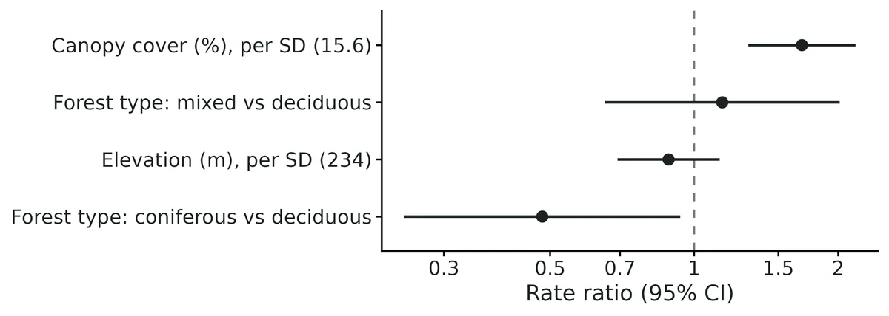
coefficients. Rate ratio for each predictor (points) with 95% Wald confidence intervals (bars) on a log axis: continuous predictors per 1 SD (SD in brackets, original units), factor levels against the reference level. Dashed line: no effect (1). A value of 1.5 means a 50% higher expected count.
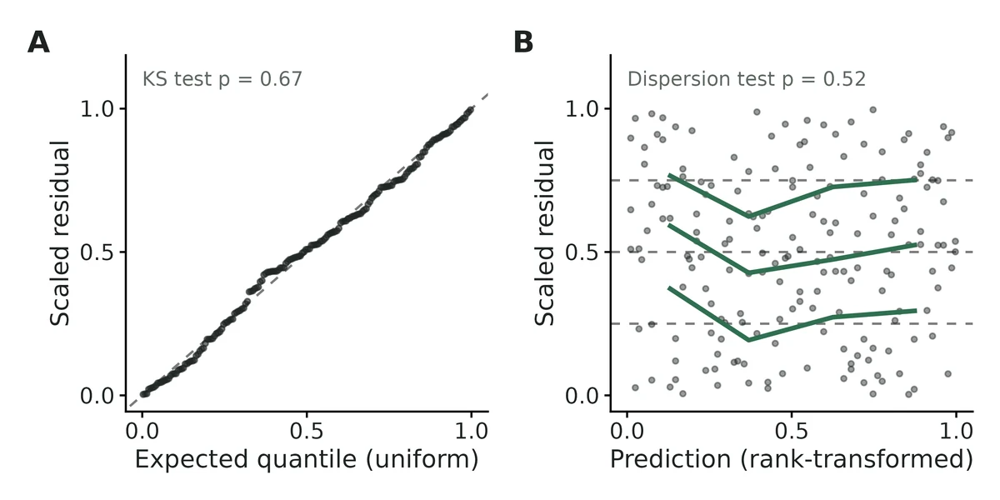
residuals. DHARMa simulated quantile residuals (250 simulations). (A) QQ plot against the uniform distribution expected under a correct model; points should follow the dashed line (Kolmogorov-Smirnov uniformity p = 0.67). (B) Residuals against the rank-transformed model prediction; solid lines are the 0.25, 0.5 and 0.75 quantiles of the residuals in bins of the prediction and should lie flat on the dashed lines (dispersion test p = 0.52; outlier test p = 1; zero-inflation p = 0.98).
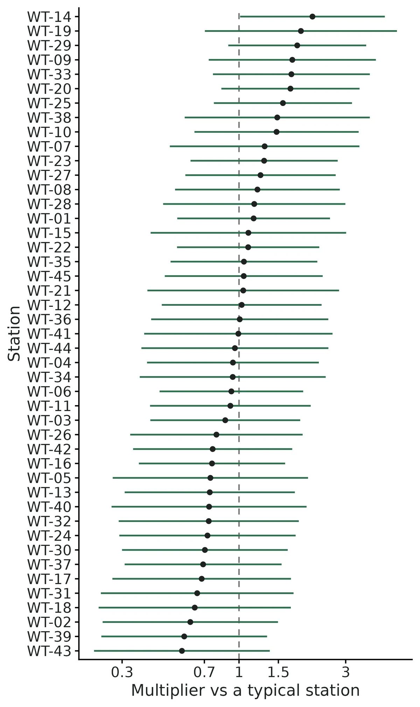
random_effects. Estimated random intercepts (conditional modes, points) of Station with 95% intervals from their conditional SDs (bars), sorted by estimate, shown as multipliers of the expected value on a log axis. Dashed line: a typical station (random effect 0). These intervals do not include uncertainty in the fixed effects.
Limits that matter at this design
At 45 stations x 4 visits with ~1 bird per count, the station random-intercept SD is biased -18% (23% of simulated fits singular) and NB theta is sometimes unbounded: neither is interpreted (this run).
Rate ratios for imprecise contrasts are biased upward in the mean (exp of a noisy log ratio): +7.2% conifer, +4.9% mixed here; log-scale coefficients unbiased (Known limit 1).
Wald intervals only; recovery coverage 0.905-0.940 at this design (Known limit 4).
Expected counts are for a typical station (random effect 0), not the landscape mean (Known limit 5).
Counts confound abundance and detection; a canopy effect could partly be detectability (N-mixture module separates them).
Spatial autocorrelation among stations is not modelled (Known limit 7).
S1.2 causal: Does riparian canopy cover cause more juvenile trout? Causal effect from 140 observational stream reaches (DAG + g-computation, simulated data with known truth)
DONE
Question
If riparian canopy cover were increased by 10 percentage points, how many more juvenile trout per 100 m reach would we expect, and how much of that effect runs through cooler August water temperature?
What the researcher typed
I surveyed 140 stream reaches last summer, one electrofishing pass each. The file is stream_trout_reaches.csv. I want to know whether riparian canopy cover actually causes more juvenile trout, and by how much for a 10 % increase in canopy, not just whether they're correlated. Elevation, farmland in the catchment and stream width all affect both canopy and trout. I think shade works partly by keeping the water cool. I also measured periphyton, which depends on both shade and how many trout graze. Please do a proper causal analysis and give me a report with figures I can use in a paper.
Study design
Item
Value
n_reaches
140
n_streams
7
surveys_per_reach
1
exposure
canopy_pct (continuous, %)
outcome
trout_per_reach (count)
family
negative binomial (log link)
contrast
+10 percentage points canopy
effects
total and controlled direct (water temperature held fixed)
uniformity_p = 0.711; dispersion_p = 0.016; outliers_p = 1; flagged = dispersion; note = Correct-family negbin flags dispersion in 1.3% of datasets (VALIDATION.md calibration); this draw is heavy-tailed (max 68 trout). Bootstrap sensitivity fit: ATE 1.18 (0.03 to 2.52), rate ratio 1.19 (1.005 to 1.385).
e_value
point = 1.66; ci = 1.29
Interpretation from the report
Average causal effect: increasing riparian canopy cover by 10 percentage points at every site would change the expected number of juvenile trout per 100 m reach by 1.18 (95% CI 0.258 to 2.10), from 6.30 to 7.48 on average. As a ratio (rate ratio), 1.19 (1.05 to 1.34): a 19% increase.
Controlled direct effect (holding August water temperature fixed): 0.566 (95% CI -0.296 to 1.43) on the count scale. On the model scale about 50% of the total effect runs through the mediator(s) (1 - direct/total = 0.50), a rough split that ignores the uncertainty in both.
Strategies the DAG says are BIASED give: No adjustment (crude association) -> 1.78 (+51%); Omit elevation_m (a confounder) -> 2.14 (+81%); Omit wetted_width_m (a confounder) -> 0.530 (-55%); Also adjust for mediator water_temp_c (over-control) -> 0.552 (-53%); Also adjust for periphyton_chla (collider) -> 1.59 (+34%).
Sensitivity to unmeasured confounding (E-value): to fully explain away this effect, an unmeasured common cause would have to raise both riparian canopy cover and juvenile trout per 100 m reach by a factor of 1.66 (risk-ratio scale) beyond the adjusted variables; to make the 95% CI include no effect, a factor of 1.29.
Checking the DAG against the data: the DAG implies 16 conditional independencies that can be tested. None is contradicted by the data (Fisher's C = 31.4, df = 32, p = 0.50). Passing these tests does not prove the DAG.
Model check: the negbin outcome model shows problems (DHARMa dispersion p < 0.05); the effect estimate may be off. Check the residual plot; a single p < 0.05 among several checks also happens by chance in 1 of 20 good models.
Figures
adjustment_comparison. What-if comparison: the same average causal effect estimated under different adjustment choices, with 95% confidence intervals. Green circle and vertical line: the DAG's adjustment set (main estimate). Blue triangles: other sets the DAG says are valid. Orange squares: choices the DAG says are biased (omitting a confounder, adjusting for a mediator or a collider). Dashed line: no effect.dag. Causal diagram (DAG) assumed for the analysis. Exposure: riparian canopy cover (%) (orange); outcome: juvenile trout per 100 m reach (blue). Green nodes are the adjustment set used for the total effect (elevation, fine sediment, wetted width); white nodes are not adjusted for. Solid arrows lie on causal paths from the exposure to the outcome; dashed arrows are other assumed direct effects. Each missing arrow is an assumption of no direct effect.effect. Causal dose-response curve: average predicted juvenile trout per 100 m reach if every site were set to each value of riparian canopy cover (%), keeping each site's own values of the adjustment variables (elevation, fine sediment, wetted width; g-computation). Shaded band: 95% confidence interval (conditional on the sites sampled). Rug: observed values of riparian canopy cover (%). The curve spans the 2nd-98th percentiles of the observed exposure.implied_independencies. Testable implications of the DAG: partial correlations that the DAG says should be zero (A vs B given the variables after |), with 95% confidence intervals (dagitty::localTests). All 16 are consistent with the DAG (none contradicted after Holm correction). Consistency does not prove the DAG is right.
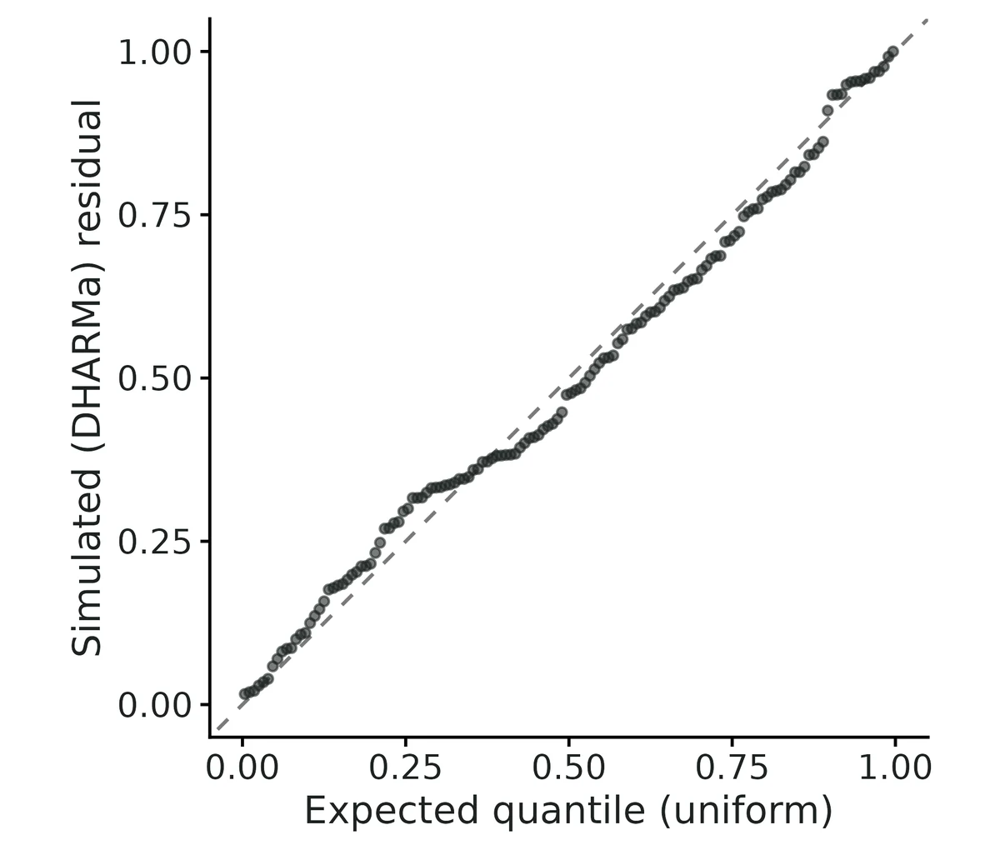
residuals. Outcome model check: DHARMa simulated quantile residuals of the outcome model plotted against uniform quantiles. Points should follow the dashed 1:1 line; S-shapes indicate over- or underdispersion.
Limits that matter at this design
The DAG is untestable where it matters most: local tests detect missing arrows between measured variables (95% power at 120 sites) but not an unmeasured confounder of canopy and trout; the E-value (1.66; 1.29 for the CI) is reported for that reason.
A moderate collider (periphyton) can pass on the ratio scale (+5.1% bias) while failing on the count-scale ATE (+18%) and beta; the DAG, not the data, must exclude it.
Small samples: the count-scale ATE is biased upward (+18%) at 40 sites; at this design (140 reaches) it passed (+1.8%).
Only controlled direct effects are estimated; the ~50% share through water temperature is a rough log-scale split, not a natural indirect effect. The direct effect has only 51-60% power at 140 reaches.
No exposure x covariate interactions; confounders act linearly on the log scale; simulation tested only linear-Gaussian non-outcome nodes.
Detection is not modelled (one electrofishing pass); if capture efficiency changes with canopy, the effect mixes ecology and detection.
DHARMa flagged dispersion (p = 0.016) on this heavy-tailed draw; bootstrap intervals are ~35% wider and only just exclude no effect (ATE 0.03 to 2.52).
recovery settings
Item
Value
nsim
200
n_failed
0
coverage_bound
0.904
config
modules/causal/example/recovery.yaml
power_definition
share of replicates whose 95% CI excludes the null (0 or ratio 1)
S1.3 sem: Fire severity, vegetation and songbirds after a wildfire (piecewise SEM with a Poisson GLMM; simulated data with known truth)
OPEN
Question
How does wildfire severity affect breeding songbird detections, directly and indirectly through canopy loss and shrub regrowth, and does soil moisture affect birds through shrubs?
What the researcher typed
I have a CSV of 120 forest plots from 12 burn units after a wildfire (burned_forest_plots.csv). For each plot I have fire severity (dNBR), canopy cover, soil moisture, shrub cover and the number of birds detected in one point count. I think fire reduces canopy, less canopy means more shrubs, more shrubs means more birds, wetter soil means more shrubs, and fire might also reduce birds directly. Can you test this diagram, tell me how strong each link is, and how much of the fire effect on birds goes through the vegetation? Plots in the same burn unit are not independent. Please give me a report and figures for a paper.
Study design
Item
Value
n_plots
120
n_burn_units
12
plots_per_unit
10
point_counts_per_plot
1
n_variables
5
components
canopy ~ fire (Gaussian); shrub ~ canopy + moisture (Gaussian); birds ~ shrub + fire + (1|burn_unit) (Poisson, log)
Global fit: Fisher's C = 11.06 (df = 8), P = 0.198: no evidence that the model leaves out a needed link. This supports, but does not prove, the causal structure drawn.
Fire severity -> canopy cover: an increase of 100 dNBR is associated with a difference of -5.87 (95% CI -6.61 to -5.14) % canopy cover.
Canopy cover -> shrub cover: an increase of 10 % canopy is associated with a difference of -2.63 (95% CI -3.41 to -1.85) % shrub cover.
Soil moisture -> shrub cover: an increase of 5 % moisture is associated with a difference of 3.29 (95% CI 2.12 to 4.45) % shrub cover.
Shrub cover -> bird detections: an increase of 10 % shrub is associated with expected bird detections multiplied by 1.33 (95% CI 1.20 to 1.47; +33%).
Fire severity -> bird detections (direct): an increase of 100 dNBR is associated with expected bird detections multiplied by 0.91 (95% CI 0.87 to 0.95; -9%).
Per 1-SD increase in fire severity (212 dNBR), the indirect route alone multiplies expected bird detections by 1.10 (95% CI 1.05 to 1.15); the total association corresponds to x0.90 (95% CI 0.83 to 0.99). Direct and indirect associations have opposite signs and partly cancel; a weak total does not mean the driver has little influence.
Soil moisture affects birds only indirectly through shrubs: x1.10 (95% CI 1.05 to 1.16) per 1 SD (5.02 %) of moisture.
Bird counts mix abundance with detectability; the SEM cannot separate an effect on birds from an effect on detecting them.
Paths are associations unless the diagram is causally complete; passing the d-sep test does not prove it.
Figures
path_diagram. Path diagram with standardised coefficients (piecewiseSEM conventions: SD scaling; latent-theoretic for binary, observation-empirical for count responses). Arrow width is proportional to |coefficient|; colour gives the sign; dashed arrows have a 95% confidence interval that includes zero. Dotted arrows (labelled with P) are links the model omits but the d-separation test flags (P < 0.05).indirect_effects. Direct, indirect (summed over all mediated routes) and total standardised effects (points) with 95% Monte Carlo confidence intervals (lines); dashed line = no effect. Pairs with no direct path show only indirect and total (equal) effects.
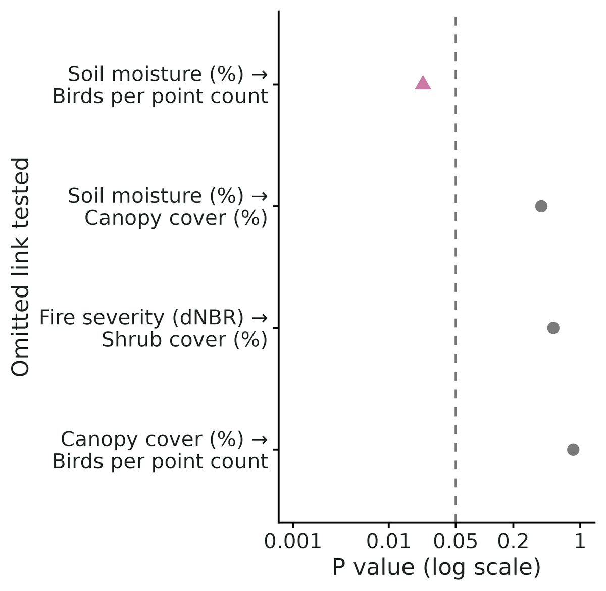
dsep. d-separation tests (Shipley 2009): each row tests whether a link the model omits is needed, conditioning on both variables' parents (points = P values; highlighted triangles flag P < 0.05, circles are consistent with the model). Fisher's C = 11.06, df = 8, P = 0.198. Dashed line P = 0.05.partial_fire_severity_dnbr_to_canopy_cover_pct. Conditional effect of Fire severity (dNBR) on Canopy cover (%) (response scale; line) with 95% confidence band; other predictors of Canopy cover (%) held at their means. Points are partial residuals (observed value minus the fitted contribution of the other predictors).partial_canopy_cover_pct_to_shrub_cover_pct. Conditional effect of Canopy cover (%) on Shrub cover (%) (response scale; line) with 95% confidence band; other predictors of Shrub cover (%) held at their means. Points are partial residuals (observed value minus the fitted contribution of the other predictors).
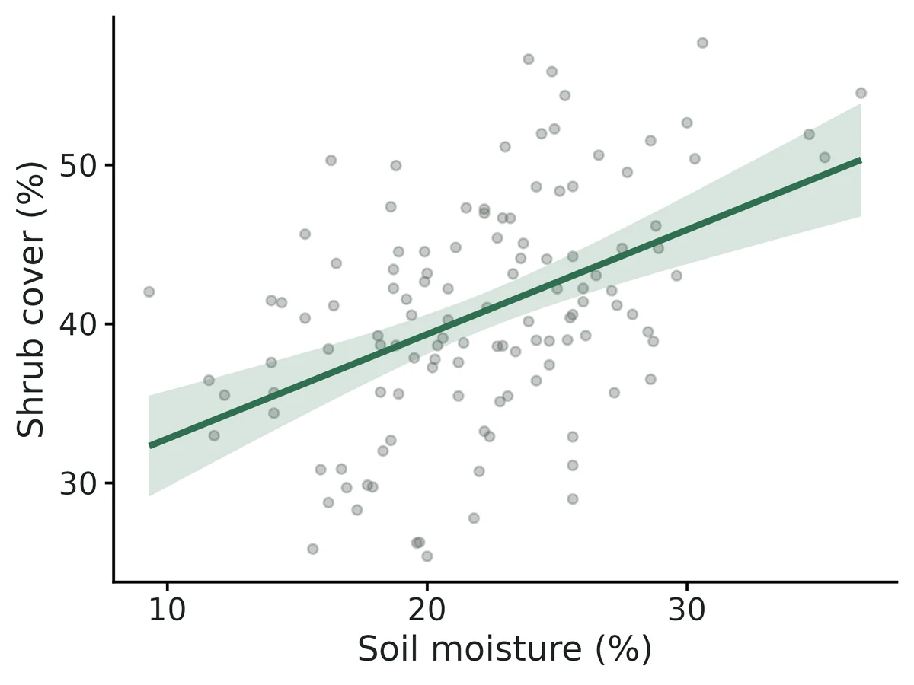
partial_soil_moisture_pct_to_shrub_cover_pct. Conditional effect of Soil moisture (%) on Shrub cover (%) (response scale; line) with 95% confidence band; other predictors of Shrub cover (%) held at their means. Points are partial residuals (observed value minus the fitted contribution of the other predictors).
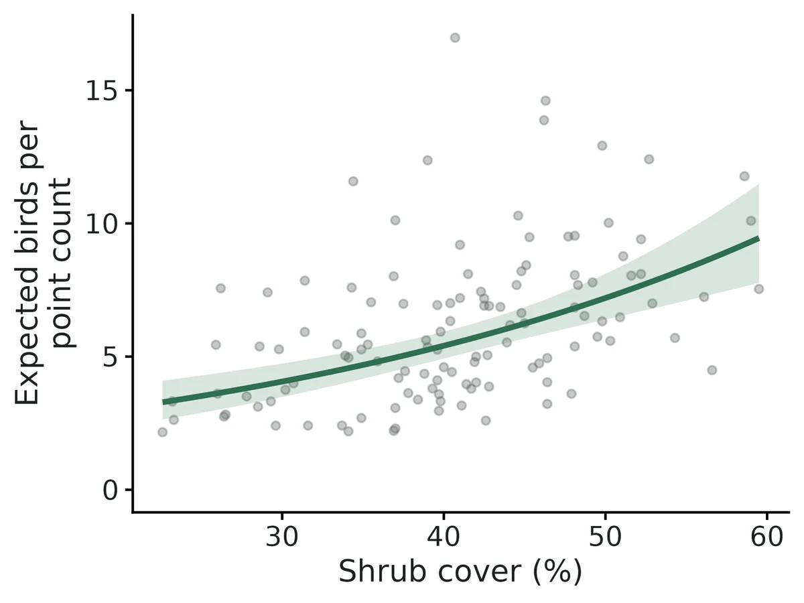
partial_shrub_cover_pct_to_bird_detections. Conditional effect of Shrub cover (%) on Birds per point count (response scale; line) with 95% confidence band; other predictors of Birds per point count held at their means, random effects at zero. Points are partial residuals: working residuals added to the conditional linear predictor and back-transformed to counts.
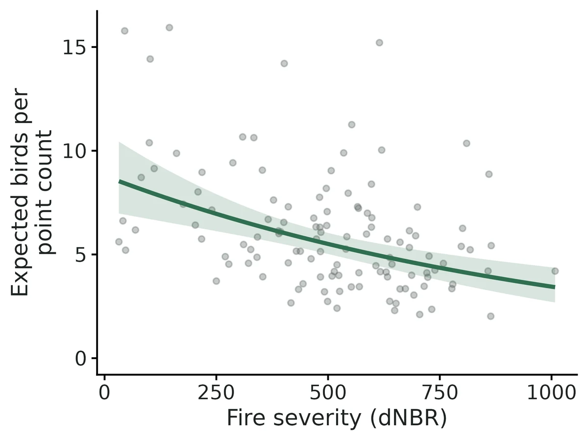
partial_fire_severity_dnbr_to_bird_detections. Conditional effect of Fire severity (dNBR) on Birds per point count (response scale; line) with 95% confidence band; other predictors of Birds per point count held at their means, random effects at zero. Points are partial residuals: working residuals added to the conditional linear predictor and back-transformed to counts.
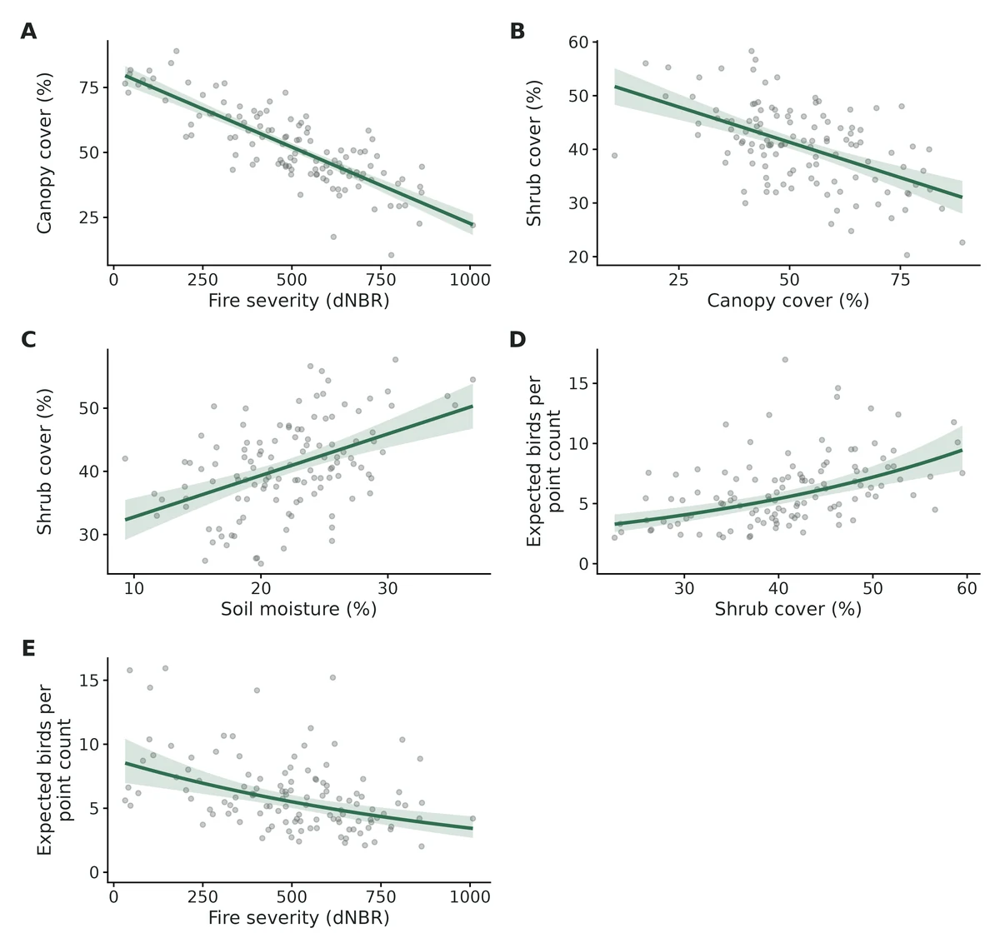
effects_panel. All path-level conditional effects on the response scale (panels as in the individual partial_ figures; same bands and points).
Limits that matter at this design
Planted-truth gate FAILED 6/24 at this design: standardised coefficients involving the Poisson GLMM bird component are inflated by about +17% (coverage of std shrub -> birds 0.880). Cause (dev/sem/si/std_count_check.R): the observation-empirical scaling sd(eta)/cor(y, fitted) uses fitted values that include the 12 burn-unit BLUPs, inflating cor (0.664 vs 0.623); fixed-only fitted values give +2.2%. Matches piecewiseSEM::coefs(); VALIDATION.md Known limit 3 (reported there as ~+7%). Report raw paths, rate ratios and effects in original units; use standardised bird values only to rank routes.
Omitted paths or unmeasured confounders bias indirect effects (~-42% in the negative control); d-sep detects an omitted path of standardised size ~0.3 only 73% of the time at n = 100 (Known limit 5).
Counts mix abundance and detectability (README not_for); use N-mixture/occupancy with repeat visits to separate them.
Interactions, nonlinear paths and feedback loops are not supported (Known limit 6).
Total fire -> birds has only 9% power at this design because direct and indirect routes nearly cancel; in this data set its 95% CI (-0.00090 to -0.00007) misses the true -0.00012, as does canopy -> shrub (CI -0.341 to -0.185 vs truth -0.35): 7 of 9 raw intervals contain the truth.
Single d-sep claims can be false alarms: moisture -> birds P = 0.023 although no such link exists in the truth.
Is pileated woodpecker occupancy of forest stands associated with forest cover and elevation, allowing for birds that were present but missed (detection varying with survey date and observer)?
What the researcher typed
I have pileated woodpecker call-playback surveys from 120 forest stands, up to 4 visits each in May-June 2025. The files are detections.csv (one row per visit: stand, visit number, date, day of year, observer, detected 1/0) and sites.csv (forest cover %, elevation in m, stand age). Does forest cover or elevation affect whether woodpeckers occupy a stand? Please account for birds we missed, and allow detection to change with date and observer. I need results and figures for a paper.
Study design
Item
Value
model
static
n_sites
120
max_surveys
4
surveys_done
405
prop_missing
0.156
visits_per_site
4 = 72; 3 = 21; 2 = 27
n_observers
3
n_detections
52
n_sites_detected
34
engine
unmarked (maximum likelihood)
True values used to simulate the example data
Item
Value
occupancy_prob
0.4061
detection_prob
0.4025
psi_beta_forest_cover_pct
1.05
psi_beta_elevation_m
-0.475
p_beta_julian_day
-0.5323
p_beta_observerJK
-0.6
p_beta_observerMR
0.4
prop_sites_occupied
0.375
n_sites_occupied
45
note
simulated; slopes are logit change per 1 SD of the covariate, intercepts are probabilities at mean covariates with observer AB
Planted-truth recovery at this design
run
param
truth
mean_est
rel_bias
coverage
power
pass
A_module_recover
detection_prob
0.402
0.4073
0.0132
0.95
–
PASS
A_module_recover
occupancy_prob
0.406
0.4022
-0.0093
0.945
–
PASS
A_module_recover
p_beta_effort
-0.532
-0.5462
-0.0266
0.96
0.865
PASS
A_module_recover
prop_sites_occupied
0.4204
0.4222
0.0052
0.955
–
PASS
A_module_recover
psi_beta_forest
1.05
1.113
0.0604
0.96
0.99
PASS
B_full_example_model
detection_prob
0.3965
0.3933
-0.0082
0.965
–
PASS
B_full_example_model
occupancy_prob
0.3984
0.4057
0.0191
0.965
–
PASS
B_full_example_model
p_beta_julian_day
-0.5321
-0.5476
-0.0293
0.97
0.88
PASS
B_full_example_model
p_beta_observerJK
-0.6
-0.6349
-0.0581
0.935
0.315
PASS
B_full_example_model
p_beta_observerMR
0.4
0.4276
0.0691
0.98
0.155
PASS
B_full_example_model
prop_sites_occupied
0.421
0.4328
0.028
0.975
–
PASS
B_full_example_model
psi_beta_elevation_m
-0.513
-0.5438
-0.0602
0.97
0.43
PASS
B_full_example_model
psi_beta_forest_cover_pct
1.017
1.114
0.0958
0.96
0.975
PASS
Estimates from the example data
param
estimate
lower
upper
truth
occupancy_prob
0.3318
0.2024
0.4929
0.4061
psi_beta_forest_cover_pct
1.035
0.3114
1.758
1.05
psi_beta_elevation_m
-1.071
-1.719
-0.4226
-0.475
detection_prob
0.3939
0.2622
0.5431
0.4025
p_beta_julian_day
-0.4924
-0.8981
-0.0866
-0.5323
p_beta_observerJK
-1.493
-2.48
-0.5068
-0.6
p_beta_observerMR
0.5033
-0.4335
1.44
0.4
prop_sites_occupied
0.3887
0.3083
0.4833
0.375
Convergence and goodness of fit
Item
Value
converged
yes
boundary_estimates
no
max_logit_se
0.503
rhat
not applicable (maximum likelihood)
gof
test = MacKenzie-Bailey chi-square, parametric bootstrap; n_boot = 500; chisq = 28.3; c_hat = 1.31; p = 0.138; verdict = no evidence of lack of fit
The species was detected at least once at 34 of 120 sites (naive occupancy 0.28). Allowing for missed detections, the estimated probability that a site with average covariate values is occupied is 0.33 (95% CI 0.20 to 0.49).
Of the 120 surveyed sites, an estimated 47 (95% CI 37 to 58) were actually occupied (proportion 0.39 (95% CI 0.31 to 0.48)); this finite-sample estimate applies to these sites only, not to the wider landscape.
With the typical 4 surveys per site, an occupied site is detected at least once with probability 0.87 (95% CI 0.70 to 0.96), so about 13% of occupied sites go undetected with this survey effort.
Going from the 10th to the 90th percentile of forest cover (22 to 85.3%), occupancy changes from 0.09 (95% CI 0.03 to 0.28) to 0.62 (95% CI 0.36 to 0.81); each 10-unit increase multiplies the odds by 1.54.
Going from the 10th to the 90th percentile of elevation (361 to 1250 m), occupancy changes from 0.69 (95% CI 0.41 to 0.88) to 0.12 (95% CI 0.04 to 0.27).
Detection per survey by observer: AB 0.39 (95% CI 0.26 to 0.55); JK 0.13 (95% CI 0.05 to 0.26); MR 0.52 (95% CI 0.30 to 0.71).
These are associations from an observational design; they do not by themselves show that a covariate causes the change.
Goodness of fit (MacKenzie-Bailey test, 500 bootstrap replicates): c-hat = 1.31, p = 0.138. No evidence of lack of fit; this test has low power against unmodelled differences in detection among sites.
Figures
occupancy_forest_cover_pct. Occupancy probability versus Forest cover (%) (line: estimate; band: 95% confidence interval from 2000 draws of the asymptotic normal distribution of the maximum-likelihood estimates), holding Elevation (m) at its mean (834). Rug: observed Forest cover (%) values. Curves span the observed range of Forest cover (%).occupancy_elevation_m. Occupancy probability versus Elevation (m) (line: estimate; band: 95% confidence interval from 2000 draws of the asymptotic normal distribution of the maximum-likelihood estimates), holding Forest cover (%) at its mean (58.2). Rug: observed Elevation (m) values. Curves span the observed range of Elevation (m).detection_julian_day. Detection probability per survey versus Survey date (day of year) (line: estimate; band: 95% confidence interval from 2000 draws of the asymptotic normal distribution of the maximum-likelihood estimates), holding Observer at its reference level (AB). Rug: observed Survey date (day of year) values for surveys done. Curves span the observed range of Survey date (day of year). This is an effect on detecting the species where it is present, not on where it occurs.detection_observer. Detection probability per survey for each level of Observer (points: estimates; bars: 95% confidence intervals), holding Survey date (day of year) at its mean (142).
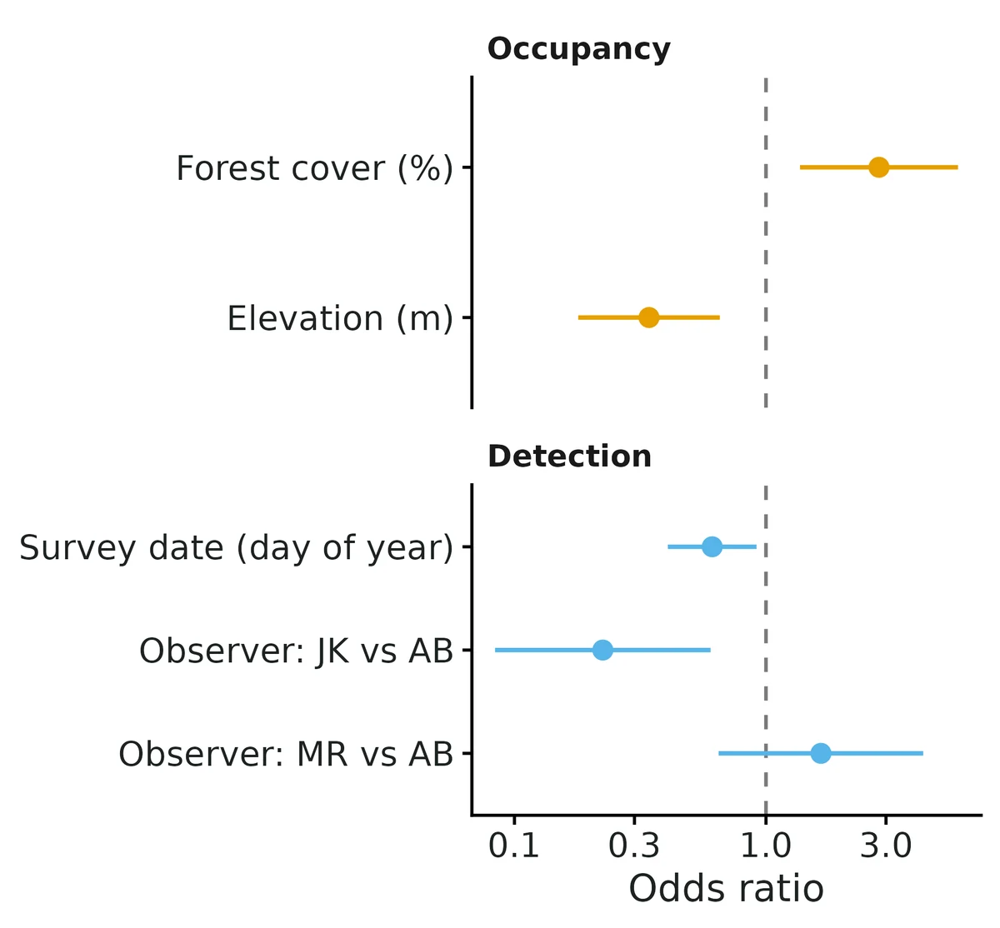
coefficients. Odds ratios for every covariate effect, grouped by process; factor levels are relative to the reference level (points: estimates; bars: 95% confidence intervals; log scale). Dashed line: no effect (odds ratio 1). Numeric covariates were standardised, so each odds ratio is per 1 SD of the covariate (1 SD: Forest cover (%) 23.9; Elevation (m) 333; Survey date (day of year) 13.3).
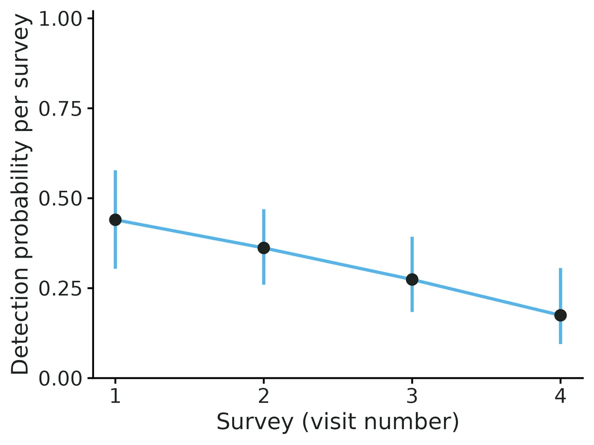
detection_by_survey. Per-survey detection probability by visit number, averaged over the sites surveyed on that visit using each survey's own covariate values (points: estimates; bars: 95% confidence intervals). Surveys per visit number: visit 1: 120, visit 2: 120, visit 3: 93, visit 4: 72.
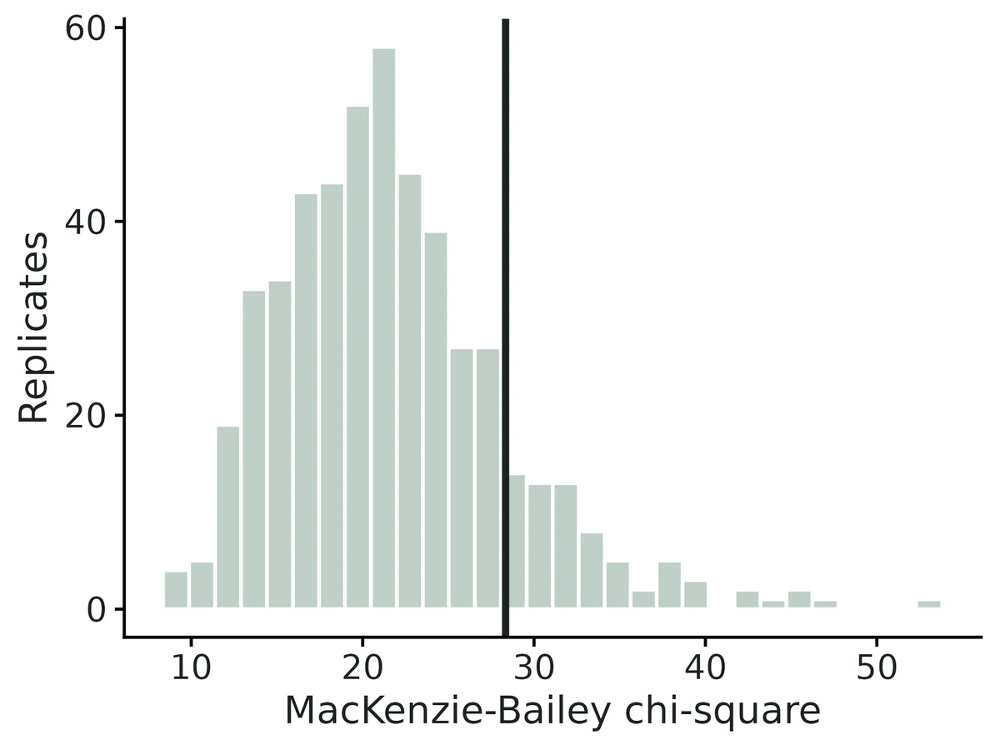
gof. Goodness of fit (MacKenzie & Bailey 2004): histogram of the chi-square statistic for 500 data sets simulated from the fitted model and refitted (parametric bootstrap); vertical line: observed data (chi-square 28.3, c-hat 1.31, p = 0.138). A small p (< 0.05) or c-hat well above 1 means the detection histories vary more than the model allows.
Limits that matter at this design
Small samples inflate occupancy slopes: at 120 stands the forest effect was +6.0% (Run A) and +9.6% (Run B) too strong on average, just inside the 10% gate (100 sites fails at +11.5%). Trust the direction; treat the size as possibly a little high.
Low power for the secondary effects at this design: an elevation effect of the simulated size was detected in 43% of replicates, observer differences in 16-32%.
Unmodelled detection heterogeneity among sites biases occupancy low (about -23% at logit SD 1.5) and the MacKenzie-Bailey test flags it only about 1 time in 10.
Few surveys with low detection fail (2 surveys, p = 0.2); not the case here (cumulative detection 0.87 over 4 visits), though 27 stands had only 2 visits.
The module simulator has one occupancy and one detection covariate, so the standard recovery (Run A) omits elevation and observer; Run B (dev/occu-single/si_full_recovery.R) covers the full example model.
No false positives, no spatial autocorrelation, closure assumed within the May-June season.
S1.5 occu-rota: Do gray foxes avoid coyotes, and does housing density change that? Multispecies occupancy with species interactions (Rota et al. 2016)
DONE
Question
Are gray foxes less likely to occupy camera sites where coyotes are present, and does that avoidance weaken with housing density, after allowing for imperfect detection and cameras that were down?
What the researcher typed
I have camera-trap data from 220 stations, 6 weekly occasions in June-July 2024. The files are camera_detections.csv (one row per camera and week: days the camera worked, and 1/0 for coyote, gray fox and bobcat) and camera_sites.csv (forest cover within 500 m, housing units per km2, whether the camera is on a trail). Are gray foxes less likely to occupy sites where coyotes are present, and does that change with housing density? Please account for animals the cameras missed and for cameras that were down. Detection probably depends on days active and on whether the camera faces a trail. I need results and figures for a paper.
simulated with dev/occu-rota/make_example.R (set.seed(2025)) from a 3-species model; coyote first-order values are a linear approximation after summing bobcat out; derived quantities at forest 52.4%, housing 39.4/km2, 6.5 active days, off trail
test = parametric bootstrap chi-square (detection-frequency + co-detection); n_boot = 200; stat = 42.1; c_hat = 1.12; p = 0.25; verdict = no evidence of lack of fit
independent_routes
hand-written likelihood: same loglik (-825.6936), coefficients within 1.3e-4 SE; Nimble posterior means within 0.22 SE (VALIDATION.md section 4)
Allowing for missed detections, the estimated probability that each species occupies a site with average covariate values is: coyote 0.60 (95% CI 0.50 to 0.69); gray fox 0.25 (95% CI 0.18 to 0.34).
At average covariate values, coyote and gray fox occur together less often than expected if they occurred independently (negative co-occurrence; this pattern alone does not show that one species avoids the other).
Where coyote is present, gray fox occupies a site with probability 0.15 (95% CI 0.08 to 0.27); where coyote is absent, 0.41 (95% CI 0.27 to 0.57).
The co-occurrence odds ratio is 0.25 (95% CI 0.09 to 0.66); a value of 1 would mean no association.
The coyote-gray fox co-occurrence odds ratio is multiplied by 2.06 (95% CI 0.85 to 4.96) per 1 SD (0.984) increase in log(housing_per_km2), i.e. by 1.66 (95% CI 0.89 to 3.09) per doubling of housing_per_km2 (the interval includes 1, so the data do not show that the association changes along this gradient).
At low housing_per_km2 (10th percentile), P(gray fox | coyote present) = 0.04 (95% CI 0.01 to 0.14) vs coyote absent 0.27 (95% CI 0.13 to 0.49); at high housing_per_km2 (90th percentile), 0.42 (95% CI 0.25 to 0.61) vs 0.55 (95% CI 0.32 to 0.77).
Across the observed range of forest_pct (10th percentile 15.8 to 90th percentile 87), marginal occupancy changes: coyote from 0.71 (95% CI 0.57 to 0.83) to 0.46 (95% CI 0.34 to 0.59); gray fox from 0.12 (95% CI 0.06 to 0.22) to 0.46 (95% CI 0.32 to 0.59). This is an association, not necessarily a causal effect.
Per-survey detection probability where the species is present (average survey conditions): coyote 0.23 (95% CI 0.18 to 0.29); gray fox 0.30 (95% CI 0.22 to 0.39). With 6 surveys, the chance of detecting a species at least once at an occupied site is coyote 0.80, gray fox 0.88.
Caution: co-occurrence is not proof of a species interaction (Blanchet et al. 2020).
Goodness of fit: no evidence of lack of fit (parametric bootstrap, p = 0.25, c-hat 1.12).
Figures
conditional_occupancy. Conditional occupancy against Housing density (units per km²): each panel shows the probability that one species occupies a site where the other is present vs absent (other covariates held at Forest cover within 500 m (%) = 52.4 (mean)), with 95% confidence band (from the asymptotic normal distribution of the maximum-likelihood estimates). Co-occurrence is not evidence of an ecological interaction.conditional_occupancy_average. Probability that each species occupies a site at average covariate values (Forest cover within 500 m (%) = 52.4 (mean); Housing density (units per km²) = 39.4 (geometric mean, as the model uses its logarithm)): marginal (any state of the other species) and conditional on another species being absent or present ('A | B' = A given B). Points: estimates; bars: 95% confidence intervals.marginal_occupancy_forest_pct. Marginal occupancy probability of each species (line) against Forest cover within 500 m (%) (other covariates held at Housing density (units per km²) = 39.4 (geometric mean, as the model uses its logarithm)), with 95% confidence band (from the asymptotic normal distribution of the maximum-likelihood estimates). Rug: covariate values at the surveyed sites.conditional_coyote_given_gray_fox_forest_pct. Probability that Coyote occupies a site where Gray fox is present vs absent, against Forest cover within 500 m (%) (other covariates held at Housing density (units per km²) = 39.4 (geometric mean, as the model uses its logarithm)), with 95% confidence band (from the asymptotic normal distribution of the maximum-likelihood estimates). Diverging curves mean the co-occurrence association changes along the gradient; parallel curves on the logit scale mean it does not. Co-occurrence is not evidence of an ecological interaction. Rug: covariate values at the surveyed sites.
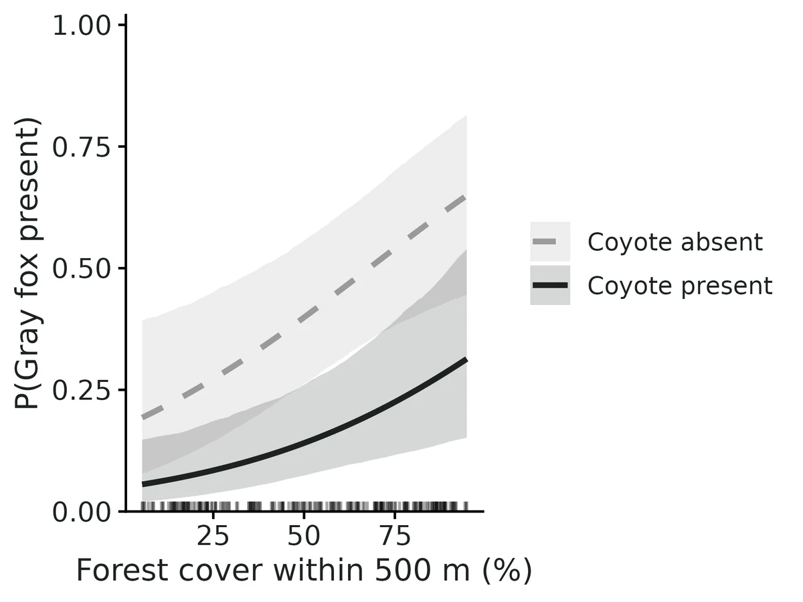
conditional_gray_fox_given_coyote_forest_pct. Probability that Gray fox occupies a site where Coyote is present vs absent, against Forest cover within 500 m (%) (other covariates held at Housing density (units per km²) = 39.4 (geometric mean, as the model uses its logarithm)), with 95% confidence band (from the asymptotic normal distribution of the maximum-likelihood estimates). Diverging curves mean the co-occurrence association changes along the gradient; parallel curves on the logit scale mean it does not. Co-occurrence is not evidence of an ecological interaction. Rug: covariate values at the surveyed sites.
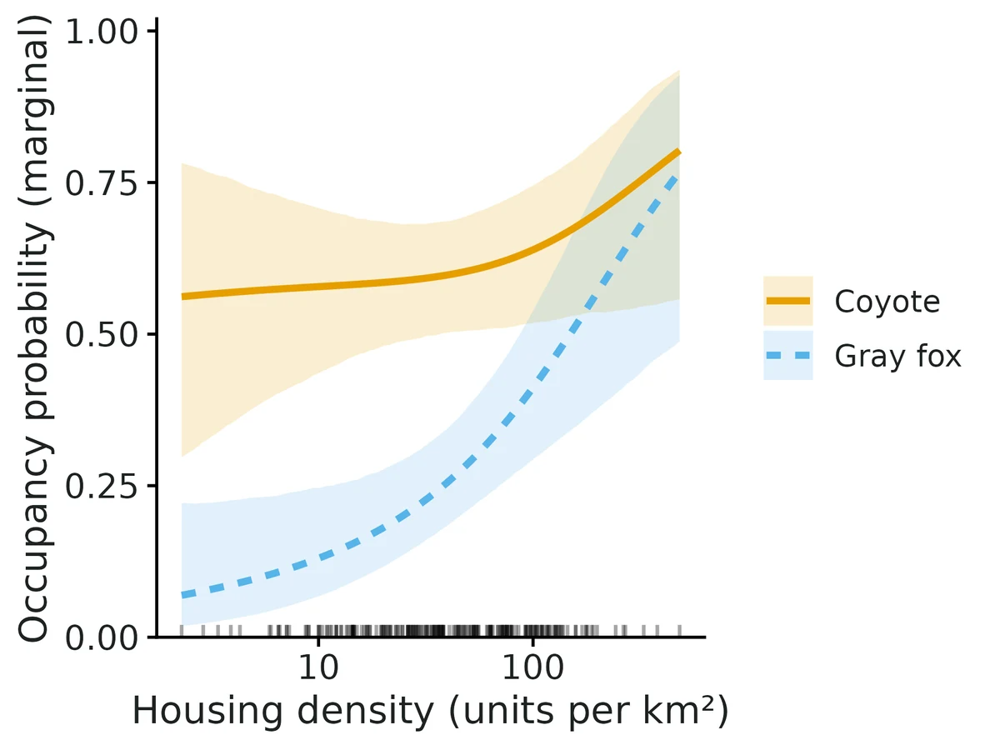
marginal_occupancy_housing_per_km2. Marginal occupancy probability of each species (line) against Housing density (units per km²) (other covariates held at Forest cover within 500 m (%) = 52.4 (mean)), with 95% confidence band (from the asymptotic normal distribution of the maximum-likelihood estimates). Rug: covariate values at the surveyed sites.
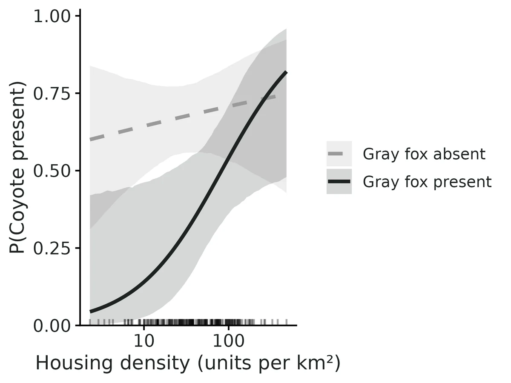
conditional_coyote_given_gray_fox_housing_per_km2. Probability that Coyote occupies a site where Gray fox is present vs absent, against Housing density (units per km²) (other covariates held at Forest cover within 500 m (%) = 52.4 (mean)), with 95% confidence band (from the asymptotic normal distribution of the maximum-likelihood estimates). Diverging curves mean the co-occurrence association changes along the gradient; parallel curves on the logit scale mean it does not. Co-occurrence is not evidence of an ecological interaction. Rug: covariate values at the surveyed sites.
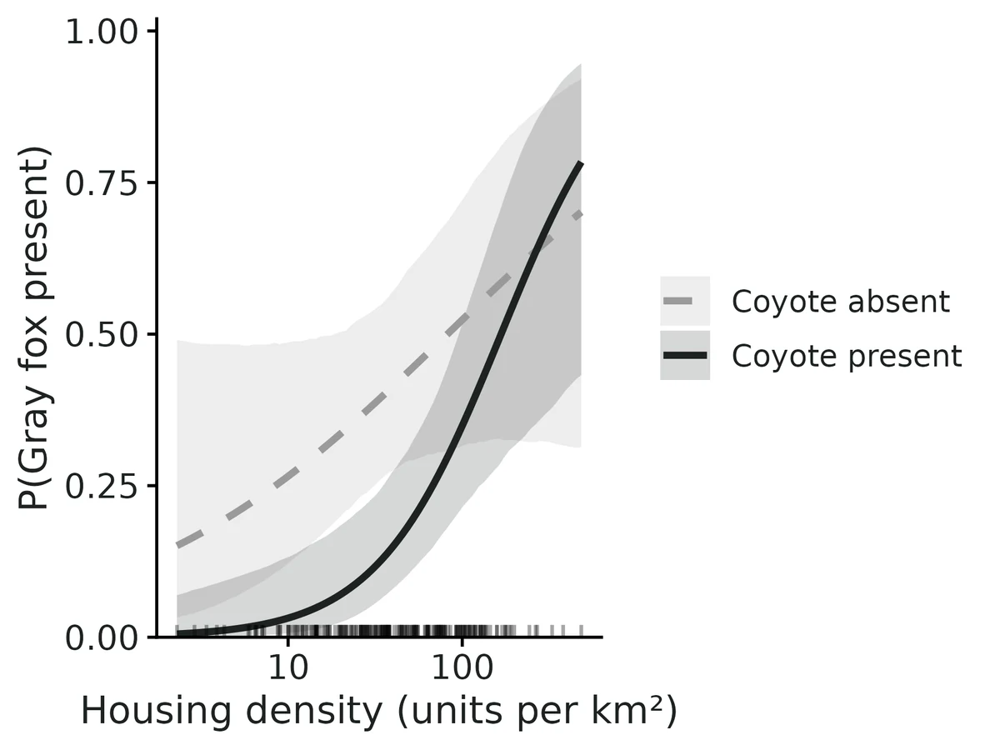
conditional_gray_fox_given_coyote_housing_per_km2. Probability that Gray fox occupies a site where Coyote is present vs absent, against Housing density (units per km²) (other covariates held at Forest cover within 500 m (%) = 52.4 (mean)), with 95% confidence band (from the asymptotic normal distribution of the maximum-likelihood estimates). Diverging curves mean the co-occurrence association changes along the gradient; parallel curves on the logit scale mean it does not. Co-occurrence is not evidence of an ecological interaction. Rug: covariate values at the surveyed sites.
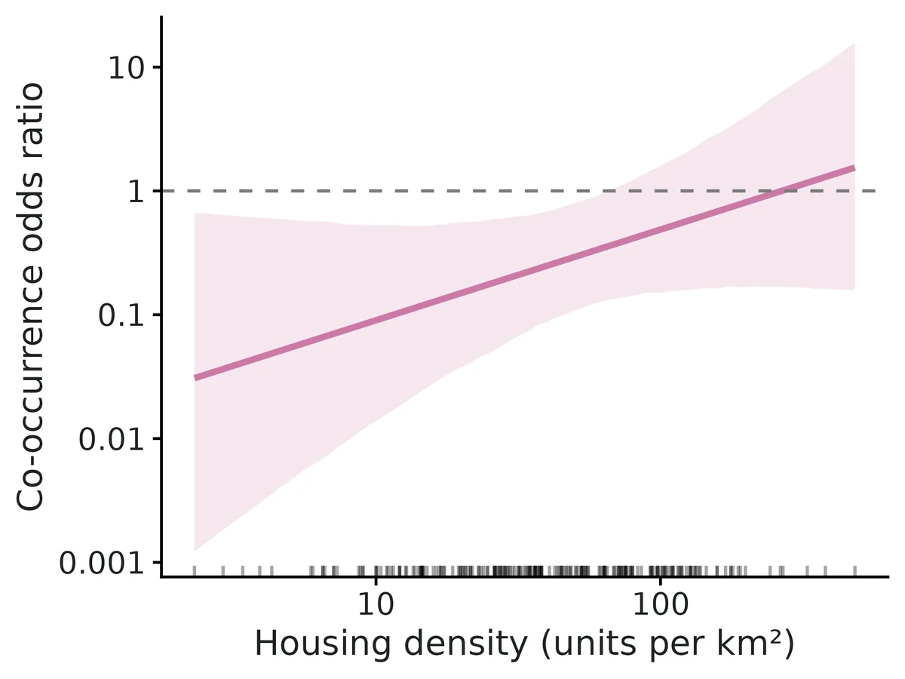
interaction_housing_per_km2. Second-order natural parameter f_AB (Coyote & Gray fox) expressed as a co-occurrence odds ratio exp(f_AB) (log axis) against Housing density (units per km²), with 95% confidence band (from the asymptotic normal distribution of the maximum-likelihood estimates). Dashed line: odds ratio 1 (species occur independently). Above 1: the pair occurs together more often than expected under independence; below 1: less often. Co-occurrence is not evidence of an ecological interaction. Rug: covariate values at the surveyed sites.
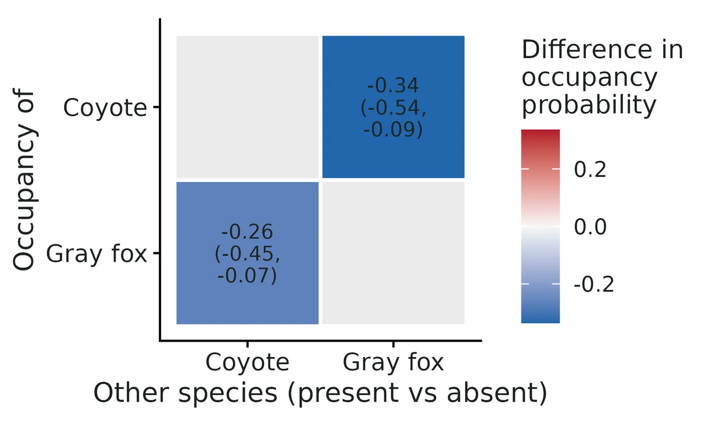
co_occurrence_matrix. Change in each row species' occupancy probability where the column species is present vs absent, at average covariate values (Forest cover within 500 m (%) = 52.4 (mean); Housing density (units per km²) = 39.4 (geometric mean, as the model uses its logarithm)): P(row | column present) - P(row | column absent), with 95% confidence intervals. Red: the species is more likely to occupy sites where the other is present; blue: less likely. Co-occurrence is not evidence of an ecological interaction.
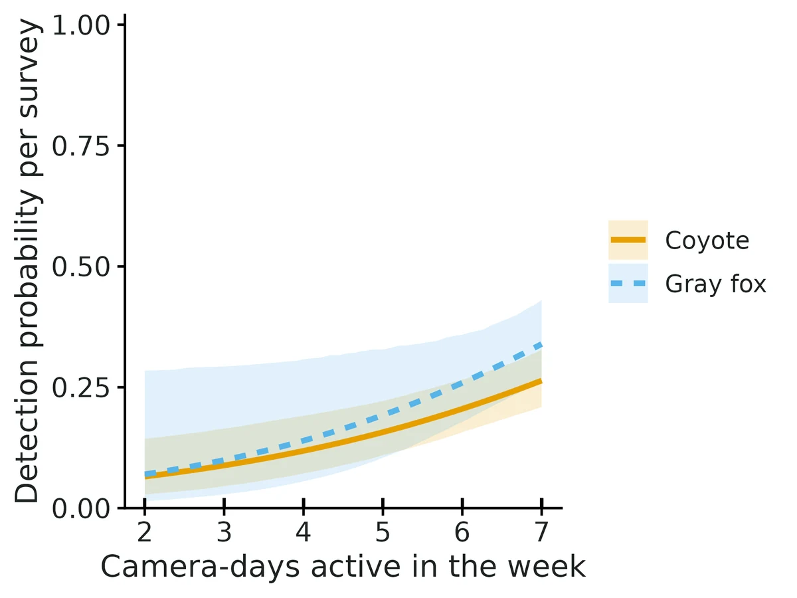
detection_days_active. Probability of detecting each species on one survey where it is present, against Camera-days active in the week (other detection covariates held at Camera on trail = no (reference level)), with 95% confidence intervals.
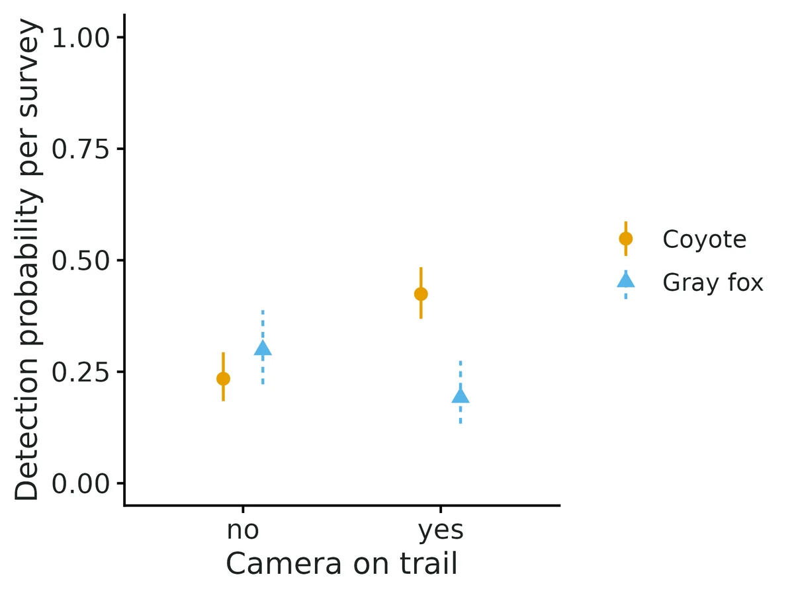
detection_on_trail. Probability of detecting each species on one survey where it is present, against Camera on trail (other detection covariates held at Camera-days active in the week = 6.52 (mean)), with 95% confidence intervals.
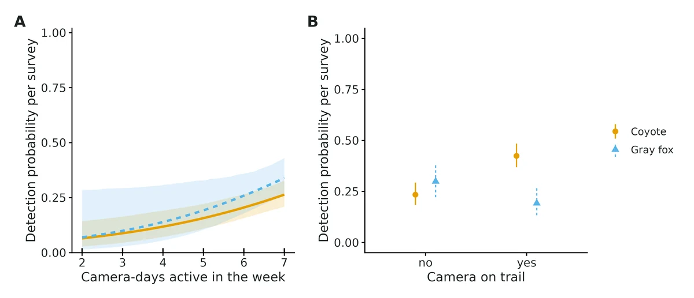
detection. Detection probability per survey for each species against each detection covariate (in each panel, the other detection covariates held at Camera-days active in the week = 6.52 (mean); Camera on trail = no (reference level)), with 95% confidence intervals.
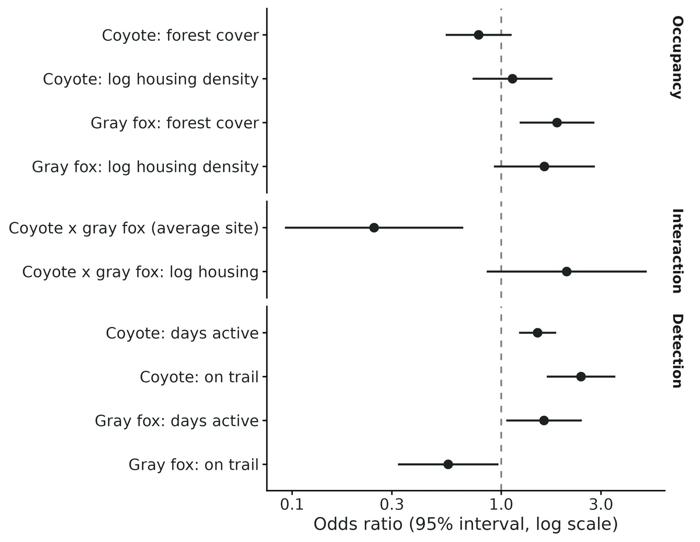
coefficients. Link-scale coefficients shown as odds ratios (log axis); dashed line = 1 (no effect). Covariate effects are per 1 SD of the (transformed) covariate, or a factor level vs the reference level. Interaction intercepts are co-occurrence odds ratios at average covariate values; interaction slopes multiply that odds ratio per 1 SD. Bars: 95% Wald confidence intervals.
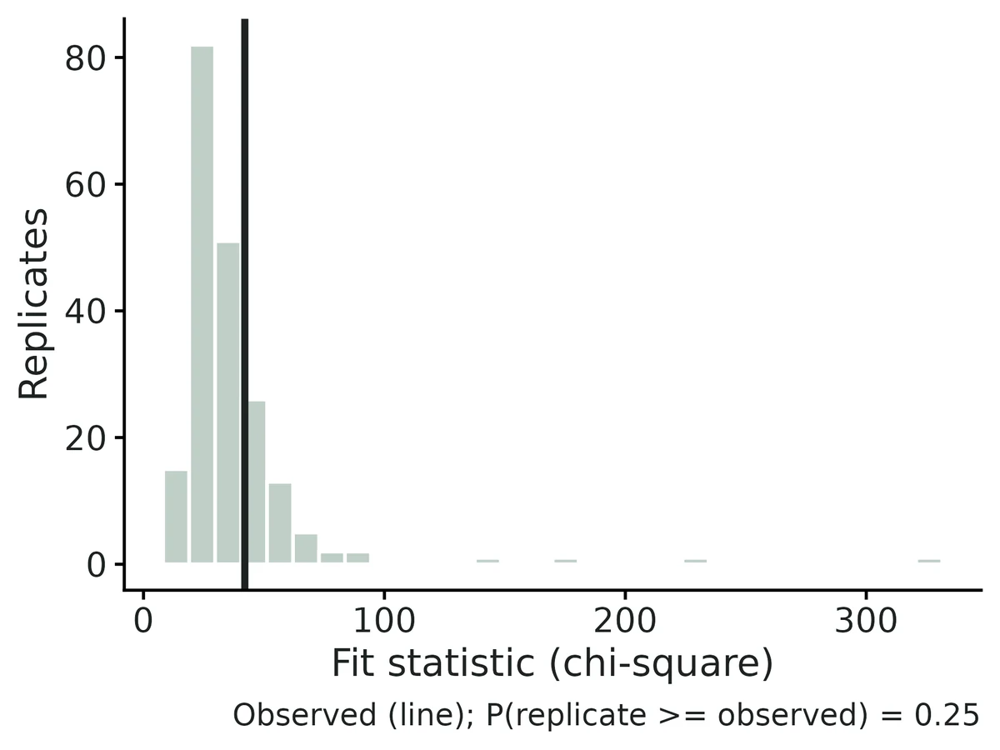
gof. Goodness of fit (parametric bootstrap): histogram of the fit statistic (chi-square on the number of sites with 0, 1, 2, ... detections of each species + chi-square on the number of sites where each pair was detected together) for data simulated from the fitted model; line = observed data. p = 0.25, c-hat = 1.12; p < 0.05 indicates lack of fit.
Limits that matter at this design
Interaction slopes are inflated by about 10-13% at a few hundred sites (VALIDATION known limit 1); +10.3% in Run A, +3.9% in Run B at this design. Trust the sign and the conditional-probability curves more than the slope's size.
Low power at 220 cameras: the average-site interaction is detected in about 54% of replicates and its housing slope in only 26-27%; a non-significant slope is not evidence of no change.
Co-occurrence is not interaction: a negative association can come from avoidance, predation or unmodelled habitat differences; the validation assumes the model is true.
Rare species (marginal occupancy ~0.12) bias the interaction at 400 sites; gray fox (~0.25) is above that level, but recheck recovery if a rarer species is added.
Boundary fits are flagged (|estimate| > 8 or SE > 10); none here (largest SE 0.50).
Three-way interactions and factor covariates on interactions are not validated; not used here.
Run A uses the module simulator with one site and one survey covariate (standing in for log housing and days active); Run B uses the full example generating process and passed 21/21 pooled over 400 replicates (one marginal fail, gray fox days-active detection slope +12.0%, in the first 200-replicate batch).
S1.6 occu-waddle: Do invasive Cuban treefrogs push out native green treefrogs? Two-species conditional occupancy from PVC-pipe surveys (simulated data)
DONE
Question
Is green treefrog occupancy lower at sites where Cuban treefrogs occur, and is green treefrog detection lower on visits when Cuban treefrogs are found in the pipes, after allowing for both species being missed?
What the researcher typed
I have pipe-survey data for Cuban treefrogs and green treefrogs at 180 sites, 5 visits each, in pipe_surveys.csv, and site information (distance to road, canopy cover) in sites.csv. I want to know whether green treefrogs occupy fewer sites where Cuban treefrogs are present, and whether green treefrogs are harder to detect on visits when Cuban treefrogs are found. Cuban treefrog detection probably depends on air temperature. Please run the analysis and give me a report with figures I can use in a paper.
Study design
Item
Value
n_sites
180
n_visits_per_site
5
visits_done
840
visits_missed
60
prop_missing
0.067
pipes_per_site
10
site_covariates
log(dist_road_m) on psiA, canopy_pct on psiBA and psiBa
survey_covariates
air_temp_c on pA and pB
sites_cuban_detected
90
sites_green_detected
81
sites_both_detected
23
data_simulated
yes
generator
dev/occu-waddle/make_example.R, set.seed(2010)
True values used to simulate the example data
Item
Value
occ_dominant
0.525
occ_dominant_beta_log_dist_road_m
-0.9
occ_sub_given_dom_present
0.2497
occ_sub_given_dom_present_beta_canopy_pct
0.6
occ_sub_given_dom_absent
0.69
occ_sub_given_dom_absent_beta_canopy_pct
0.5
det_dominant_alone
0.55
det_dominant_alone_beta_air_temp_c
0.3782
det_sub_alone
0.6
det_sub_alone_beta_air_temp_c
0.2701
det_dominant_with_sub
0.55
det_sub_with_dom_detected
0.3
det_sub_with_dom_missed
0.55
occ_subordinate
0.4589
occ_both
0.1311
species_interaction_factor
0.5443
occ_log_odds_ratio_sub
-1.9
det_log_odds_ratio_sub
-1.048
Planted-truth recovery at this design
param
truth
mean_est
rel_bias
coverage
power
pass
det_dominant_alone
0.55
0.5487
-0.0024
0.965
–
PASS
det_dominant_alone_beta_effort
0.378
0.3943
0.0431
0.95
0.93
PASS
det_dominant_with_sub
0.55
0.5438
-0.0113
0.965
–
PASS
det_log_odds_ratio_sub
-1.048
-1.015
0.0317
0.945
0.615
PASS
det_sub_alone
0.6
0.6059
0.0099
0.945
–
PASS
det_sub_alone_beta_effort
0.27
0.2777
0.0286
0.94
0.575
PASS
det_sub_with_dom_detected
0.3
0.3051
0.0171
0.935
–
PASS
det_sub_with_dom_missed
0.55
0.5403
-0.0177
0.94
–
PASS
occ_both
0.1311
0.134
0.0225
0.94
–
PASS
occ_dominant
0.525
0.5272
0.0043
0.945
–
PASS
occ_dominant_beta_habitat
-0.9
-0.9403
-0.0448
0.955
1
PASS
occ_log_odds_ratio_sub
-1.9
-1.947
-0.0245
0.965
1
PASS
occ_sub_given_dom_absent
0.69
0.6982
0.012
0.96
–
PASS
occ_sub_given_dom_absent_beta_habitat
0.5
0.5069
0.0137
0.94
0.39
PASS
occ_sub_given_dom_present
0.2497
0.2556
0.0235
0.96
–
PASS
occ_sub_given_dom_present_beta_habitat
0.6
0.6076
0.0127
0.94
0.53
PASS
occ_subordinate
0.4588
0.4648
0.0129
0.955
–
PASS
species_interaction_factor
0.5442
0.5499
0.0104
0.97
1
PASS
Estimates from the example data
param
estimate
lower
upper
truth
occ_dominant
0.5224
0.4396
0.6061
0.525
occ_dominant_beta_log_dist_road_m
-0.9237
-1.336
-0.5626
-0.9
occ_sub_given_dom_present
0.3057
0.208
0.4271
0.2497
occ_sub_given_dom_present_beta_canopy_pct
0.1288
-0.4015
0.6823
0.6
occ_sub_given_dom_absent
0.6744
0.5578
0.7821
0.69
occ_sub_given_dom_absent_beta_canopy_pct
0.7584
0.2994
1.289
0.5
det_dominant_alone
0.5604
0.4926
0.6253
0.55
det_dominant_alone_beta_air_temp_c
0.5877
0.3384
0.8689
0.3782
det_sub_alone
0.6029
0.5386
0.6645
0.6
det_sub_alone_beta_air_temp_c
0.1923
-0.0608
0.4523
0.2701
det_dominant_with_sub
0.4571
0.3494
0.5667
0.55
det_sub_with_dom_detected
0.2343
0.1306
0.3631
0.3
det_sub_with_dom_missed
0.4987
0.3566
0.637
0.55
occ_subordinate
0.4823
0.4024
0.5675
0.4589
occ_both
0.1592
0.1038
0.2318
0.1311
species_interaction_factor
0.6369
0.4647
0.813
0.5443
occ_log_odds_ratio_sub
-1.549
-2.311
-0.8174
-1.9
det_log_odds_ratio_sub
-1.181
-2.006
-0.4038
-1.048
Convergence and goodness of fit
Item
Value
engine
nimble
chains
3
niter
6000
nburnin
1000
rhat_max
1
ess_bulk_min
11939
converged
yes
gof_ndraws
500
gof_p_codetection_pattern
0.48
gof_p_site_detection_counts
0.65
Interpretation from the report
Where Cuban treefrog is present, green treefrog occupies 0.31 (95% CrI 0.21 to 0.43) of sites; where Cuban treefrog is absent, 0.67 (95% CrI 0.56 to 0.78).
The odds of green treefrog occupying a site are 0.21 (95% CrI 0.10 to 0.44) times as high where Cuban treefrog is present.
The species interaction factor is 0.64 (95% CrI 0.46 to 0.81): at average conditions the two species co-occur less often than expected if they were distributed independently (a segregation pattern).
Occupancy of Cuban treefrog: the odds are multiplied by 0.40 (95% CrI 0.26 to 0.57) per 1 SD of log(dist_road_m); it decreases from 0.96 at 29 m to 0.09 at 5410 m.
Occupancy of green treefrog where Cuban treefrog is absent: the odds are multiplied by 2.13 (95% CrI 1.35 to 3.63) per 1 SD of canopy cover (from 0.33 at 3% to 0.89 at 89%); where Cuban treefrog is present there is no clear change (1.14, 95% CrI 0.67 to 1.98).
Where both occur, green treefrog is detected on 0.23 (95% CrI 0.13 to 0.36) of surveys that detected Cuban treefrog and on 0.50 (95% CrI 0.36 to 0.64) of surveys that missed it; log-odds ratio -1.18 (95% CrI -2.01 to -0.40). This is a detection effect, not an occupancy effect.
A difference between psiBA and psiBa, or an SIF away from 1, is a co-occurrence pattern, consistent with competition or predation but equally with both species responding to habitat features not in the model; it does not by itself show that Cuban treefrog excludes green treefrog.
Figures
conditional_occupancy. (A) Occupancy at average covariate values (covariates held at Distance to nearest road (m) = 546 (geometric mean); Canopy cover (%) = 47.1 (mean)): Cuban treefrog, green treefrog overall, and green treefrog conditional on Cuban treefrog being absent or present (point = posterior median; lines = 95% credible interval; inner band / thick line = 50%). (B) Occupancy of green treefrog where Cuban treefrog is present (long dashes) vs absent (short dashes) along Canopy cover (%), no other covariates in these formulas; bands = 95% credible intervals; inner band / thick line = 50%; rug = observed sites.sif. Species interaction factor SIF = P(both)/(P(Cuban treefrog) x P(green treefrog)) (MacKenzie et al. 2004); dashed line = 1 (the species occur independently); < 1 = they co-occur less often than expected by chance. (A) At average covariate values (covariates held at Distance to nearest road (m) = 546 (geometric mean); Canopy cover (%) = 47.1 (mean)), point = posterior median with 95% credible interval; inner band / thick line = 50%. (B) Along Distance to nearest road (m) (log-scaled axis, as the covariate enters the model as a log), other covariates held at Canopy cover (%) = 47.1 (mean); line = posterior median; band = 95% credible interval; inner band / thick line = 50%; rug = observed sites. SIF depends on occupancy of Cuban treefrog, so report it with the log-odds ratio of psiBA vs psiBa.detection_interaction. Per-survey detection probabilities at average survey conditions (covariates held at Air temperature (°C) = 25 (mean); point = posterior median; lines = 95% credible intervals; inner band / thick line = 50%). rBA vs rBa compares detection of green treefrog, where both species occur, on surveys that did vs did not detect Cuban treefrog. pA vs rA and pB vs rBa compare detection where the other species is absent vs present. Parameters without their own formula are constrained equal and shown once.coefficients. Covariate effects as odds ratios per 1 SD of each numeric covariate (or vs the reference level for factors): point = posterior median, thin line = 95% credible interval; thick line = 50%; dashed line = no effect; log-scaled axis. Colour and shape = species whose probability the coefficient acts on. 1 SD: log(Distance to nearest road (m)) = 0.888; Canopy cover (%) = 23.1; Air temperature (°C) = 2.49. Parameter names follow Richmond et al. (2010): psiA (Cuban treefrog occupancy), psiBA / psiBa (green treefrog occupancy with Cuban treefrog present / absent), pA, pB, rA, rBA, rBa (detection).
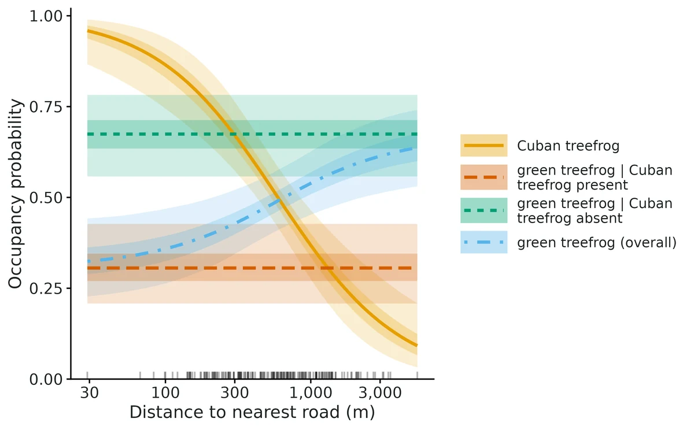
occupancy_dist_road_m. Occupancy along Distance to nearest road (m) (log-scaled axis, as the covariate enters the model as a log) (other covariates held at Canopy cover (%) = 47.1 (mean)): Cuban treefrog, green treefrog overall (averaged over Cuban treefrog presence), and green treefrog with Cuban treefrog present / absent. Bands = 95% credible intervals; inner band / thick line = 50%; rug = observed sites. Curves that are flat do not depend on this covariate in the fitted model.
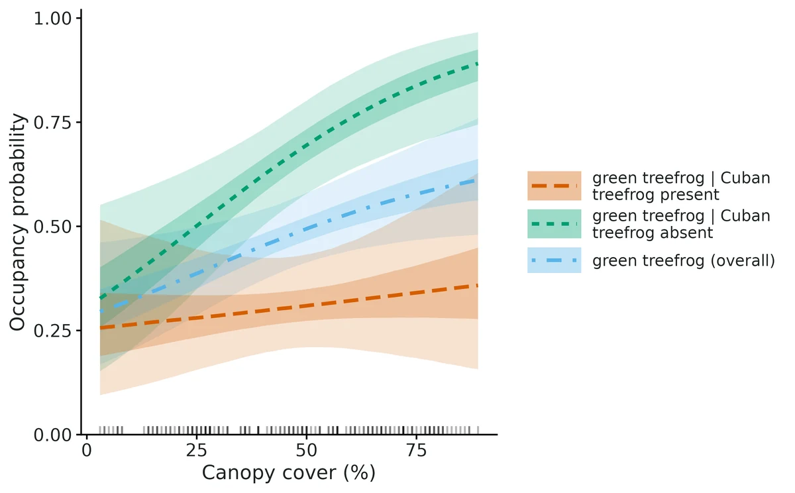
occupancy_canopy_pct. Occupancy along Canopy cover (%) (other covariates held at Distance to nearest road (m) = 546 (geometric mean)): green treefrog overall (averaged over Cuban treefrog presence), and green treefrog with Cuban treefrog present / absent. Bands = 95% credible intervals; inner band / thick line = 50%; rug = observed sites. Curves that are flat do not depend on this covariate in the fitted model.
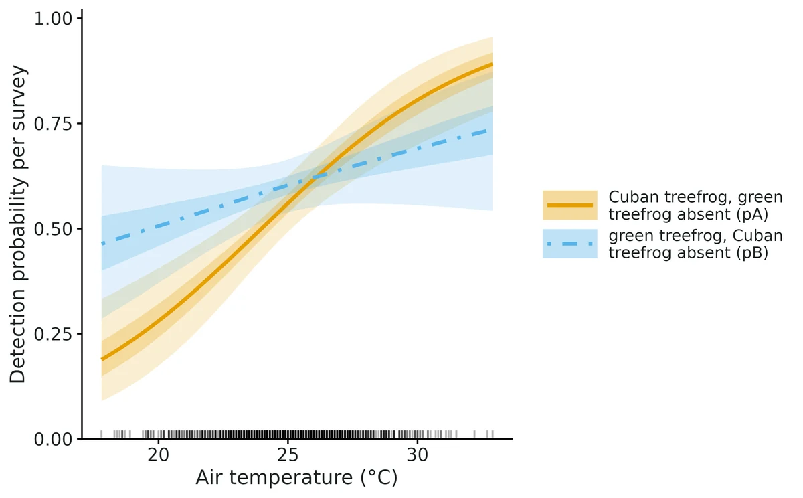
detection_air_temp_c. Per-survey detection probability along Air temperature (°C) (no other covariates in these formulas); bands = 95% credible intervals; inner band / thick line = 50%; rug = surveys done. Only detection parameters whose formula includes this covariate are drawn.
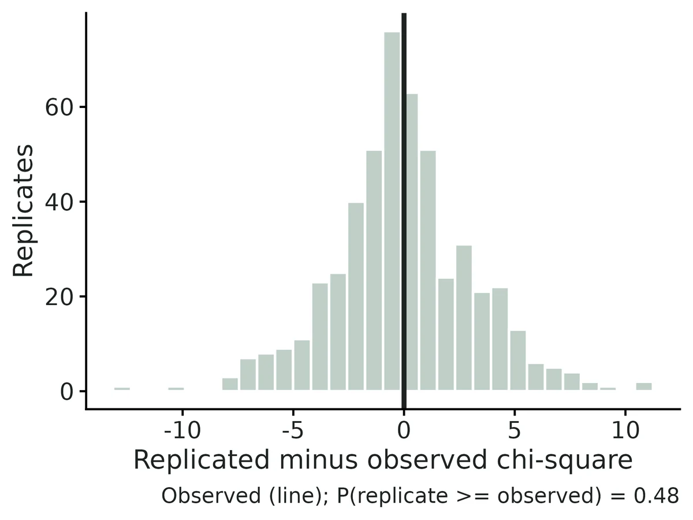
gof. Posterior Predictive Check of the number of sites in each co-detection class (neither, Cuban treefrog only, green treefrog only, both detected). Values right of the line mean replicated data fit worse than the observed data; p = 0.48 (extreme values near 0 or 1 indicate lack of fit).
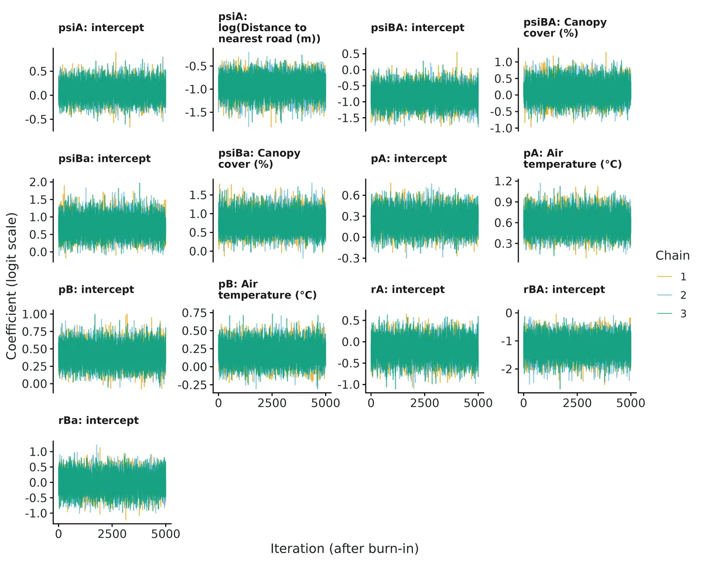
trace. MCMC traces of all coefficients on the logit scale (slopes per 1 SD of the covariate), one colour per chain; well-mixed chains overlap with no trend.
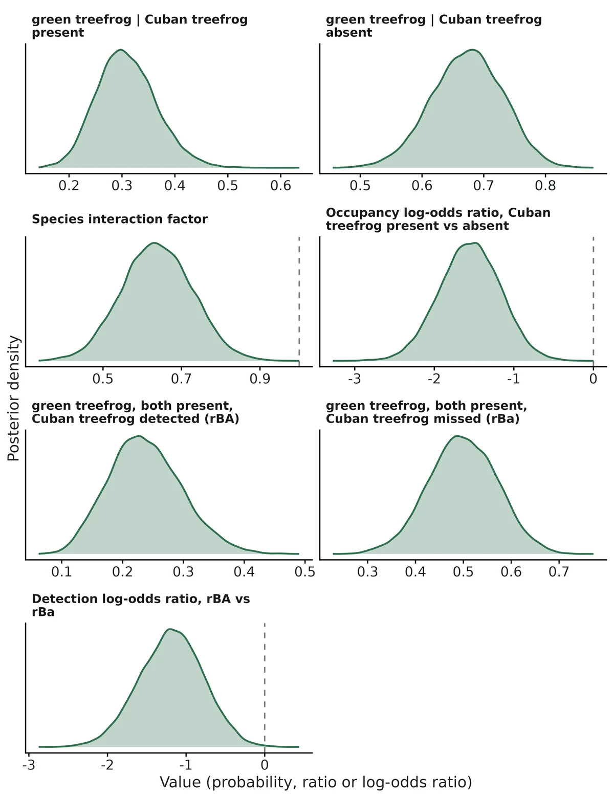
posterior. Posterior densities of the interaction quantities at average covariate values (all chains pooled). Dashed lines = no interaction (SIF = 1, log-odds ratio = 0).
Limits that matter at this design
Power for the detection interaction is modest: 0.61 for a log-odds ratio of -1.05 at 180 sites x 5 visits.
Canopy effects on green treefrog occupancy have low power (0.39 and 0.53); the psiBa slope magnitude is uncertain by about +-15% (VALIDATION.md sections 1, 8). In this data set the psiBA canopy slope was estimated at 0.13 vs true 0.60 (interval covers truth).
The dominant/subordinate direction is assumed (Cuban treefrog dominant); the model does not test it.
Co-occurrence is not interaction: shared unmeasured habitat drivers produce psiBA < psiBa (Blanchet et al. 2020).
A detection interaction (rBA < rBa) can come from shared survey conditions affecting both species, not only behaviour.
Small-sample bias toward 'no interaction' (psiBA, P(both), SIF) is documented at 60 sites; at this design (180 x 5) all were within +-2.5%.
Not validated: detection < 0.3, factor covariates, covariates on rBA/rBa (none used here).
truth realised
Item
Value
sites_cuban_present
93
sites_green_present
88
sites_both_present
29
recovery meta
Item
Value
nsim
200
converged
200
failed
0
median_seconds_per_fit
36
coverage_bound
0.904
passed
18/18
note
module simulate() uses one shared standardised habitat covariate for all three occupancy probabilities; intercepts and slopes equal the example truth
S1.7 occu-spatial: Fisher occupancy, canopy cover and elevation with residual spatial clustering (simulated camera-trap survey, 160 stations)
DONEDONE for the estimands that answer the question (covariate effects, occupancy, detection, mean occupancy, proportion occupied): all pass planted truth at this design (100/100 converged), the real fit converged and passed the PPC; spatial variance and range fail recovery on bias and are reported descriptively only, not interpreted.
Question
Is fisher occupancy associated with canopy cover and elevation, allowing for missed detections and for residual spatial clustering, and where in the 30 x 30 km block are fishers likely to occur?
What the researcher typed
I have fisher camera-trap data from 160 stations in the western Cascades, summer 2024, up to 6 weekly occasions per camera (some cameras died early). fisher_detections.csv has one row per station-week (station, week, start date, days the camera worked, detected 1/0). camera_stations.csv has UTM coordinates, canopy cover (%), elevation (m) and ownership. prediction_grid_1km.csv is a 1-km grid with the same covariates. Is fisher occupancy related to canopy cover and elevation? Please account for fishers we missed and for spatial clustering, and make a map of predicted occupancy. I need results and figures for a paper.
simulated (dev/occu-spatial/make_example.R, set.seed(20251)); slopes are logit change per 1 SD; occupancy_prob/detection_prob at mean covariates with spatial effect 0; prop_sites_occupied is realised (82/160)
Planted-truth recovery at this design
param
truth
mean_est
rel_bias
coverage
power
pass
occupancy_prob
0.426
0.4478
0.0512
0.93
–
PASS
psi_beta_canopy_cover_pct
0.9
0.9738
0.082
0.99
0.97
PASS
psi_beta_elevation_m
-0.4
-0.4458
-0.1146
0.95
0.33
PASS
detection_prob
0.285
0.2814
-0.0127
0.96
–
PASS
p_beta_days_active
0.38
0.3802
0.0005
0.9
0.91
PASS
mean_occupancy
0.4453
0.4611
0.0361
0.95
–
PASS
prop_sites_occupied
0.4516
0.4606
0.0203
0.97
–
PASS
spatial_variance
1
1.481
0.4812
1
–
FAIL
effective_range_km
8
9.705
0.2131
1
–
FAIL
Estimates from the example data
param
estimate
lower
upper
truth
occupancy_prob
0.5008
0.356
0.655
0.4256
psi_beta_canopy_cover_pct
1.01
0.5014
1.66
0.9002
psi_beta_elevation_m
-0.5508
-1.139
-0.0285
-0.4
detection_prob
0.3004
0.2494
0.3533
0.285
p_beta_days_active
0.3969
0.118
0.745
0.38
mean_occupancy
0.5087
0.4294
0.592
0.4833
prop_sites_occupied
0.508
0.4625
0.5658
0.5125
spatial_variance
0.9544
0.1739
3.889
1
spatial_decay_per_km
0.4423
0.1051
0.6944
–
effective_range_km
8.779
4.32
28.55
8
Convergence and goodness of fit
Item
Value
converged
yes
max_rhat
1.006
min_ess_bulk
672
max_rhat_covariate_effects
1.002
min_ess_covariate_effects
2190
runtime_s
283
gof
test = Freeman-Tukey posterior predictive check, site-level detection counts; bayesian_p = 0.55; verdict = no evidence of lack of fit
prior_check
spatial variance 95% CrI 0.17-3.89 vs prior-only 0.18-4.13: prior-dominated; range posterior overlaps its prior
Interpretation from the report
Occupancy probability at average covariate values and zero spatial effect is 0.50 (95% CrI 0.36 to 0.65).
Averaged over the 160 surveyed sites, mean occupancy probability is 0.51 (95% CrI 0.43 to 0.59), and the estimated proportion of surveyed sites that are occupied is 0.51 (95% CrI 0.46 to 0.57), compared with 0.44 of sites where the species was detected at least once (the difference is the correction for missed detections).
Occupancy and Canopy cover (%): each 1-SD increase (1 SD = 12.9 in original units) multiplies the odds of occupancy by 2.75 (95% CrI 1.65 to 5.26); predicted occupancy goes from 0.28 at 1 SD below the mean to 0.73 at 1 SD above it (other covariates at their means). Per 10-unit increase the odds of occupancy are multiplied by 2.19 (95% CrI 1.48 to 3.64).
Occupancy and Elevation (m): each 1-SD increase (1 SD = 246 in original units) multiplies the odds of occupancy by 0.58 (95% CrI 0.32 to 0.97); predicted occupancy goes from 0.63 at 1 SD below the mean to 0.37 at 1 SD above it. Per 200-unit increase the odds of occupancy are multiplied by 0.64 (95% CrI 0.40 to 0.98).
Detection: when the species is present, a single survey detects it with probability 0.30 (95% CrI 0.25 to 0.35) (at average survey conditions).
Detection and Days camera active in the week: per 1-unit increase the odds of detection are multiplied by 1.48 (95% CrI 1.12 to 2.09). This is a detection effect (how easily the species is found), not a habitat effect.
The residual spatial variance is 0.95 (95% CrI 0.17 to 3.89) on the logit scale; its prior alone gives a 95% interval of 0.18 to 4.13, so the data add little information: these numbers mostly restate the prior and do not show whether residual clustering is strong or weak.
Model check: posterior predictive p-values (Freeman-Tukey, by site) are 0.55; no sign of lack of fit.
All effects are associations from observational data, not causal effects.
Figures
effect_canopy_cover_pct. Occupancy probability vs Canopy cover (%) (posterior mean, 95% and 50% credible bands), other covariates at their means and spatial effect at zero; rug = surveyed sites.effect_elevation_m. Occupancy probability vs Elevation (m) (posterior mean, 95% and 50% credible bands), other covariates at their means and spatial effect at zero; rug = surveyed sites.detection_days_active. Per-survey detection probability vs Days camera active in the week (posterior mean, 95% and 50% credible bands), other detection covariates at their means; rug = surveys.coefficients. Occupancy (circles) and detection (triangles) coefficients on the logit scale (per 1 SD of the covariate): posterior means with 95% (thin) and 50% (thick) credible intervals; dashed line = no association.
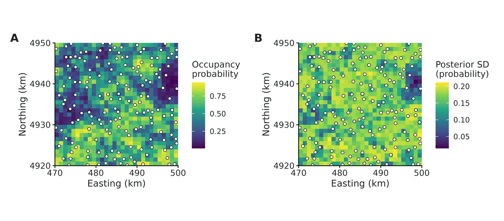
occupancy_map. Predicted occupancy probability (posterior mean, A) and its uncertainty (posterior SD, B) on the prediction grid; points = surveyed sites.
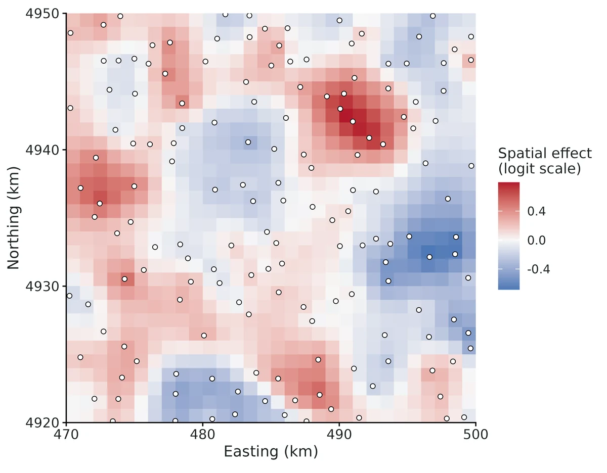
spatial_effect_map. Posterior mean of the spatial random effect (logit scale) interpolated to the prediction grid: red = more occupied than the covariates predict, blue = less, white = as predicted; points = surveyed sites.
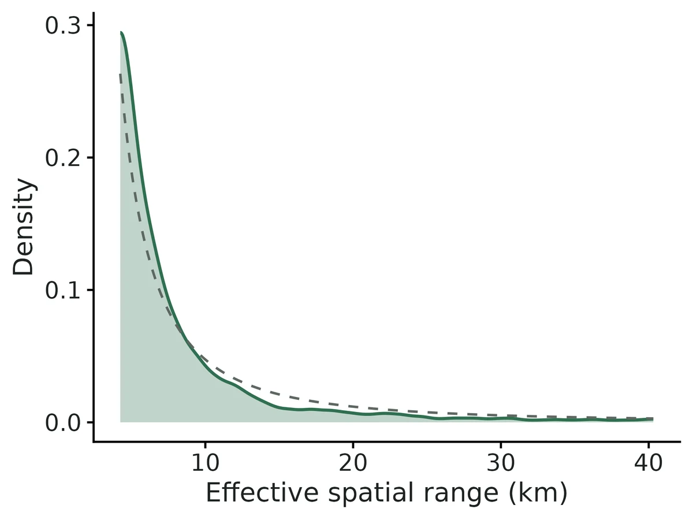
range. Posterior of the effective spatial range (distance at which residual correlation falls to 0.05; filled) and the exact prior density implied by the uniform prior on phi (dashed), both on the prior's support. Overlap with the prior shows how little the data say about the range.
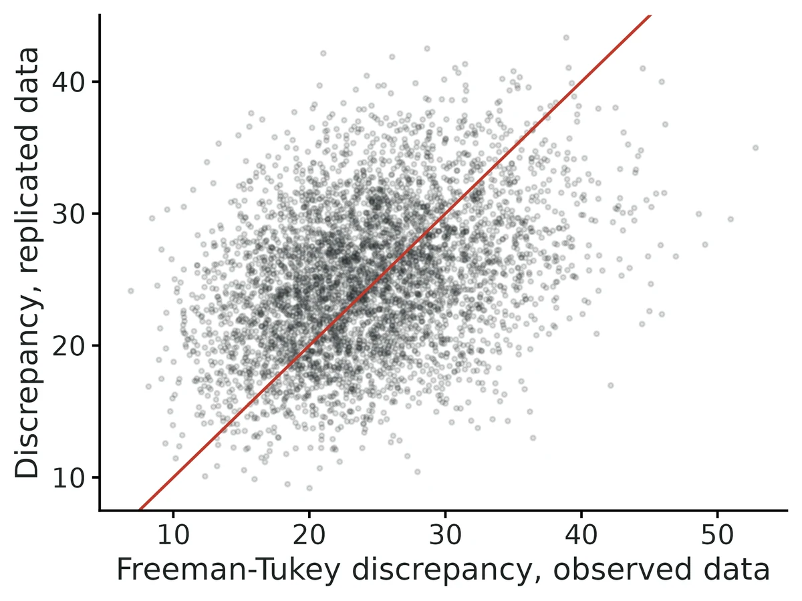
gof. Posterior predictive check: Freeman-Tukey discrepancy of replicated vs observed site-level detection counts, one point per posterior draw; diagonal line = 1:1. Points spread evenly around the line (Bayesian p near 0.5) indicate adequate fit (Bayesian p = 0.55).
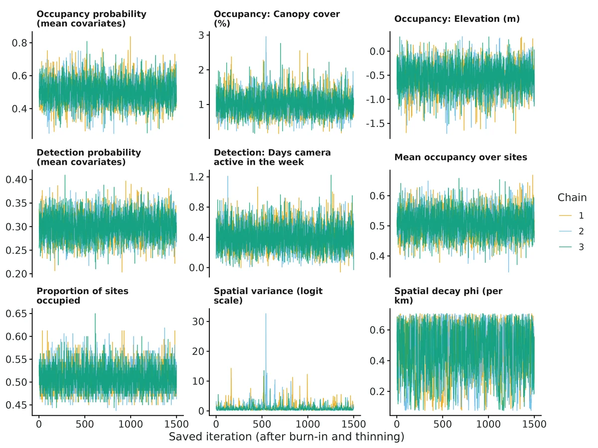
trace. MCMC traces per chain (post burn-in, thinned) for the main estimands; well-mixed chains overlap with no trend.
Limits that matter at this design
Spatial variance and effective range are not recoverable at this design (+48% and +21% bias in planted truth) and their posteriors restate the priors; read the spatial maps as residual smoothing, not a measured clustering scale.
Occupancy slopes lean away from zero at modest sample sizes (+8% canopy, +11.5% elevation in planted truth; 10-28% at 100-120 sites in VALIDATION.md; ~10% inflation if no real clustering). Trust direction; report the non-spatial PGOcc fit alongside (canopy 0.87 vs 1.01 per SD).
Low power for the elevation effect: an effect of -0.40 per SD was detected in only 33% of replicates; the real-data interval only just excludes zero.
Spatial confounding: smooth covariates such as elevation (15-km range) can have part of their effect absorbed by the spatial term (VALIDATION.md: -20% for a 90%-spatial covariate).
Recovery simulator differs from the example generator: independent covariates, missing weeks at random rather than camera failures, standard-normal days_active.
Closure over the season, no false positives and no unmodelled detection heterogeneity are assumed; stations 1 km apart may share individuals, so occupancy is better read as use.
Core gate caveat: the '>= 90% converged' clause cannot fail for non-convergence; convergence (100/100) was counted by hand.
recovery settings
Item
Value
nsim
100
converged
100
failed
0
seconds_per_fit_median
77
config
modules/occu-spatial/example/recovery.yaml
note
power = share of reps whose 95% CrI excluded 0 (computed from the reps file); spatial_variance and effective_range_km fail bias and are descriptive only; elevation bias exceeds 10% but is within 3 MC SE
S1.8 abund-interactions: Abundance-mediated species interactions: pine marten abundance and red squirrel occupancy (simulated camera-trap example)
OPENPlanted truth at the example design (260 sites) fails for gamma0 (psi_beta_dominant_abundance): relative bias -11.0% (limit 10%; 3.2 MCSE) with coverage 0.95. Known limit 1 in VALIDATION.md. Convergence, GOF, cross-checks, negative control and reproducibility pass. Read the gamma0 interval, not its point estimate.
Question
Is red squirrel occupancy lower at sites used by more pine martens, and does that association depend on the share of native broadleaf woodland?
What the researcher typed
I have camera-trap data from 260 woodland sites in Northern Ireland: deployments.csv (camera start and end dates), records.csv (every photo, with species) and sites.csv (woodland cover and broadleaf share within 1 km). Is red squirrel occupancy lower where there are more pine martens, and does that depend on how much of the woodland is native broadleaf? Please give me a report with figures I can use in a paper.
Study design
Item
Value
n_sites
260
n_occasions
4
days_per_occasion
7
camera_days_total
6939
prop_site_occasions_effort_loss
0.089
prop_site_occasions_no_effort
0.03
habitat_interaction
yes
interaction_modifier
broadleaf_pct
lambda_formula
~ woodland_pct
psi_formula
~ woodland_pct + broadleaf_pct
data_simulated
yes
data_seed
2024
nsim_recovery
100
True values used to simulate the example data
Item
Value
dominant_abundance
1
lambda_beta_woodland
0.5
dominant_detection_per_individual
0.08
subordinate_occupancy_no_dominant
0.6
psi_beta_woodland
0.5
psi_beta_broadleaf
0.3
psi_beta_dominant_abundance
-0.6
psi_beta_dominant_abundance_x_broadleaf
0.6
subordinate_detection
0.15
interaction_at_low_broadleaf_pct
-1.344
interaction_at_high_broadleaf_pct
0.164
realised_dominant_total_abundance
274
realised_dominant_prop_occupied
0.592
realised_subordinate_prop_occupied
0.504
Planted-truth recovery at this design
param
truth
mean_est
rel_bias
coverage
power
pass
dominant_detection_per_individual
0.08
0.0814
0.0173
0.97
–
PASS
dominant_mean_abundance
1
0.9862
-0.0138
0.96
–
PASS
dominant_prop_occupied
0.63
0.6287
-0.0021
0.92
–
PASS
dominant_total_abundance
293.6
292.8
-0.0028
0.98
–
PASS
lambda_beta_woodland
0.5
0.5075
0.0151
0.94
1
PASS
psi_beta_broadleaf
0.3
0.3654
0.2181
0.95
0.34
PASS
psi_beta_dominant_abundance
-0.6
-0.6659
-0.1098
0.95
0.97
FAIL
psi_beta_dominant_abundance_x_broadleaf
0.6
0.6547
0.0912
0.96
0.92
PASS
psi_beta_woodland
0.5
0.551
0.1021
0.92
0.86
PASS
subordinate_detection
0.15
0.1503
0.0018
0.95
–
PASS
subordinate_occupancy_no_dominant
0.6
0.6096
0.016
0.92
–
PASS
subordinate_prop_occupied
0.4635
0.4646
0.0024
1
–
PASS
Estimates from the example data
param
estimate
lower
upper
dominant_mean_abundance
0.853
0.698
1.032
lambda_beta_woodland_pct
0.5314
0.386
0.6725
dominant_detection_per_individual
0.0843
0.0709
0.0975
subordinate_occupancy_no_dominant
0.6244
0.5273
0.7208
psi_beta_woodland_pct
0.4875
0.1631
0.8294
psi_beta_broadleaf_pct
0.0222
-0.3665
0.3955
psi_beta_dominant_abundance
-0.5301
-0.933
-0.1665
psi_beta_dominant_abundance_x_broadleaf_pct
0.6902
0.3049
1.136
subordinate_detection
0.1522
0.1404
0.1646
interaction_at_low_broadleaf_pct
-1.386
-2.159
-0.7024
interaction_at_high_broadleaf_pct
0.3488
-0.1687
0.9295
dominant_total_abundance
256.2
224
298
dominant_prop_occupied
0.5822
0.5577
0.6115
subordinate_prop_occupied
0.513
0.5
0.5269
Convergence and goodness of fit
Item
Value
converged
yes
max_rhat
1.001
min_ess_bulk
3279
chains
3
niter
20000
nburnin
5000
thin
5
ppc_p_dominant
0.51
ppc_p_subordinate
0.32
gof_statistic
Freeman-Tukey on site detection totals
recovery_replicates_converged
100/100
Interpretation from the report
Each 1-SD increase in woodland_pct (1 SD = 17.4 units) is associated with 1.70 (95% CI 1.47 to 1.96) times the expected Pine marten abundance (a +70% change) (per 10 units: rate ratio 1.36 (95% CI 1.25 to 1.47)).
Interaction at average habitat: each additional Pine marten individual at a site is associated with 0.59 (95% CI 0.39 to 0.85) times the odds that Red squirrel occupies the site (odds ratio per individual); on the logit scale the coefficient is -0.53 (95% CI -0.93 to -0.17) per individual. The posterior probability that the association is negative is > 0.99.
Predicted Red squirrel occupancy at average habitat: 0.62 (0.52-0.72) at a site with no Pine marten, 0.50 (0.42-0.57) with 1, 0.37 (0.25-0.49) with 2 and 0.26 (0.12-0.44) with 3 individuals (posterior medians, 95% CI).
Habitat dependence: the interaction changes by 0.69 (95% CI 0.30 to 1.14) logit units per individual for each 1-SD (20.8 units) increase in broadleaf_pct; the 95% interval excludes zero, so the data support an interaction whose strength depends on habitat.
Where broadleaf_pct = 12.9 (10th percentile): odds ratio per Pine marten individual 0.25 (95% CI 0.12 to 0.50) (negative).
Where broadleaf_pct = 65.2 (90th percentile): odds ratio per Pine marten individual 1.42 (95% CI 0.84 to 2.53) (not clearly different from zero).
Comparison with the common two-step shortcut (estimate Pine marten abundance first, then use it as a fixed covariate): the shortcut gives -0.48 (95% CI -0.81 to -0.15), with an interval 86% as wide as the joint model's. The joint model carries the uncertainty in each site's abundance into the interaction; the shortcut treats estimated abundance as if it were known, and in simulations it is biased towards zero with too-narrow intervals.
Caution: this is an association between the dominant's estimated abundance and the subordinate's occupancy, not proof of predation or competition. Unmodelled habitat preferences shared (or opposed) by the two species produce the same signal, so include the main habitat drivers of both species. Royle-Nichols abundance assumes individuals are detected independently and abundance is Poisson among sites; absolute abundance is less reliable than relative differences. Simulation checks for this module (VALIDATION.md) recovered the interaction without bias at 600 sites (4 weekly occasions of daily records), including when the dominant's per-individual daily detection was as low as 0.03; in an independent check with 700 sites and a weaker interaction its size was overstated by about 12%, and with 150-300 sites by roughly 10-20% (credible intervals kept near-nominal coverage). With fewer than about 1000 sites, read the interval rather than the point estimate.
Figures
interaction_by_habitat. Red squirrel occupancy against Pine marten abundance at the 10th, 50th and 90th percentiles of Broadleaf share (%) (posterior median, 95% and 50% credible bands). Different slopes across panels mean the association between the species depends on habitat.subordinate_vs_dominant. Predicted probability that Red squirrel occupies a site against the number of Pine marten individuals using it (posterior median, 95% and 50% credible bands; full posterior uncertainty of all coefficients), other covariates at their means and habitat at its average. Rug: posterior mean Pine marten abundance at each surveyed site.interaction_strength_broadleaf_pct. Strength of the abundance-mediated interaction across Broadleaf share (%) (logit scale; below the dashed line = fewer Red squirrel where there are more Pine marten). Band: 95% credible interval; rug: surveyed sites.dominant_abundance_woodland_pct. Expected number of Pine marten individuals using a site against Woodland cover within 1 km (%) (posterior median with 95% and 50% credible bands), other covariates at their means. Rug: surveyed sites.
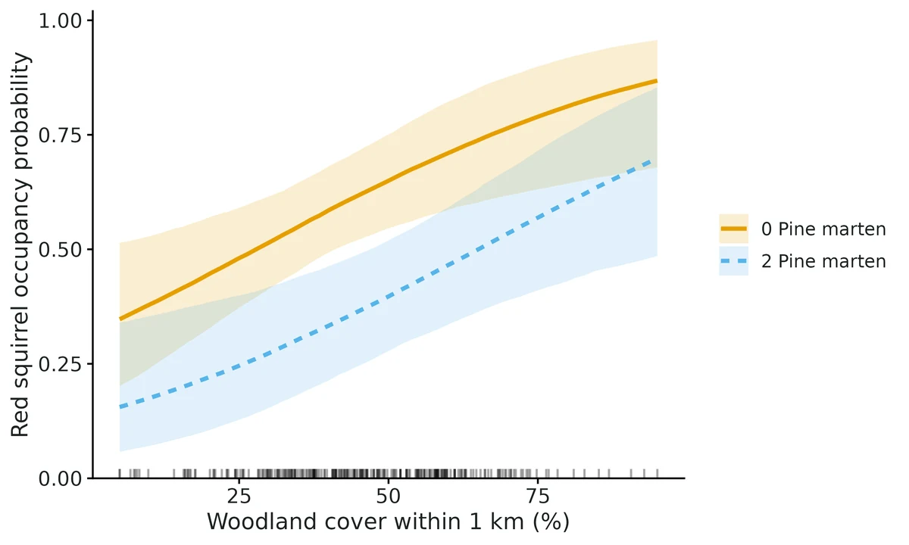
subordinate_occupancy_woodland_pct. Red squirrel occupancy against Woodland cover within 1 km (%) at sites with no Pine marten and with 2 (90th percentile of estimated site abundance); 95% credible bands; other covariates at their means.
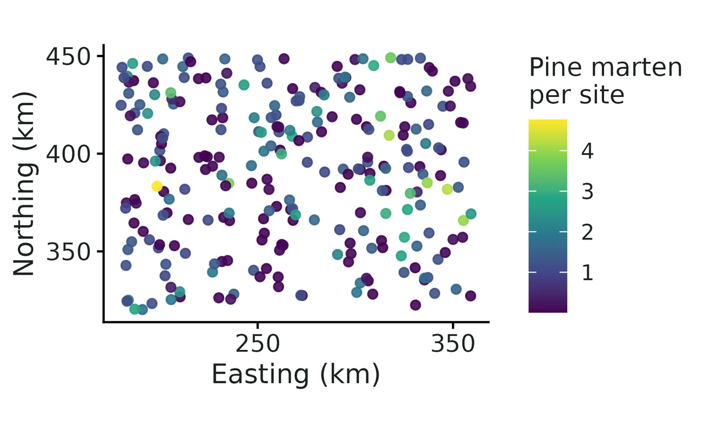
dominant_abundance_map. Posterior mean number of Pine marten individuals using each surveyed site (colour, viridis scale). Coordinates are the projected site coordinates divided by 1000 (assumed metres, shown as km).
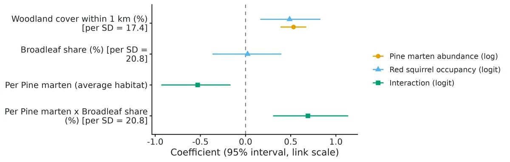
coefficients. Regression coefficients on the link scale (log for abundance, logit for occupancy and detection) with 95% credible intervals; dashed line = no effect. Continuous covariates were standardised, so each slope is the change per 1 SD of that covariate (SD in original units in square brackets); factor levels are contrasts with the reference level. Interaction terms: change in Red squirrel log-odds of occupancy per Pine marten individual.
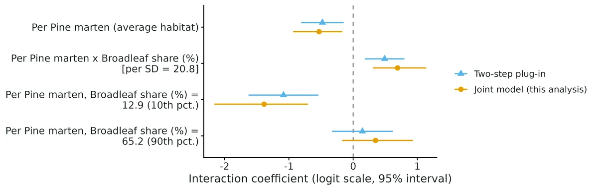
joint_vs_twostep. Interaction estimates from the joint model and from the two-step shortcut that plugs in estimated Pine marten abundance as if known (points: estimates; bars: 95% intervals). The joint model propagates abundance uncertainty. Rows at the 10th and 90th percentiles give the slope at those habitat values; the 'x' row is the change in slope per 1 SD of the habitat variable. Interaction slopes are per Pine marten individual on the logit scale of Red squirrel occupancy.
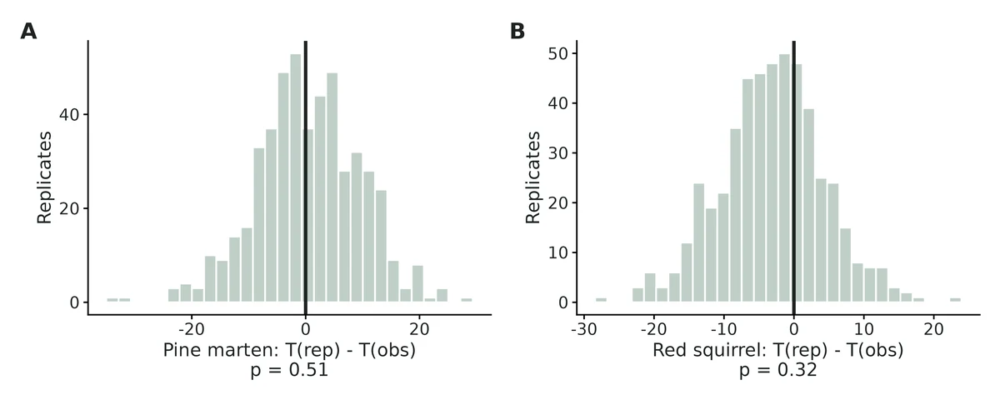
gof. Posterior predictive check: distribution of the Freeman-Tukey discrepancy of replicated minus observed site detection totals; values centred on 0 (line) indicate adequate fit.
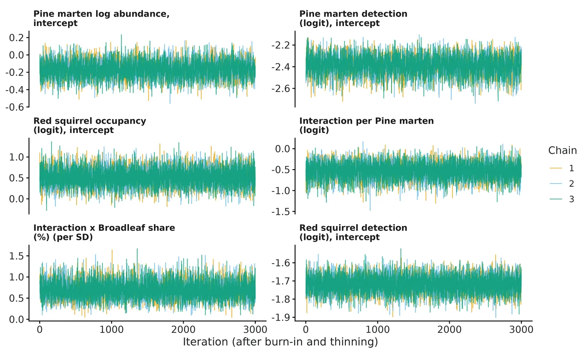
trace. MCMC traces for the intercepts and interaction coefficients (link scale; one colour per chain). Well-mixed chains overlap with no trend.
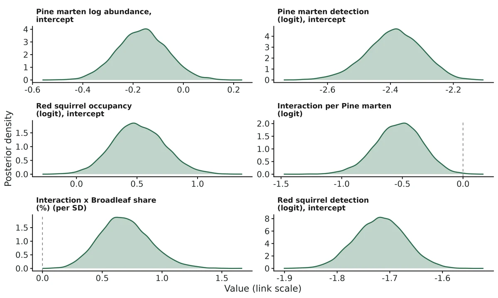
posterior. Posterior densities (all chains pooled) of the intercepts and interaction coefficients on the link scale; dashed line = 0 (no interaction), drawn on the interaction panels only.
Limits that matter at this design
260 sites is below the ~600 sites validated for a habitat-dependent interaction; at this design gamma0 is overstated by ~11% (coverage stays 0.95). Read intervals, not point estimates.
The broadleaf main effect on red squirrel occupancy is weakly identified at this design (planted-truth power 0.34).
Association, not causation: unmodelled habitat shared by both species loads onto the interaction term.
Royle-Nichols assumptions (Poisson abundance, independent detection of individuals, closure over 4 weeks) were not stress-tested; group-living or overdispersed martens would bias abundance and the interaction. The posterior predictive check is the only guard.
Abundance is the number of martens using a camera site, not a density; one marten can use several sites.
The two-step plug-in shortcut fails the gate (attenuated, overconfident) and is shown for comparison only.
S1.9 nmixture: Hermit warbler abundance from repeated point counts (static binomial N-mixture model)
DONE
Question
How many Hermit warblers are at 120 Coast Range survey points, allowing for birds present but not counted, and is abundance associated with canopy cover and elevation?
What the researcher typed
I have Hermit warbler point counts from 120 points, each visited up to 3 times between mid-May and mid-June. The counts are in point_counts.csv (one row per visit, with wind, day of year and observer). The habitat for each point is in points.csv (canopy cover and elevation). Please estimate how many warblers there are, allowing for birds we missed, and tell me whether abundance is related to canopy cover and elevation.
Study design
Item
Value
n_sites
120
n_visits
3
visits_done
346
prop_missing
0.039
observers
3
abundance_dist
Poisson
model
static (closed) N-mixture
engine
unmarked::pcount (maximum likelihood)
True values used to simulate the example data
Item
Value
abundance_at_average_site
2.102
total_abundance
273
mean_abundance_per_site
2.275
detection_prob
0.5529
lambda_beta_canopy_cover_pct
0.4343
rate_ratio_canopy_cover_pct
1.544
lambda_beta_elevation_m
0.1763
rate_ratio_elevation_m
1.193
p_beta_wind_beaufort
-0.4963
odds_ratio_detection_wind_beaufort
0.6088
p_beta_julian_day
-0.2301
odds_ratio_detection_julian_day
0.7945
p_beta_observerMLR
0
odds_ratio_detection_observerMLR
1
p_beta_observerSAT
-0.4
odds_ratio_detection_observerSAT
0.6703
Planted-truth recovery at this design
param
truth
mean_est
rel_bias
coverage
power
pass
abundance_at_average_site
2.102
2.119
0.007898
0.95
–
PASS
detection_prob
0.553
0.5491
-0.007021
0.96
–
PASS
lambda_beta_forest
0.434
0.4325
-0.003379
0.965
1
PASS
mean_abundance_per_site
2.306
2.349
0.01872
0.985
–
PASS
odds_ratio_detection_wind
0.609
0.6085
-0.0008157
0.97
–
PASS
p_beta_wind
-0.496
-0.5012
-0.0104
0.97
1
PASS
rate_ratio_forest
1.543
1.544
0.0005739
0.965
1
PASS
total_abundance
276.7
281.9
0.01872
0.985
–
PASS
Estimates from the example data
param
estimate
lower
upper
truth
abundance_at_average_site
2.005
1.686
2.384
2.102
detection_prob
0.5146
0.4146
0.6133
0.5529
lambda_beta_canopy_cover_pct
0.4633
0.3174
0.6092
0.4343
rate_ratio_canopy_cover_pct
1.589
1.373
1.839
1.544
lambda_beta_elevation_m
0.1779
0.04825
0.3075
0.1763
rate_ratio_elevation_m
1.195
1.049
1.36
1.193
p_beta_wind_beaufort
-0.7101
-0.9055
-0.5147
-0.4963
odds_ratio_detection_wind_beaufort
0.4916
0.4043
0.5977
0.6088
p_beta_julian_day
-0.1841
-0.3396
-0.02858
-0.2301
odds_ratio_detection_julian_day
0.8319
0.7121
0.9718
0.7945
p_beta_observerMLR
0.4515
0.02733
0.8757
0
odds_ratio_detection_observerMLR
1.571
1.028
2.401
1
p_beta_observerSAT
-0.2856
-0.7148
0.1436
-0.4
odds_ratio_detection_observerSAT
0.7516
0.4893
1.154
0.6703
total_abundance
271.7
244
308
273
mean_abundance_per_site
2.264
2.033
2.567
2.275
Convergence and goodness of fit
Item
Value
converged
yes
engine
maximum likelihood; optimiser converged, all SEs finite, no boundary estimates (no R-hat/ESS)
At a site with average covariate values the model expects 2.00 (95% CI 1.69 to 2.38) Hermit warblers.
Summed over the 120 surveyed sites, estimated abundance is 272 (95% CI 244 to 308) (an average of 2.26 (95% CI 2.03 to 2.57) per site).
The sum of the largest count at each site was 217, so the model infers that about 20% of the animals present were missed even on the visit with the highest count.
Each increase of 1 SD (19.74 units) in Canopy cover is associated with expected abundance being multiplied by 1.59 (95% CI 1.37 to 1.84), i.e. +59% (95% CI +37% to +84%).
Across the observed range (16.00 to 98.00) expected abundance per site goes from 0.71 to 4.90, other covariates held at their mean.
Each increase of 1 SD (293.79 units) in Elevation is associated with expected abundance being multiplied by 1.19 (95% CI 1.05 to 1.36), i.e. +19% (95% CI +5% to +36%).
Detection: on a visit with average covariate values (Observer 'JDK') each animal present had a 0.51 (95% CI 0.41 to 0.61) probability of being counted; over 3 such visits the probability of counting an animal at least once is 0.89 (0.80 to 0.94).
Each increase of 1 SD (1.10 units) in Wind multiplies the odds of detecting an animal by 0.49 (95% CI 0.40 to 0.60).
Model fit: no significant lack of fit at the 5% level, but the p-value is borderline (c-hat 1.17, smaller of the chi-square and Freeman-Tukey p-values = 0.06).
Relative differences among sites and covariate effects (rate ratios) are more robust than the absolute totals. All covariate relationships are associations, not demonstrated causes.
Figures
abundance_canopy_cover_pct. Expected abundance per site versus Canopy cover (line: estimate; outer and inner bands: 95% and 50% confidence intervals; other covariates at their mean or reference level; rug: observed values).abundance_elevation_m. Expected abundance per site versus Elevation (line: estimate; outer and inner bands: 95% and 50% confidence intervals; other covariates at their mean or reference level; rug: observed values).detection_wind_beaufort. Detection probability per visit versus Wind (line: estimate; outer and inner bands: 95% and 50% confidence intervals; other covariates at their mean or reference level; rug: observed values, jittered slightly). This is a detection effect: it changes how many animals are counted, not how many are there.detection_julian_day. Detection probability per visit versus Day of year (line: estimate; outer and inner bands: 95% and 50% confidence intervals; other covariates at their mean or reference level; rug: observed values, jittered slightly). This is a detection effect: it changes how many animals are counted, not how many are there.
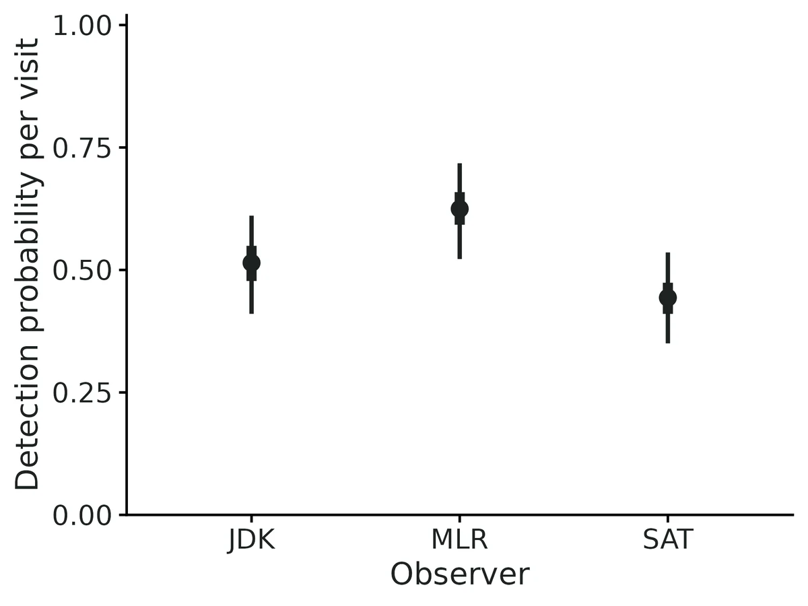
detection_observer. Detection probability per visit versus Observer (point: estimate; thin and thick bars: 95% and 50% confidence intervals; other covariates at their mean or reference level). This is a detection effect: it changes how many animals are counted, not how many are there.
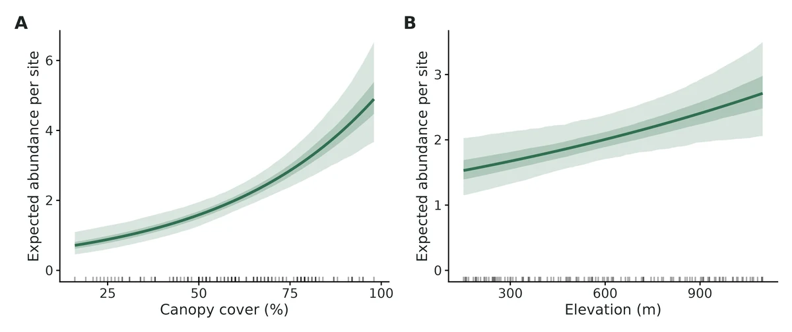
abundance_effects. All covariate effects on expected abundance per site (panels A, B; same conventions as the single-effect figures: 95% and 50% confidence intervals, other covariates at their mean or reference level).
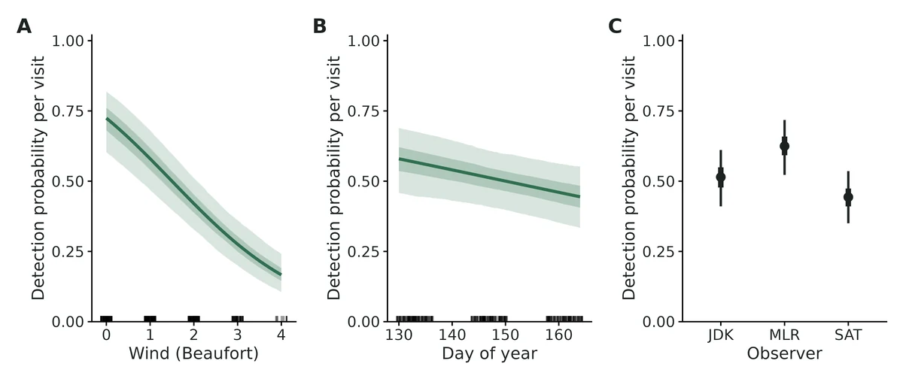
detection_effects. All covariate effects on detection probability per visit (panels A, B, C; same conventions as the single-effect figures: 95% and 50% confidence intervals, other covariates at their mean or reference level).
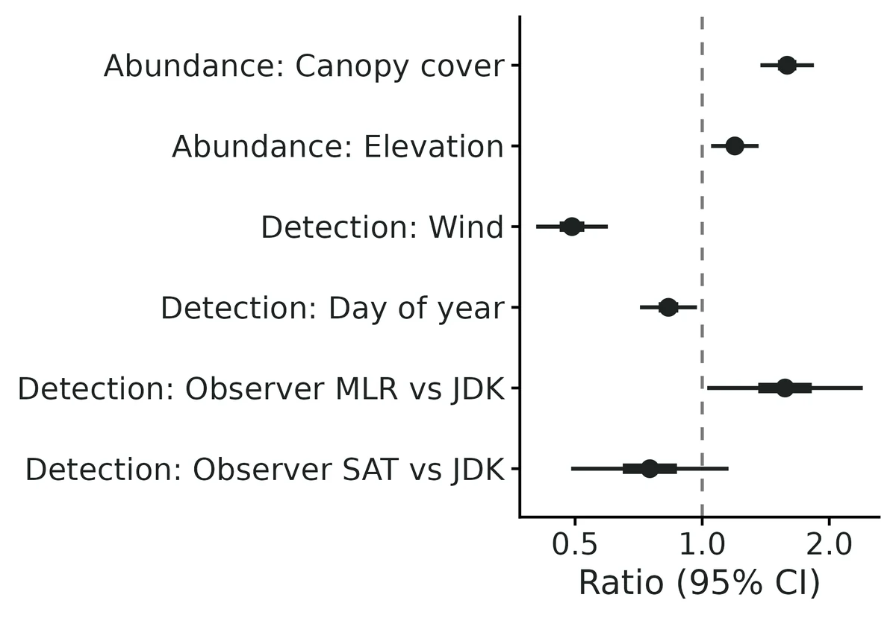
coefficients. Rate ratios (abundance, recruitment) and odds ratios (detection, survival) per 1 SD of each numeric covariate, or relative to the reference level of a categorical covariate (points: estimates; thin and thick bars: 95% and 50% confidence intervals, Wald intervals on the log scale); log scale; dashed line = no effect (1).
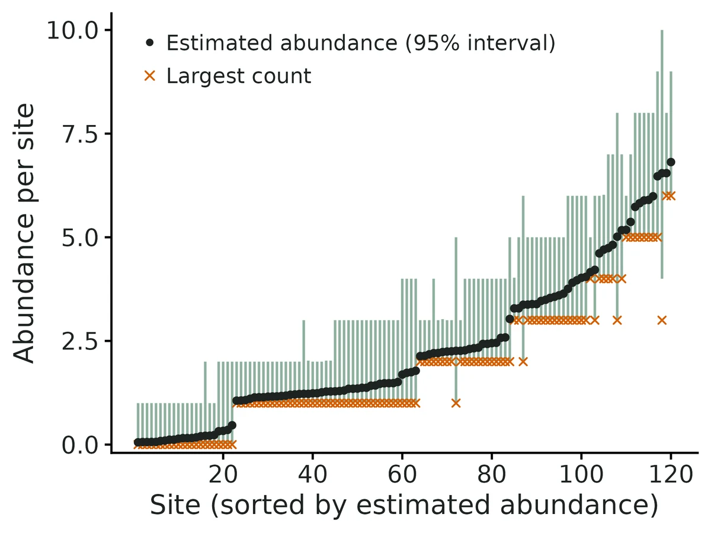
abundance_by_site. Estimated abundance of Hermit warblers at each surveyed site (points; bars: 95% confidence intervals including parameter uncertainty; the per-site interval level is fixed at fit time) and the largest count made there (crosses). The gap between them is what the model attributes to imperfect detection.
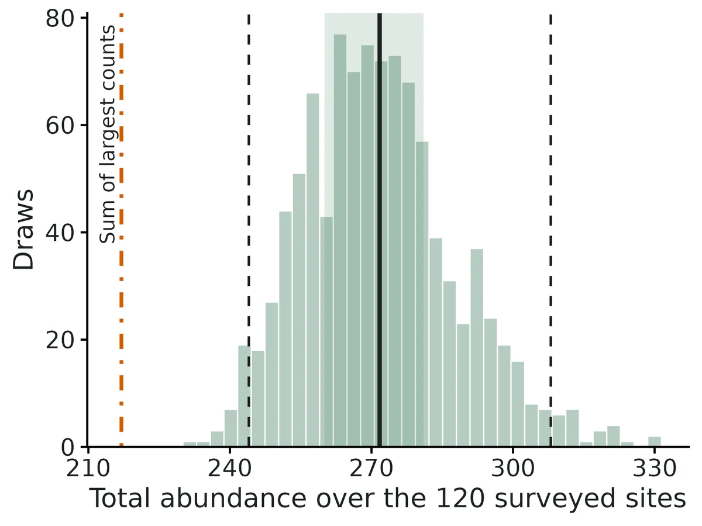
total_abundance. Distribution of total abundance of Hermit warblers across the surveyed sites (draws from the sampling distribution of the parameters combined with the conditional distribution of each site's N). Solid line: estimate; dashed lines: 95% interval; shaded: 50% interval. Dot-dash line: sum of the largest count at each site (217), a minimum count.
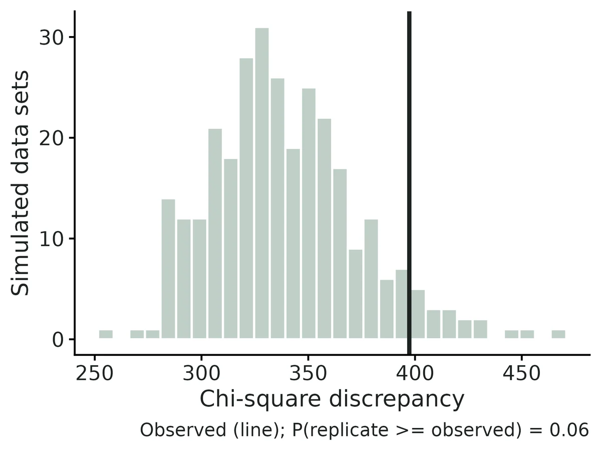
gof. Goodness of fit, parametric bootstrap: histogram of the chi-square statistic for data simulated from the fitted model; vertical line: observed data (c-hat 1.17, p = 0.06). Small p (< 0.05) means the counts vary more than the model allows.
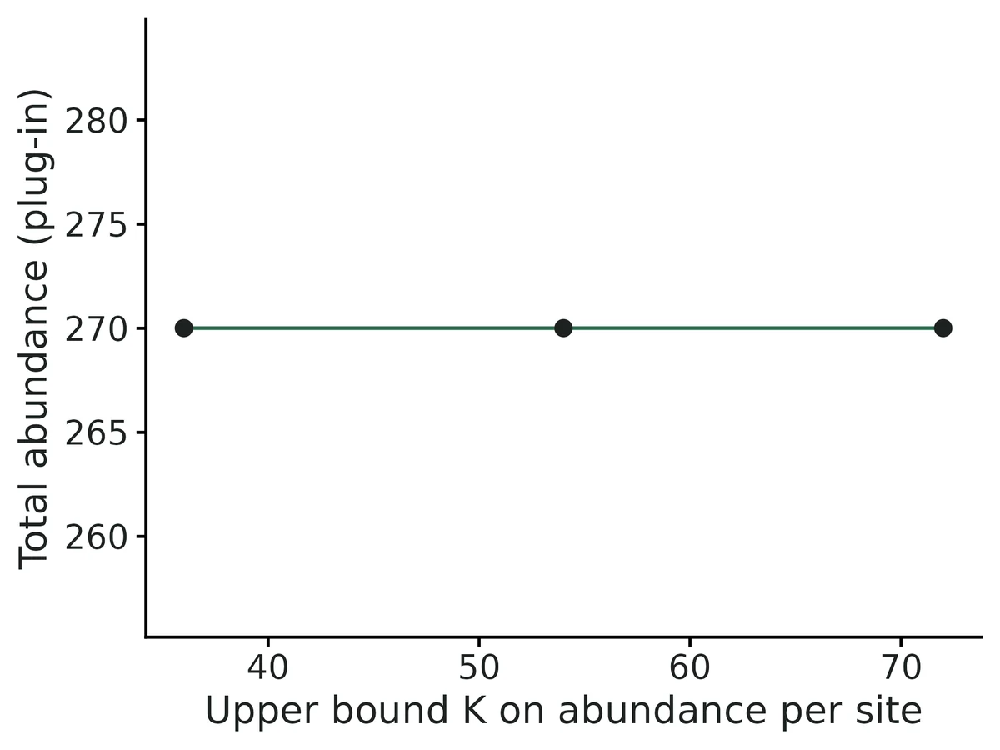
K_sensitivity. Sensitivity of estimated total abundance to the upper bound K used to sum over possible abundances (Dennis et al. 2015); the model is refitted at each K and total abundance is the sum of each site's expected N given its counts at the point estimates (a plug-in value, so it can differ slightly from the reported total, which also averages over parameter uncertainty). The y axis spans +/- 5% of the estimate; a flat line means K is large enough.
Limits that matter at this design
Absolute N assumes closure, no double counting and independent detection; double counting and closure violations were not validated and GOF rarely detects them (VALIDATION.md limit 4).
Unmodelled detection heterogeneity biases N downward with overconfident intervals; strong site-level heterogeneity is flagged by GOF 95% of the time, individual-level heterogeneity was not tested. GOF p = 0.06 here is borderline (limit 2).
Overdispersed abundance fitted as Poisson biases N by about -20%; here AIC favoured Poisson and NB/ZIP gave the same abundance (limit 3).
Low detection (p ~0.2) with few visits biases absolute N; this design (p ~0.5, 3 visits) passed recovery (limit 1).
Recovery used fast settings and one covariate per submodel; elevation, day-of-year and observer effects were checked only against this example's known truth (limit 8).
In this one data set two detection intervals miss the truth (wind OR 0.49 [0.40, 0.60] vs 0.61; observer MLR OR 1.57 [1.03, 2.40] vs 1.00), each about 2 SE off; recovery coverage for wind was 0.97, so this is sampling chance, but single detection covariates should be read cautiously.
S1.10 distance: Mule deer density on a winter range from line-transect distance sampling, with shrub-cover and road-distance effects (simulated data)
OPENAll estimands that answer the question (density, abundance, per-unit density, detection, habitat rate ratio) pass planted truth at this design, the fit converged and both GOF checks pass; but the HDS density at an average transect (whose uncertainty also sets the bands on the conditional-effect curves and the map) under-covers (0.885 vs bound 0.904; VALIDATION.md Known limit 9, prepared fix not installed).
Question
How many mule deer are on the 360 km2 winter range (per km2 and in total, overall and in the north and south units), and is deer density higher where shrub cover is higher and farther from the highway?
What the researcher typed
I have a mule deer line-transect survey in modules/distance/example: a file of deer groups seen with the perpendicular distance from the line (m), group size, observer and date; a file of the 36 transects with their length, management unit (north or south, 180 km2 each), shrub cover and distance to the highway; and a 1 km2 grid of the whole 360 km2 winter range with the same two habitat values. Please estimate how many deer there are per km2 and in total, for each unit and overall, and tell me whether deer are more common where shrub cover is higher and farther from the road. Check that the method works for a survey like mine before you trust it, and give me a report and figures I can put in a paper.
A group within 400 m of the line had probability 0.44 (95% CI 0.38 to 0.50) of being detected. Equivalently, the effective strip half-width is 175 m.
Density: 12.0 (95% CI 9.24 to 15.5) individuals per km2, which over the 360 km2 study area is 4,314 (95% CI 3,328 to 5,593) individuals.
This is 3.59 (95% CI 2.82 to 4.58) groups per km2 times a mean group size of 3.34 (95% CI 3.12 to 3.56).
By stratum: north 7.97 (95% CI 5.68 to 11.2) per km2; south 16.0 (95% CI 11.6 to 22.0) per km2.
Each increase of 10 percentage points in shrub cover multiplies expected density by 1.89 (95% CI 1.56 to 2.30), i.e. +89%.
Each increase of 3 km in distance from road multiplies expected density by 1.40 (95% CI 1.12 to 1.74), i.e. +40%.
This is an association from an observational survey, not proof that shrub cover causes the difference.
The hierarchical model's density over the study area (12.2 (95% CI 9.70 to 15.3) per km2) agrees with the design-based estimate above.
Goodness of fit: Cramer-von Mises test of the distances, p = 0.72. No evidence of lack of fit.
Figures
density_shrub_cover_pct. Expected mule deer density versus shrub cover from the hierarchical distance-sampling model (road distance at its mean), with 95% and 50% bands; points are rough per-transect densities.detection_function. Fitted half-normal detection function (model-averaged with hazard-rate) with 95% and 50% confidence bands over the histogram of the 145 perpendicular distances within 400 m, scaled to detection probability.
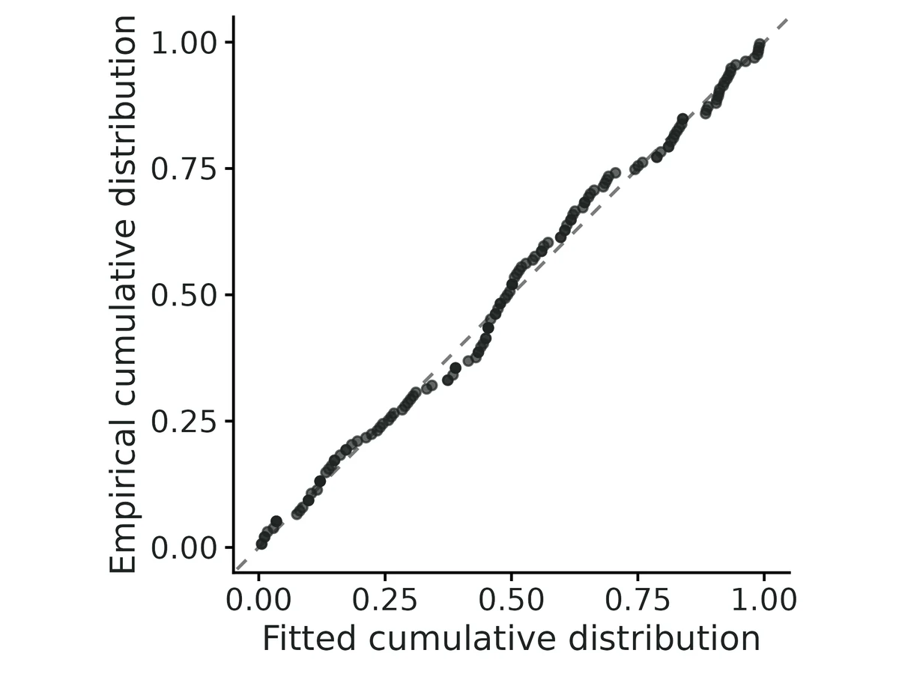
qq_gof. Q-Q plot of the detection function; points on the dashed line mean the fitted distance distribution matches the data. Cramer-von Mises W = 0.075, p = 0.72.density_road_dist_km. Expected mule deer density versus distance from the highway (shrub cover at its mean), with 95% and 50% bands; points are rough per-transect densities.effects_panel. Conditional effects of shrub cover (A) and road distance (B) on deer density.coefficients. Multiplicative change in deer density per 1 SD of each covariate (shrub cover 9.8 %, road distance 2.7 km) with 95% Wald confidence intervals; dashed line = no effect.density_by_stratum. Design-based deer density in the north unit, south unit and whole 360 km2 winter range with 95% log-normal confidence intervals.density_map. A: predicted deer density per km2 over the 1 km2 grid from the hierarchical model; white dots are the 36 transects. B: its standard deviation. Cells with shrub cover outside 13.9-45.4 % are extrapolations.
Limits that matter at this design
HDS intercept (density_at_average_site) ignores detection-key selection uncertainty: coverage 0.885 at this design (0.92 when half-normal chosen, as in this data set; 0.81 otherwise). Design-based density, abundance and slopes unaffected (Known limit 9).
Design-based density intervals are conservative when density follows habitat across transects (coverage 0.975 here; Known limit 3).
g(0) = 1, no evasive movement and accurate distances cannot be tested from these data; 75 m evasive movement biased density -27% in simulation, heaping at zero biased it upward (Known limit 4).
Recovery simulated one habitat covariate and a single detection scale; the second covariate (road) and the observer difference were checked only on the example fit.
The density map extrapolates to grid cells with shrub cover outside the surveyed 13.9-45.4 %.
recovery meta
Item
Value
nsim
200
config
modules/distance/example/recovery.yaml
median_fit_s
9.1
converged
200/200
note
density_at_average_site coverage 0.92 in the 142 replicates where a plain half-normal was AIC-best, 0.81 in the other 58 (VALIDATION.md Known limit 9).
S1.11 scr: Bobcat density from camera traps: closed spatial capture-recapture with a canopy-cover density covariate (simulated data)
DONE
Question
How many bobcats live in the study area (density per km2 and abundance), and is bobcat density higher where forest canopy cover is higher, allowing for cameras on trails detecting bobcats more often and for cameras that stopped working?
What the researcher typed
I have bobcat camera-trap data in modules/scr/example: a camera file with UTM coordinates, whether each camera was on a trail and which weeks it worked; a file of photo-detections of individually identified bobcats by week and camera; and a 400 m habitat grid with canopy cover and a flag for the reservoir. Please estimate bobcat density and how many bobcats live in the area, and tell me whether density is higher where canopy cover is higher. Check that the method works for a design like mine before you trust it, and give me a report and figures I can put in a paper.
Study design
Item
Value
model
closed SCR, binomial detections, log-linear density in canopy cover, on-trail detection covariate
cameras
48
camera_grid
8 x 6
camera_spacing_m
1600
mean_nearest_camera_distance_m
1350
cameras_on_trail
18
occasions_weeks
8
camera_weeks_working
354
camera_weeks_total
384
detections
114
individuals_detected
33
individuals_at_more_than_one_camera
25
spatial_recaptures
53
mask_pixels_habitat
2189
mask_spacing_m
400
habitat_area_km2
350.2
buffer_m
5000
buffer_sigma
3.8
nonhabitat
reservoir, ~3% of the grid
True values used to simulate the example data
Item
Value
expected_density_per_km2
0.25
realised_abundance
82
realised_density_per_km2
0.234
expected_abundance
87.6
sigma_m
1300
home_range_area_95_km2
31.8
baseline_detection_p0_offtrail
0.12
detection_beta_on_trail
1.1
density_beta_canopy_per_sd
0.45
canopy_sd_pct
14.7
elevation_effect
0
seed
20250601
generator
dev/scr/make_example.R
Planted-truth recovery at this design
param
truth
mean_est
rel_bias
bias_mcse
coverage
power
n_converged
n_ran
coverage_bound
pass
abundance
96.7
98.43
0.0178
1.265
0.948
–
96
100
0.883
PASS
baseline_detection
0.12
0.1269
0.0572
0.0018
0.938
–
96
100
0.883
PASS
density_beta_canopy
0.45
0.4653
0.034
0.0212
0.948
0.667
96
100
0.883
PASS
density_per_km2
0.25
0.2606
0.0425
0.0043
0.948
–
96
100
0.883
PASS
detection_beta_on_trail
1.1
1.059
-0.0373
0.0202
0.969
1
96
100
0.883
PASS
home_range_area_95
31.81
31.55
-0.0081
0.3562
0.948
–
96
100
0.883
PASS
sigma
1300
1291
-0.0069
7.288
0.948
–
96
100
0.883
PASS
Estimates from the example data
param
estimate
lower
upper
sd
rhat
ess_bulk
density_per_km2
0.2366
0.1569
0.3415
0.0472
1.004
1421
abundance
82.66
58
118
15.36
1.003
1565
baseline_detection
0.1195
0.0823
0.1637
0.0208
1.001
2081
sigma
1326
1165
1510
90.03
1.001
1634
home_range_area_95
33.27
25.55
42.92
4.572
1.001
1634
density_beta_canopy_cover_pct
0.4121
0.0568
0.7631
0.1836
1.003
1132
detection_beta_on_trail
1.163
0.6466
1.682
0.2649
1.002
992
Convergence and goodness of fit
Item
Value
engine
nimble marginal (RW_block), 3 chains x 20000 iterations, 5000 burn-in
Density was estimated at 0.24 (95% CrI 0.16 to 0.34) animals per km², i.e. 23.7 per 100 km2.
Over the 350 km² of habitat in the state space (the detector array plus a buffer), that is 82.7 (95% CrI 58.0 to 118) animals, of whom 33 (40%) were detected.
The spatial scale of detection, sigma, was 1326 (95% CrI 1165 to 1510) m; a home-range area of about 33 (95% CrI 26 to 43) km². Real home ranges are rarely circular, so treat this as an index of ranging scale.
'Camera on trail' (1 vs 0) multiplied the odds of detection by 3.2 (95% interval 1.9 to 5.4). Baseline detection was 0.30 (0.21 to 0.41) where Camera on trail = 1 versus 0.12 where it = 0. This is a detection effect (how easily animals are recorded), not a difference in where animals live.
Each 1 SD (15 units) higher Canopy cover (%) is associated with 51% higher density (rate ratio 1.5, 95% interval 1.1 to 2.1). Posterior probability that the association is positive: 0.99.
Expected density is 0.13 per km² (0.070 to 0.20) where Canopy cover (%) = 34.9 (10th percentile of the habitat) and 0.37 (0.19 to 0.62) where it = 72.6 (90th percentile).
This is a correlation between density and habitat across the state space, not proof that the habitat causes higher density.
Figures
density_surface. Posterior mean realised bobcat density (per km2) over the habitat; white dots = cameras; orange crosses = most likely activity centre of each of the 33 detected cats; blank = reservoir (not habitat).density_expected_surface. Expected density implied by the canopy-cover model alone; the denser canopy in the south-west predicts more bobcats.density_canopy_cover_pct. Expected bobcat density versus canopy cover (%) with 50% and 95% credible bands; rug = canopy values across the habitat.detection_function. Weekly detection probability versus distance from a bobcat's activity centre to the camera, off-trail (solid) and on-trail (dashed) cameras, 50% and 95% bands; dashed vertical line = camera spacing.detection_on_trail. Baseline weekly detection probability p0 for off-trail (0.12) and on-trail (0.30) cameras with 95% credible intervals.abundance_posterior. Posterior distribution of the number of bobcats in the 350 km2 of habitat; dashed lines = 95% credible interval; dotted line = 33 bobcats detected.captures_per_individual. Observed number of bobcats detected 1, 2, ... times (bars) versus posterior predictive means and 95% intervals (points).gof. Posterior predictive checks: individuals detected, total detections, cameras per individual, dispersion of detections per individual, Freeman-Tukey statistic of camera totals.coefficients. Canopy-cover effect on density (log scale, per SD) and trail effect on detection (logit scale) with 95% intervals; dashed line = no effect.engine_comparison. Same data fitted with Nimble (Bayesian marginal likelihood) and secr (maximum likelihood): estimates and 95% intervals agree.trace. MCMC traces of the reported quantities, three chains.posterior. Posterior densities of the reported quantities.
Limits that matter at this design
Small-sample upward bias: posterior means of density/abundance lean high with few detected animals (+12% with ~18 detected, +4-8% with ~42; VALIDATION.md limit 2); with 33 detected, quote the interval and compare with secr.
Density-covariate false positives: with ~33-42 detected animals and no true effect ~10% of 95% intervals excluded 0 (VALIDATION.md limit 3); the canopy interval's lower end (0.06) is close to 0, so the size of the association is uncertain.
Buffer must be >= 3-4 sigma (1 sigma inflated density +47%); here 3.8 sigma.
The camera array sits in below-average canopy; density over the whole state space relies on the canopy model to extrapolate (unmodelled heterogeneity biased density +64% in VALIDATION.md 3b).
Model scope: half-normal detection, Euclidean distance, closed population, correct photo IDs, no sex-specific ranging (sex not recorded).
Density covariate effects are associations, not causal effects.
recovery meta
Item
Value
config
modules/scr/example/recovery.yaml
nsim
100
n_converged
96
gate
PASS (7/7 estimands)
reason_nsim_100
one fit takes ~3-4 min at this design (4-replicate selftest: 7 min on 4 cores)
design_note
module simulator uses a square 7 x 7 array (49 cameras, 1600 m) in average habitat; replicates detected ~46 bobcats on average (20-replicate check) vs 33 in the example, because the example array sits in below-average canopy (mean 44.5% near cameras vs 53.8% over the habitat). Recovery truth for abundance is the expected value in the larger rectangular simulated state space (96.7).
S1.12 scr-smr: Fisher density from ear tags and trail cameras: generalized spatial mark-resight (simulated data)
DONE
Question
How many fishers live in the study area (density per km2 and abundance), does density rise with canopy cover, and do trail cameras photograph fishers more often, given that tagged fishers were caught only at box traps in the middle of the camera grid?
What the researcher typed
I've put my fisher data in a folder: box-trap captures and trap locations from May, trail camera locations and a photo log from June to August, GPS fixes from 9 collared fishers, and a habitat grid with canopy cover. Some photos show a readable ear tag, some a tag we couldn't read, and most no tag. Please estimate fisher density and abundance, tell me whether density rises with canopy cover, and whether trail cameras get more photos. The box traps were only in the middle of the camera grid. Please check the method works for a design like mine before you trust it, and give me a report and figures I can use in a paper.
sigma, lambda0, pm0 agree; secr abundance ~59 is lower, as expected (secr joint gSMR ~26% low in validation)
Interpretation from the report
Density was estimated at 0.30 (95% CrI 0.24 to 0.38) fishers per km² (30.1 per 100 km2).
Over the 289 km² state space (camera array plus buffer) that is 87.1 (95% CrI 68.0 to 109) fishers, of which the 23 marked animals are a fraction 0.27 (95% CrI 0.21 to 0.34).
Sigma, the spatial scale of space use, was 1010 (95% CrI 966 to 1057) m: circular home range of 19 (95% CrI 18 to 21) km².
Each 1 SD (12 units) higher canopy cover is associated with 64% higher density (rate ratio 1.6, 95% interval 1.2 to 2.2); expected density 0.15 per km² (0.082 to 0.24) at 36% canopy and 0.59 (0.36 to 0.87) at 69% canopy.
This is an association between density and habitat across the state space, not proof that the habitat causes higher density.
A camera on a trail multiplied the sighting rate by 2.3 (95% interval 1.8 to 3.0). This is a detection effect, not a difference in where animals live.
Because marking was modelled, marked animals are not assumed to be a random sample: animals living near the marking traps are more likely to carry marks, and the model accounts for that (generalized SMR).
Figures
density_canopy_cover_pct. Expected density versus Canopy cover (%) (other density covariates at their state-space mean), with 95% and 50% credible bands. Rug: covariate values across the state space.density_surface. Posterior mean realised density (animals per km²): marked and unmarked activity centres combined, averaged over 300 posterior draws. Circles: cameras, triangles: marking traps; orange crosses: posterior mean activity centres of the 23 marked animals.density_expected_surface. Expected density surface implied by the habitat model (Canopy cover (%)), posterior mean.detection_function. Half-normal detection functions with 95% and 50% credible bands: expected number of camera sightings per occasion; and per-occasion capture probability at a marking trap. Dashed line: camera spacing (recommended <= 2 sigma).abundance_posterior. Posterior distribution of the number of animals in the 289 km² state space; dashed lines: 95% credible interval; dotted line: number of marked animals (23), the lower bound.marked_fraction. Posterior of the marked fraction m/N (m = 23 marked animals); dashed lines: 95% credible interval.captures_per_individual. Bars: observed number of marked animals identified 0, 1, 2, ... times on camera. Points and lines: posterior predictive mean and 95% interval. Bars outside the intervals indicate unmodelled heterogeneity among marked animals.unmarked_by_camera. Unmarked sightings at each camera: observed versus expected under the fitted model; horizontal lines: 95% posterior predictive interval for that camera; dashed: 1:1.gof. Posterior predictive checks: histograms of statistics from data replicated under the fitted model (line = observed); scatter panels: Freeman-Tukey discrepancy of unmarked sightings by camera and of identified sightings by marked animal, observed vs replicated (points spread on both sides of the 1:1 line = consistent with the model).coefficients. Link-scale coefficients with 95% intervals: density covariates on the log scale per 1 SD (exp(beta) = multiplicative change in density); camera covariates on the log (Poisson) or logit (Bernoulli) scale (0/1 covariates: level 1 vs 0). Dashed line: no effect.engine_comparison. The same data fitted by the Bayesian data-augmentation model (Nimble) and by maximum pseudo-likelihood (secr mark-resight; Efford & Hunter 2018). secr estimates expected abundance and treats unmarked counts as independent Poisson counts with an overdispersion adjustment. For gSMR, secr's joint fit underestimated abundance by about 26% in validation simulations (VALIDATION.md section 8), so a lower secr abundance here is expected; compare sigma and detection rates.trace. MCMC traces of the reported quantities, one colour per chain (thinned for display).posterior. Posterior densities of the reported quantities.
Limits that matter at this design
Conventional SMR after spatially concentrated marking is badly biased (-31% N, coverage 0.10); the box-trap captures must be modelled (gSMR).
Upward small-sample bias of +4-7% in N/density (posterior skew); +4.6% at this design, inside the gate.
secr's joint gSMR fit was ~26% low in validation; use secr only to check sigma and detection rates.
Not modelled: tag loss, misread tag status, individual heterogeneity in photo rate (e.g. collar effects), non-independent photo events, open populations.
GPS fixes are assumed independent; autocorrelated data must be thinned.
With <= 5 marked animals N is biased ~+15% and the gate fails; this design has 23.
Only the Poisson resight model was validated at nsim = 100.
Power to detect the canopy effect (beta = 0.5 per SD) is 0.77 at this design.
recovery meta
Item
Value
nsim
100
n_converged
100
coverage_bound
0.885
reason_nsim_100
one fit takes ~2-5 min at this design
gate
PASS (10/10)
recovery_truth_note
recovery truth for N/density is the expected value per replicate (73); bias computed against each replicate's realised truth
S1.13 scr-search: Fisher density from a scat-detection-dog survey with GPS-logged search routes (search-encounter SCR, simulated data with known truth)
DONE
Question
How many fishers live in the study area and at what density, is density higher where there is more forest, and do experienced dog teams find more scats per km searched?
What the researcher typed
I ran a scat-detection-dog survey for fishers in the western Oregon Cascades in summer 2025: 36 search routes in three monthly sessions, each logged by GPS (search_tracks_gps.csv), with a field sheet per route saying which dog team searched and whether it was one of our experienced teams (track_field_sheet.csv). The scats and their genotypes are in fisher_scats.csv (blank fisher_id = failed genotype). I also have forest cover on a 700 m grid (habitat_grid.csv). Please estimate fisher density and abundance, tell me whether density is related to forest cover, and whether experienced teams find more scats per km. I'd like a report and figures for a paper.
Study design
Item
Value
searched_region_km
16 x 16
buffer_m
6000
state_space_km2
784
mask_spacing_m
700
mask_pixels
1600
n_occasions
3
n_routes
36
routes_per_occasion
12
route_km
4.0-10.7
total_km_searched
246.7
km_experienced_teams
100.5
km_newer_teams
146.2
road_bias
0.4
cov_road_corr
0.3
cell_size_m
1000
detector_cells
158
search_units
291
scats_collected
116
scats_failed_genotype
35
scats_genotyped
81
individuals_identified
22
individuals_spatially_recaptured
20
engine
nimble (3 chains x 40000 iter, 10000 burn-in); compare_engines secr_cells
Density was estimated at 0.070 (95% CrI 0.045 to 0.10) animals per km², i.e. 7.04 per 100 km2. Over the 784 km² state space (the searched area plus a buffer), that is 54.7 (95% CrI 38.0 to 76.0) animals, of which 22 (40%) were identified from samples.
The spatial scale of space use, sigma, was 1561 (95% CrI 1345 to 1828) m. If space use is a circular bivariate normal around each activity centre, 95% of an animal's activity falls within 3821 m of its centre, a home-range area of about 46 (95% CrI 34 to 63) km²; treat this as an index of ranging scale.
Encounter rate: a searcher covering 1 km right at an animal's activity centre finds on average 0.18 (95% CrI 0.11 to 0.27) of its samples (at the reference level of the detection covariates); a long straight search route passing through the activity centre would yield 0.70 (95% CrI 0.47 to 1.0) samples of that animal.
Detection: 'Experienced dog team' (1 vs 0) multiplied the number of samples found per km searched by 1.65 (95% interval 1.04 to 2.58); per-km encounter rate at the activity centre 0.30 with Experienced dog team = 1 versus 0.18 with Experienced dog team = 0. This is a detection (search efficiency) effect, not a difference in where animals live.
Density and Forest cover (%): each 1 SD (12 units) higher Forest cover (%) is associated with 155% higher density (rate ratio 2.55, 95% interval 1.60 to 4.20). Expected density is 0.015 per km² (0.0036 to 0.037) where Forest cover (%) = 39.6 (10th percentile of the state space) and 0.16 (0.10 to 0.23) where it = 71.6 (90th percentile).
This is a correlation between density and habitat across the state space, not proof that the habitat causes higher density. Because search effort was modelled explicitly (km searched per cell), more samples in heavily searched areas are not mistaken for higher density.
Figures
density_forest_pct. Expected density versus Forest cover (%) (other density covariates at their state-space mean), with 95% and 50% credible bands. Rug: covariate values across the state space.effort_map. Search effort: length of search track (km) inside each 1000 m detector cell (fill), GPS tracks (grey lines) and genotyped samples (orange points; 81 samples of 22 individuals). Unsearched ground has no detector.density_surface. Posterior mean realised density (animals per km²): identified animals placed by their estimated activity centres plus the expected density of animals never sampled. White lines: search tracks; orange crosses: posterior mean activity centres of the 22 identified individuals.density_expected_surface. Expected density surface implied by the habitat model (Forest cover (%)).detection_map. Posterior mean probability that an animal whose activity centre is in each pixel left at least one sample that was found, given the realised search effort. Low values: animals there are effectively unsampled, so density there rests on the habitat model and the buffer.detection_function. Expected number of an animal's samples found per km of search, versus the distance of the search from its activity centre: lambda0 exp(-d^2 / 2 sigma^2), with 95% and 50% credible bands, by Experienced dog team. Dashed line: detector cell size.detection_experienced_team. Encounter rate lambda0 (samples found per km searched at an animal's activity centre) without (No) and with (Yes) experienced dog team, with 95% credible intervals.abundance_posterior. Posterior distribution of the number of activity centres in the 784 km² state space; dashed lines: 95% credible interval; dotted line: number of individuals identified (22).captures_per_individual. Bars: observed number of individuals with 1, 2, ... samples. Points and lines: posterior predictive mean and 95% interval from data simulated under the fitted model with the realised search effort. Bars far outside the intervals indicate unmodelled heterogeneity (e.g. sex differences, latrines producing clusters of scats).gof. Posterior predictive checks: histograms of statistics from data simulated under the fitted model, line = observed value; last panel: Freeman-Tukey discrepancy of samples per detector cell, observed vs replicated (points above the 1:1 line = data consistent with the model).coefficients. Log-scale coefficients: density covariates per 1 SD of the covariate; detection (encounter-rate) covariates per 1 SD, or level 1 vs 0 for 0/1 covariates. exp(coefficient) is the rate ratio. Dashed line: no effect.engine_comparison. The same data fitted with each engine: Bayesian marginal likelihood on detector cells (Nimble, local evaluation), maximum likelihood of the same cell model (secr_cells) and maximum likelihood with the tracks as continuous transect detectors and exact sample locations (secr_transect). Agreement indicates the result depends neither on the software nor on discretising the tracks into cells.trace. MCMC traces of the reported quantities, one colour per chain (thinned).posterior. Posterior densities of the reported quantities.
Limits that matter at this design
Sparse data: with 20-35 animals identified (here 22) and density CV ~0.2, the posterior MEAN of density and N ran 9-13% high in independent simulations (coverage nominal); here recovery bias was +4.8%. Report the posterior median (0.0697, N 54) and the secr ML estimate alongside the mean.
Abundance refers to the whole 784 km2 state space; away from the routes density is extrapolated from the forest model (detection_map). Quote density rather than N alone.
Search effort must be recorded: ignoring it more than doubled the apparent forest effect in simulations with road-following routes through forest.
1 km cells (0.64 sigma) inflate sigma by about 3% relative to exact locations.
Power at ~250 km of searching: 0.57 for the forest effect (rate ratio 1.65 per SD) and 0.66 for the team effect; ~400 km needed for ~0.75 power on forest.
Untested assumptions: closure over June-August, one sigma for both sexes, independent scats (no latrines), correct genotypes.
recovery notes
nsim = 100 (one fit ~4 min); 100/100 ran and converged (max R-hat 1.008); gate: |bias| <= max(10%, 3 MC SE), coverage >= 0.885; abundance truth is the mean over replicates (78.6); N-hat/N median 1.02 (5-95%: 0.71-1.42).
S1.14 scr-open: Pacific marten abundance, survival, recruitment and canopy association from five years of DNA hair snares (open-population spatial capture-recapture, simulated data with known truth)
DONEPlanted truth 28/28 pass at this design; R-hat <= 1.005, ESS >= 1035; all posterior predictive p-values 0.39-0.64; NumPyro agrees with Nimble; module negative controls fail as required (VALIDATION.md); reproducible commands. Caveat: total abundance depends on the canopy model because the snares sample thin canopy.
Question
How many Pacific martens live in the study area each summer (2020-2024), is the population declining, what are annual apparent survival and recruitment, and is marten density higher under denser canopy?
What the researcher typed
I have five summers (2020-2024) of marten hair-snare data from 49 snares on a 1-km grid, each checked 5 times a summer. hair_snares.csv has the snare locations (UTM) and which checks each snare was working; marten_genotypes.csv has one row per genotyped sample with year, check, snare and marten ID; and habitat_grid.csv has canopy cover on a 400 m grid around the snares. I want to know how many martens there are each year, whether they are declining, annual survival and recruitment, and whether density is higher under denser canopy. Please give me a report with figures I can use in a paper.
Study design
Item
Value
n_detectors
49
detector_layout
7 x 7 grid, 1000 m spacing
n_periods
5
years
2020-2024
n_occasions
5
buffer_m
3000
mask_spacing_m
400
n_mask_pixels
900
state_space_km2
144
snare_outages
2/0/2/3/5 snares not working on every check in 2020-2024
n_individuals_detected
95
detected_per_year
32, 38, 39, 41, 48
detected_in_2plus_years
48
n_detections
598
density_covariate
canopy_cover_pct
engine
nimble marginal (3 chains x 30000, burn-in 10000, thin 2)
Abundance in the 144 km² state space (traps plus buffer) was 119 (95% CrI 85.0 to 161) in period 2020 and 186 (95% CrI 144 to 238) in period 2024 (density 0.83 and 1.3 animals per km²).
Over the study the population changed by a factor of 1.58 (95% CrI 1.15 to 2.16); posterior probability of a decline from the first to the last period: < 0.01.
Apparent survival between consecutive periods was 0.84 (95% CrI 0.77 to 0.91): an animal alive in one period had an estimated 84% chance of still being alive and resident in the next. 'Apparent' because death and permanent emigration from the study area cannot be told apart.
Per-capita recruitment rates (recruits per animal alive in the previous period) were 2021: 0.36 (95% CrI 0.14 to 0.68); 2022: 0.23 (95% CrI 0.085 to 0.46); 2023: 0.23 (95% CrI 0.088 to 0.44); 2024: 0.31 (95% CrI 0.15 to 0.52).
In total 277 (95% CrI 222 to 341) different animals were alive in the state space at some point during the study (superpopulation), of whom 95 (34%) were ever detected.
A trap at an animal's activity centre detects it on a given occasion with probability 0.32 (95% CrI 0.28 to 0.35); the spatial scale sigma was 803 (95% CrI 764 to 846) m, so 95% of activity falls within 1966 m of the centre.
Each 1 SD (12) higher Canopy cover (%) is associated with 273% higher density (rate ratio 3.7, 95% CrI 2.9 to 5.0). This describes where animals' activity centres are, not proof that Canopy cover (%) causes higher density.
WARNING: the traps sample habitat of unrepresentative density (state-space average 1.94 x the trapped area), so total abundance rests on extrapolating the density covariate effect to habitat the traps did not cover.
Figures
abundance_trajectory. Realised abundance per period (posterior mean, line) with 95% and 50% credible bands. Black points: number of individuals detected in each period (a minimum count). Density per km² = abundance / 144 km².recruitment. (A) Number of new animals entering the state space in each period and (B) per-capita recruitment (recruits per animal alive in the previous period); points are posterior means, thick and thin bars 50% and 95% credible intervals.growth_rate. Realised population growth rate between consecutive periods (posterior mean, 50% and 95% credible intervals); dashed line: stable population.survival. Posterior distribution of apparent survival between consecutive periods (constant over time; Uniform(0,1) prior); dashed lines: 95% credible interval.density_surface. Posterior mean realised density (animals per km²) in each period: alive animals placed at their estimated activity centres, including animals never detected. White circles: traps (200 posterior draws).density_canopy_cover_pct. Expected density versus Canopy cover (%) in the first and last period (other covariates at their state-space mean), with 95% credible bands. Rug: covariate values across the state space.detection_function. Probability of detecting an animal at a trap on one occasion versus distance from its activity centre: half-normal p0 exp(-d^2 / 2 sigma^2), constant across periods, with 95% and 50% credible bands. Dashed line: trap spacing.detection_by_period. Bars: individuals detected in each period. Points and bars: posterior predictive mean and 95% interval under the fitted model (constant p0 and sigma). Bars outside the intervals suggest detection varied between periods.gof. Posterior predictive checks: histograms of statistics computed from data simulated under the fitted model; line = observed value. 'Detected in 2+ periods' and 'missed periods' react to transients and temporary emigration; 'traps per individual-period' to the detection function.coefficients. Density covariate coefficients on the log scale per 1 SD of the covariate across the state space; dashed line: no association.engine_comparison. The same data fitted with each engine. openCR is maximum likelihood with a hazard half-normal detection function (its abundance is a point estimate from derived(); intervals not shown). openCR is fitted with homogeneous density, whereas the Bayesian fits include the habitat covariate: its abundance differs whenever the traps sample habitat of unrepresentative density (see the design notes); survival, recruitment and sigma remain comparable.trace. MCMC traces of key quantities, one colour per chain (thinned draws used for derived quantities).posterior. Posterior densities of key quantities.
Limits that matter at this design
Snares sample below-average canopy: 72% of martens are estimated to live > 2 sigma from any snare and state-space density is 1.94 x trapped-area density, so total abundance rests on extrapolating the canopy effect; a homogeneous-density fit (openCR) gives ~1.7-1.9x lower abundance.
In this realisation the canopy-effect interval (1.06-1.61) misses the simulation value 1.0 (true-centre oracle 1.18); the 100-replicate recovery shows no bias at this design (+1.0%, coverage 0.98).
Static activity centres: range shifts between years bias survival low.
Constant survival, p0 and sigma; sex/age differences, trap response and time-varying detection are not modelled (PPCs flag but were not validated against such violations).
Apparent survival: death and permanent emigration are confounded; recruitment includes immigration.
First-year recruitment is not identifiable; last-interval survival/recruitment are less precise; equal intervals between years assumed.
With ~40 detected animals abundance is 4-8% high and per-capita recruitment 12-20% high; this design (95 animals) recovers within ~5%.
Recovery validated with Nimble marginal only; NumPyro agrees on this dataset.
recovery note
nsim = 100 (one fit takes ~7 min), module fast_settings; truth for realised quantities is the mean over replicates; 100/100 converged; gate 28/28 PASS
S1.15 cjs: Adult song sparrow apparent survival from constant-effort banding (Cormack-Jolly-Seber, simulated data with known truth)
DONE
Question
What is annual apparent survival of adult song sparrows at a banding station, does it differ between sexes, and is it associated with winter cold and body mass, allowing for transient birds that never return?
What the researcher typed
I have nine years of song sparrow banding data from my station (2016 to 2024) in three files: sosp_captures.csv (every capture, with band number and date), sosp_birds.csv (sex and body mass of each bird when first banded) and sosp_years.csv (mean January minimum temperature for each winter). I want annual adult survival, whether it differs between males and females, and whether it is related to winter cold and body mass. Many birds are only caught once; I think some are migrants passing through. Please analyse this and give me a report with figures I can use in a paper.
Study design
Item
Value
n_occasions
9
years
2016-2024
n_intervals
8
n_birds
575
new_birds_per_year
66-78 (mean 72) in 2016-2023
prop_male
0.52
capture_rows
1283
bird_seasons
813
birds_recaptured
158
occasion_covariate
winter_min_temp_c (8 winters used)
individual_covariate
mass_g
group
sex (F reference)
engine
marked (maximum likelihood)
phi_formula
~ tsm + sex + winter_min_temp_c + mass_g (fitted as ~ tsm * (sex + winter_min_temp_c + mass_g))
p_formula
~ sex
True values used to simulate the example data
Item
Value
survival_female
0.55
survival_male
0.6226
phi_beta_sex_male
0.3
phi_beta_winter_min_temp_per_sd
0.4
phi_beta_mass_per_sd
0.25
proportion_transient
0.25
detection_female
0.45
detection_male
0.5743
p_beta_sex_male
0.5
seed
2031
generator
dev/cjs/make_example.R
Planted-truth recovery at this design
param
truth
mean_est
rel_bias
coverage
power
pass
detection_female
0.45
0.4516
0.0036
0.94
–
PASS
detection_male
0.5743
0.575
0.0012
0.96
–
PASS
p_beta_sex_male
0.5
0.5026
0.0053
0.965
0.365
PASS
phi_beta_body_mass
0.25
0.2743
0.0972
0.965
0.51
PASS
phi_beta_sex_male
0.3
0.302
0.0067
0.95
0.165
PASS
phi_beta_winter_severity
-0.4
-0.4049
-0.0124
0.955
0.56
PASS
proportion_transient_female
0.25
0.2282
-0.0872
0.96
–
PASS
proportion_transient_male
0.25
0.248
-0.0079
0.96
–
PASS
survival_female
0.55
0.5482
-0.0033
0.94
–
PASS
survival_male
0.6226
0.6212
-0.0023
0.96
–
PASS
Estimates from the example data
param
estimate
lower
upper
survival_F
0.5442
0.4309
0.6532
survival_M
0.6163
0.526
0.6992
detection_F
0.4096
0.2844
0.5478
detection_M
0.5654
0.4723
0.654
proportion_transient_F
0.2594
-0.1204
0.5281
proportion_transient_M
0.3185
0.1133
0.4805
phi_beta_tsm_first
-0.57
-1.353
0.2131
phi_beta_sex_M
0.2963
-0.2808
0.8734
phi_beta_winter_min_temp_c
0.2656
-0.0944
0.6256
phi_beta_mass_g
0.1559
-0.1047
0.4165
phi_beta_tsm_first_sex_M
-0.2266
-1.178
0.725
phi_beta_tsm_first_winter_min_temp_c
-0.1031
-0.4964
0.2901
phi_beta_tsm_first_mass_g
0.1404
-0.2533
0.534
p_beta_sex_M
0.6286
-0.0419
1.299
Convergence and goodness of fit
Item
Value
convergence
marked ML: optimiser converged, Hessian invertible, no probability on a boundary (0.28-0.70), max logit SE 0.49; R-hat/ESS not applicable
gof_overall
chisq = 41.4; df = 45; p = 0.624; chat = 0.92
test_3SR
chisq = 25.8; df = 14; p = 0.027; signed_z = 2.45; note = transience detected; tsm in model
test_3SM_p
0.986
test_2CT_p
0.801
test_2CL_p
0.783
gof_fitted_model
chisq = 15.6; df = 31; p = 0.99; chat = 0.5
Interpretation from the report
Apparent annual survival at average mean January minimum temperature and body mass of residents: Female 0.54 (95% CI 0.43-0.65); Male 0.62 (95% CI 0.53-0.70).
Apparent survival is the probability of surviving AND staying in the study area; animals that emigrate permanently are indistinguishable from deaths, so true survival is at least this high.
Sex: Male vs Female (apparent survival): odds ratio 1.34 (95% CI 0.76-2.40). The interval includes 1: the data do not show a clear difference.
Mean January minimum temperature: each 1 SD (2.04 deg C) increase multiplies the odds of apparent survival by 1.30 (95% CI 0.91-1.87); female survival 0.45 at -6.0 deg C vs 0.61 at -1.0 deg C. The interval includes no effect. This is an association, not proof of a causal effect.
Body mass: each 1 SD (1.66 g) increase multiplies the odds of apparent survival by 1.17 (95% CI 0.90-1.52); female survival 0.49 at 19.8 g vs 0.59 at 23.9 g. The interval includes no effect.
Transients: an estimated 0.26 (95% CI 0.00-0.53) (Female); 0.32 (95% CI 0.11-0.48) (Male) of newly marked animals were transients.
Detection (recapture) probability per occasion: Female 0.41 (95% CI 0.28-0.55); Male 0.57 (95% CI 0.47-0.65).
Goodness of fit: overall c-hat = 0.92 (p = 0.624). Test 3.SR detected transients (p = 0.027): the fitted model accounts for them (tsm). Excluding that component, c-hat = 0.50 (p = 0.990). No evidence of remaining lack of fit.
Figures
survival_effects_panel. Conditional effects of all continuous covariates on apparent survival (line: estimate; bands: 50% and 95% confidence intervals); other covariates at their means.survival_winter_min_temp_c. Apparent survival versus mean January minimum temperature (°C) (line: maximum-likelihood estimate; dark band: 50%, light band: 95% confidence interval), one curve per Sex; other covariates at their means. Rug: observed mean January minimum temperature (°C) values (one per interval).survival_mass_g. Apparent survival versus body mass (g) (line: maximum-likelihood estimate; dark band: 50%, light band: 95% confidence interval), one curve per Sex; other covariates at their means. Rug: observed body mass (g) values (one per individual).survival_time. Apparent survival per interval between occasions (points: estimates; thick bar: 50%, thin bar: 95% confidence interval); colours and symbols = Sex; values are predicted from mean January minimum temperature (°C) only (no separate year effect in the model).detection_groups. Recapture probability by group (point: estimate; bar: 95% confidence interval).coefficients. Effects on the odds of apparent survival and of recapture: odds ratio per 1 SD for continuous covariates, versus the reference level for factors (point: estimate; bar: 95% confidence interval; log scale). Dashed line: no effect. Survival effects are for residents; first-interval (transient) deviations are in the estimates table.gof. Goodness-of-fit tests of the time-dependent CJS model (U-CARE components via R2ucare, summed over groups). Values well above 1 indicate lack of fit: 3.SR = transients, 2.CT = trap dependence. Overall c-hat = 0.92.captures. Individuals captured per occasion: newly marked (first capture) and recaptures of previously marked animals.
Limits that matter at this design
Low power at this design: 17% for the sex effect on survival, 51-56% for the winter and body mass effects (200-replicate recovery); intervals that include zero are inconclusive, not evidence of no effect.
Transients must be modelled: ignoring them biases survival about 13% low with coverage about 0.5 (validated negative control); 3.SR flagged transience here and tsm was fitted.
proportion_transient is an unconstrained ratio; the female interval extends below 0 (-0.12) and is truncated to 0 in the report text.
False-positive rate for individual covariates such as body mass is 7.5-8% at nominal 5% (Wald tests).
The winter effect rests on 8 winters (one value per year) and is an association, not a causal effect.
Not modelled: individual heterogeneity in recapture beyond sex, band loss, temporary emigration; apparent survival = true survival x site fidelity.
recovery meta
Item
Value
nsim
200
converged
200/200
coverage_bound
0.904
sec_per_fit
4
note
simulator covariate is winter_severity (sign flipped vs winter_min_temp_c: -0.4 per SD severity = +0.4 per SD milder)
S1.16 multistate: Chytrid (Bd) infection, survival and clearance in a PIT-tagged frog population (multievent capture-recapture, simulated data with known truth)
DONE
Question
Do infected frogs survive less well than uninfected frogs, how often do frogs become infected or clear Bd infection each year, is water temperature associated with infection and clearance, and do larger frogs survive better, when some swabs were lost or inconclusive?
What the researcher typed
I have eight years (2015-2022) of capture data for a PIT-tagged frog population in three files: frog_captures.csv (each capture with the frog's id, year and Bd swab result: uninfected, infected, or U when the swab was lost or inconclusive), frog_individuals.csv (snout-vent length of each frog) and survey_years.csv (mean water temperature and survey effort in person-hours for each year). I want to know whether infected frogs survive less well, how often frogs become infected or clear the infection each year, whether water temperature is related to infection and clearance, and whether bigger frogs survive better. Please analyse this and give me a report with figures I can use in a paper.
Study design
Item
Value
states
uninfected, infected
model
multievent (Pradel 2005); U = swab lost/inconclusive
Survival over one year for an animal with average covariate values was 0.84 (95% credible interval 0.75-0.96) in state 'uninfected'; 0.50 (95% credible interval 0.37-0.63) in state 'infected'.
The difference in survival (uninfected minus infected) was 0.34 (95% interval 0.18 to 0.50); posterior probability that survival is higher in 'uninfected' = 1.00.
Transitions are probabilities of being in a new state at the next occasion, for animals that survive the year (at average transition covariates): from 'uninfected' to 'infected' 0.33 (95% credible interval 0.19-0.52); from 'infected' to 'uninfected' 0.34 (95% credible interval 0.18-0.54).
Expected number of years a surviving animal stays in a state before switching (1 / switching probability, median and 95% interval): 'uninfected' 3.1 (1.9-5.4); 'infected' 3.0 (1.8-5.5).
Survival and svl_mm: odds ratio per 1 SD (= 6) 1.77 (95% interval 1.34-2.50); P(effect > 0) = 1.00. Going from the 10th to the 90th percentile of svl_mm (44.5 to 59), predicted survival changes in 'uninfected' from 0.72 to 0.91, in 'infected' from 0.33 to 0.65.
Transitions and water_temp_C (from 14.6 to 19.1, 10th to 90th percentile): 'uninfected' to 'infected': 0.48 at the 10th percentile vs 0.23 at the 90th (difference -0.24, 95% interval -0.41 to -0.06); 'infected' to 'uninfected': 0.16 at the 10th percentile vs 0.56 at the 90th (difference 0.40, 95% interval 0.10 to 0.69). Associations only.
Detection (the chance that a live animal is caught or resighted at an occasion, at average detection covariates) was 0.61 (95% credible interval 0.49-0.75) in 'uninfected'; 0.39 (95% credible interval 0.23-0.63) in 'infected'. Low detection in a state means fewer data on that state, not fewer animals.
State uncertainty (multievent model): when a detected animal was in a given state, the probability that its state was recorded (rather than coded unknown) was 0.74 (95% credible interval 0.67-0.81) in 'uninfected'; 0.86 (95% credible interval 0.73-0.98) in 'infected'.
Goodness of fit: posterior predictive checks showed no clear misfit (Bayesian p = 0.43 sightings per occasion, 0.64 state switches, 0.60 animals never seen again).
Figures
transition_water_temp_C. Probability of switching state over one year (for survivors) against Mean water temperature (°C), one curve per transition; dark band = 50% and light band = 95% credible intervals. Rug = observed values.vital_rates_by_state. State-specific survival (per year), detection, probability that a detected animal's state was recorded, and the state distribution at first capture, with posterior means and 95% credible intervals (at average covariate values).transitions. Transition probabilities between states over one year for animals that survive it: posterior mean (95% credible interval). Rows sum to 1; off-diagonal cells are movement/switching, diagonal cells are staying. Evaluated at average transition covariates.transition_estimates. Estimated transition probabilities (points) with 95% credible intervals.stationary. Stationary state distribution implied by the transition matrix (posterior mean, 95% credible interval): the share of time a surviving animal would spend in each state if current transition probabilities persisted. It ignores state differences in survival and recruitment.survival_svl_mm. Survival per year against Snout-vent length (mm), one curve per state (other covariates at their mean); dark band = 50% and light band = 95% credible intervals. Rug = values of the marked animals.detection_survey_hours. Detection probability against Survey effort (person-hours), one curve per state; dark band = 50% and light band = 95% credible intervals. Rug = observed values.detection_by_occasion. Detection probability at each recapture occasion and state (posterior mean, 95% credible interval), driven by the occasion covariates.coefficients. Covariate effects as odds ratios per 1 SD of the covariate (transitions: odds of moving relative to staying), log scale. Dashed line = no effect.captures_by_occasion. Number of animals caught or resighted at each occasion, by recorded state (raw data).gof. Posterior predictive checks (300 draws). Histograms: replicated statistic; line: observed. A: Freeman-Tukey discrepancy of sightings per occasion and event, replicated minus observed (line at 0; p = 0.43). B: state switches between consecutive known-state sightings (p = 0.64). C: animals never seen after first capture (p = 0.60). p near 0 or 1 indicates misfit.trace. MCMC traces of survival and transition probabilities, one colour per chain (after burn-in). Chains should overlap like a 'hairy caterpillar'.posterior. Posterior densities of all reported quantities.
Limits that matter at this design
Transition slopes on a yearly covariate rest on only 7 temperature values: power at this design was 0.76 for infection and 0.26 for clearance, and detected slopes tend to be inflated (example clearance slope 0.92 vs true 0.50). Associations only; confounded with any other year effect.
False-positive rate for transition slopes was slightly above nominal (0.10 for one slope in the null validation run).
Misclassification (e.g. false-negative qPCR recorded as uninfected) is not modelled; only lost/inconclusive swabs are treated as uncertain.
Assignment (swab success) is assumed constant over time and the same at first capture and recaptures.
Survival is apparent survival (death and permanent emigration are confounded).
U-CARE tests are approximate for multievent data (unknown sightings treated as not seen).
Covariate slopes on survival and detection are shared by both states; body length is fixed at first capture.
The stationary distribution describes switching only and is not a prevalence forecast.
S1.17 jolly-seber: Western pond turtle abundance, recruitment and survival from eight years of PIT-tag hoop-trapping (Jolly-Seber, simulated data with known truth)
DONEEvery interpreted estimand passes planted truth at this design (42/45 overall; N_t rel. bias -2.5% to +2.8%, coverage 0.925-0.965; survival -0.6% / +0.1%, coverage 0.955 / 0.95); fit converged (R-hat 1.001, min ESS 2583); PPC p 0.52 / 0.62 and all R2ucare p > 0.5; module cross-checked against marked and latent Nimble, negative controls in VALIDATION.md. First-interval recruitment (entrants_2, entry_prob_2, recruitment_rate_1) fails the bias criterion and is excluded from interpretation.
Question
How many western pond turtles used the pond complex each year and over the whole study, how many new turtles joined each year, what share survive from year to year (and do males survive less well than females), and is the population declining?
What the researcher typed
I have eight summers (2015 to 2022) of hoop-trapping data for western pond turtles at one pond complex, in two files: turtle_captures.csv (every capture, with the turtle's ID, the season and its sex; U means we could not sex it) and turtle_seasons.csv (trap-nights of effort in each season). I want to know how many turtles were there each year and in total, how many new turtles joined each year, what share survive from year to year and whether males survive less well than females, and whether the population is declining. Please analyse this and give me a report with figures I can use in a paper.
Study design
Item
Value
n_occasions
8
years
2015-2022
interval_years
1
n_turtles
175
n_female
100
n_male
65
n_unknown_sex
10
capture_rows
459
turtle_seasons
322
caught_per_season
34, 23, 47, 55, 38, 44, 46, 35
new_per_season
34, 17, 35, 27, 16, 15, 16, 15
turtles_caught_once
88
trap_nights
80-163 (mean 120)
occasion_covariate
trap_nights (capture probability)
group
sex (female reference; U = mixture)
engine
nimble marginal (forward algorithm), 3 chains x 20000 iter, burn-in 5000, thin 5; marked ML POPAN as cross-check
175 western pond turtles were caught at least once over 8 occasions (2015 to 2022); 87 (50%) were caught on more than one occasion, and 40.2 were caught per occasion on average.
Estimated abundance was 108 (95% CI 76 to 148) at the first occasion (2015) and 112 (95% CI 87 to 145) at the last (2022). Across the study the average growth rate was 1.006 (95% CI 0.960 to 1.055) per year, i.e. a change of +0.6% per year; the posterior probability that the population declined (growth rate < 1) is 0.39.
In total 268 (95% CI 236 to 310) western pond turtles are estimated to have used the study population at some time during the study (the superpopulation), of which 175 (65%) were ever caught.
Apparent survival per year was 0.85 (95% CI 0.78 to 0.90) for female and 0.68 (95% CI 0.58 to 0.78) for male. The odds of surviving were 0.39 times as high for male as for female (95% CI 0.21 to 0.71); posterior probability that male animals survive less well than female animals > 0.99.
'Apparent' survival means that death and permanent emigration cannot be told apart.
Capture probability of an animal present was 0.37 (95% CI 0.31 to 0.44) at average sampling effort. Capture probability rose from 0.29 to 0.47 between trapping effort (trap-nights) = 90 and 150 (one SD below to one SD above the mean; odds ratio per SD 1.46, 95% CI 1.15 to 1.85). This is a sampling (detection) effect, not a change in the population.
Agent caveat: the report's average per-capita recruitment (0.23, 95% CI 0.16-0.30) includes the 2015-2016 interval, which failed planted truth; read recruitment from 2016-17 onward (11-35 entrants per year).
Figures
abundance_trajectory. Estimated abundance at each occasion (line and points: posterior mean; band: 95% credible interval (inner band 50%)). Black points: number of turtles actually caught at each occasion (a minimum count).superpopulation. Posterior distribution of the superpopulation size; dashed line = number of animals caught (175). Data-augmentation limit M = 875; 99.5% posterior quantile 328, so M does not constrain the estimate.survival_sex. Apparent survival per year by sex (points: posterior means; bars: 95% credible intervals, thick 50%).coefficients. Effects on the odds of apparent survival (survival_beta_*: male level vs reference) and of capture (detection_beta_*: per 1 SD of the covariate). Dashed line: no effect.recruitment. (A) Number of animals entering the population (births plus immigrants) that were first present at each occasion; (B) per-capita recruitment, entrants at t+1 divided by abundance at t, plotted at the midpoint of each interval. Points: posterior means; bars: 95% credible interval (thick bars 50%). The 2016 entrants and 2015-16 per-capita recruitment failed planted truth at this design (bias +26% and +47%) and are not interpreted.entry_probabilities. Entry probabilities b_t: the share of all animals that ever used the population (the superpopulation) that entered at each occasion; the first value is the share already present at the start. Bars: 95% credible intervals.growth_rate. Realised population growth rate between consecutive occasions (points, 95% credible intervals); dashed line = no change (1). Green line and shading: mean growth rate per year over the whole study with its 95% interval.detection_time. Capture probability of an animal present at each occasion (95% credible intervals), as predicted from trapping effort (trap-nights).detection_trap_nights. Capture probability against trapping effort (trap-nights) (line: posterior mean; bands: 95% and 50% credible intervals). Points: animals caught / estimated abundance at each occasion (a rough empirical check), plotted at that occasion's trapping effort (trap-nights).gof. Posterior predictive checks (Freeman-Tukey discrepancies, 300 posterior draws). Each histogram shows replicated minus observed discrepancy; the line at 0 should lie well inside the histogram (Bayesian p-values 0.52 and 0.62; extreme if < 0.025 or > 0.975). R2ucare tests: 3.SR (transients) [unknown sex] p = 0.63; 2.CT (trap dependence) [unknown sex] p = 1.00; overall CJS [unknown sex] p = 0.53; 3.SR (transients) [female] p = 0.67; 2.CT (trap dependence) [female] p = 0.85; overall CJS [female] p = 0.88; 3.SR (transients) [male] p = 0.90; 2.CT (trap dependence) [male] p = 0.73; overall CJS [male] p = 0.97.trace. MCMC traces of key quantities (thinned), one colour per chain; chains should overlap.posterior. Posterior densities of key quantities (N = abundance; survival per time unit; effects on the logit scale).engine_comparison. Estimates of the same quantities from each engine fitted to the same data. marked gives expected (not realised) abundance; its intervals come from simulating the coefficients' asymptotic normal distribution and are clipped to the panel when an entry probability lies on its boundary. Animals of unknown group were present, so the marked fit has no group effect and its survival is pooled over groups. The panel titled "Survival per year (female)" shows the Nimble female estimate; the marked value in it is pooled over sexes.
Limits that matter at this design
First-interval recruitment is weakly identified: 2016 entrants and entry probability +26%, 2015-16 per-capita recruitment +47% in planted truth (coverage 0.97-0.975); not interpreted (VALIDATION Known limit 3).
Low power for the sex effect on survival at this design: 0.27 for logit -0.4 (200-replicate recovery). The example estimate (-0.93, 95% CI -1.54 to -0.34) is about twice the truth, so quote the interval.
Temporary emigration is not modelled: in the negative control it inflated N_super +22% (coverage 0.43) and biased capture probability -33%; a robust design is needed to test it (Known limit 4).
No individual capture heterogeneity or trap-dependence model: heterogeneity biased N about 20% low in the verifier negative control; here the PPC and R2ucare 2.CT did not flag it (Known limit 5).
Survival is apparent (death plus permanent emigration); abundance counts turtles using the trapped ponds, not a density.
The marked cross-check cannot use unknown-sex turtles (sex effect dropped, survival pooled) and reports expected rather than realised N_t (Known limit 6).
entrants_2 (+26%), entry_prob_2 (+26%), recruitment_rate_1 (+47%): first-interval recruitment (VALIDATION Known limit 3); coverage 0.97-0.975, so intervals are honest but means are biased high; not interpreted
S1.18 ipm: Red-backed shrike population dynamics from counts, ringing and nest monitoring (integrated population model, simulated data with known truth)
DONE
Question
How did the number of breeding female red-backed shrikes on a study plot change over 15 years, which vital rates (first-year survival, adult survival, fecundity, immigration) drove the changes, how many breeders are immigrants, and is first-year survival associated with Sahel rainfall?
What the researcher typed
I have 15 years (2006-2020) of data on red-backed shrikes from my study plot, in four files: shrike_counts.csv (breeding females counted each June; no count in 2013), shrike_captures.csv (every ringed bird each year it was caught, ringed as a nestling or as a breeding female), shrike_broods.csv (fledglings from each monitored nest, with the mother's age, yearling or older) and sahel_rainfall.csv (July-September rainfall in the Sahel each year). I want to know how the number of breeding females changed, which vital rates drove the ups and downs, how many breeders are immigrants, and whether first-year survival is higher after wet years in the Sahel. I only have data on females. Please analyse this and give me a report with figures I can use in a paper.
Study design
Item
Value
n_years
15
years
2006-2020
n_intervals
14
counts
14 of 15 years (no survey 2013); 99-209 females
nestlings_ringed
50 per year 2006-2019 (700)
adults_ringed
20 per year 2006-2019 (280)
rings
980
capture_rows
1309
rings_recaptured
229
nestlings_recaptured
127
nests_monitored
1020
nests_yearling_mothers
549
nests_older_mothers
471
failed_nests
47
prop_broods_monitored
0.5
covariate
sahel_rain_mm on juvenile survival (mean 420, SD 90 mm)
count_model
poisson
engine
nimble; 3 chains x 150,000 iterations, 30,000 burn-in, thin 30
The model estimates 108 (95% CrI 91-127) breeding females in 2006 and 135 (95% CrI 116-157) in 2020 (counts were 106 and 135). Over the 15 years the population changed on average by a factor of 1.016 (95% CrI 1.000-1.033) per year.
Apparent survival from one breeding season to the next (at average conditions) was 0.22 (95% CrI 0.18-0.27) for first-year birds and 0.45 (95% CrI 0.39-0.50) for adults. 'Apparent' means that animals which emigrate permanently are counted as dead.
Females breeding for the first time (yearlings, and immigrants) raised 2.89 (95% CrI 2.63-3.17) fledglings per year; older females raised 3.66 (95% CrI 3.32-4.03).
The estimated immigration rate, averaged over the study years, is 0.20 (95% CrI 0.12-0.30) new female breeders per female already present, i.e. on average 26.8 (95% CrI 15.8-38.1) immigrant breeding females per year, making up 17% (95% CrI 10-25%) of the breeders each year.
With the estimated survival and fecundity but no immigrants, the population would change by a factor of 0.81 per year (95% CrI 0.72-0.90): the local population behaves as a sink that is maintained by immigration.
Sahel rainfall (mm, Jul-Sep) was associated with juvenile survival: odds ratio 1.36 (95% CrI 1.02-1.80) per 1 SD (90 mm); P(effect > 0) = 0.98. Across the observed range (307 to 522 mm) expected juvenile survival goes from about 0.17 to 0.29. This is an association across 14 years, not proof of cause.
The immigration contribution in the LTRE (0.0422, 95% CrI 0.0032-0.1318) and therefore the total explained variance are NOT reliable; treat it as an upper bound. Among the rates with direct data, the largest contribution came from juvenile survival (0.0075, 95% CrI 0.0003-0.0187).
Compared with separate analyses of the capture-recapture and productivity data, the IPM reduced the posterior SD of juvenile survival by 7% and adult survival by 22%; fecundity and recapture were essentially unchanged.
Figures
population_composition. Composition of the breeding population each year (posterior means): females recruited locally (born in the study area the year before), surviving adults and immigrants.population_trajectory. Estimated number of breeding females per year (line: posterior mean; bands: 95% and 50% credible intervals) with the observed counts (points).growth_rate. Realised annual population growth rate between successive breeding seasons (points: posterior means plotted between the two years; thick and thin lines: 50% and 95% credible intervals); dashed line = no change.vital_rates. Annual vital rates (posterior means with 50% [thick] and 95% [thin] credible intervals); dashed lines = mean rate. Survival and immigration refer to the interval from one breeding season to the next and are plotted between the two years. Fecundity: fledglings (both sexes) per breeding female, yearlings vs older adults.ltre. Life-table response experiment: contribution of each vital rate and of population structure to the temporal variance of the population growth rate (bars: posterior means; thick and thin lines: 50% and 95% credible intervals). Read the ranking rather than the sizes: posterior means of contributions are biased upward, and the immigration contribution is overestimated, often severalfold, because immigration has no direct data (Paquet et al. 2021; VALIDATION.md).transient_ltre. Transient LTRE: contributions of each vital rate and of population structure to the change in population growth rate from one year to the next (bars, posterior means); white points = estimated change in growth rate.ipm_vs_separate. Precision of the integrated population model versus separate analyses of the capture-recapture and productivity data (same priors and year effects). Lines: 95% credible intervals; labels: coefficient of variation (posterior SD / mean).effect_sahel_rain_mm. Expected juvenile survival in relation to Sahel rainfall (mm, Jul-Sep) (line: posterior mean; bands: 95% and 50% credible intervals; year random effects at zero). Points: annual estimates from the IPM.gof. Posterior predictive checks (Schaub & Kery 2022, ch. 11): Freeman-Tukey discrepancy of the observed vs replicated data for each data set, one point per posterior draw. P = Bayesian p-value (share of points above the 1:1 line); values near 0 or 1 indicate lack of fit.trace. MCMC traces (thinned draws, one colour per chain) of the main estimands; chains should overlap without trends.posterior. Posterior densities of the main estimands.
Limits that matter at this design
LTRE immigration contribution is overestimated severalfold (+927% at this design); in this example the fitted LTRE ranks immigration first although the true top contributor is juvenile survival. Only the ranking among rates with direct data is supported (96/96 replicates).
Temporal SDs are descriptive only with 15 years (adult survival SD +17%, immigration SD +150%, prior-driven).
Immigration is the least certain estimate: unbiased at ~12% immigration (-7% here) but ~+19% upward at ~8%; it absorbs count bias, emigration and marker loss.
Omitting immigration in an open population biases juvenile survival up ~19% (negative control, coverage 0.53).
Survival is apparent (emigration = death); first-year survival is local recruitment.
Assumptions: unbiased counts of breeding females, one recapture probability for both age classes, immigrants breed like yearlings, no density dependence, independent data sets.
The first-year population size follows the first count (here 108 vs true 86 after a high count of 106); in simulation N_first is unbiased (+3%).
Rainfall effect is an association over 14 winters; power 0.875 for +0.4 logit per SD at this design.
The HTML report embeds figures in the module's default layout; the exported PNG/PDF figures carry the config fixes.
recovery meta
Item
Value
nsim
100
converged
96/100
errors
0
coverage_bound
0.883
median_sec_per_fit
408
settings
fast_settings: 3 chains x 35,000 iterations, 5,000 burn-in, thin 6
S1.19 timeseries: Is a mule deer herd declining, and do deep-snow winters reduce its growth? (Bayesian state-space model, simulated data)
OPENEstimand-specific. Trend, N_final, equilibrium_N and the snow effect pass planted truth (bias <= 4.2%, coverage 0.94-0.97), convergence (R-hat <= 1.006, ESS >= 684) and the PPC, and can be reported. Density dependence b (-59% bias), process SD (+23%) and observation SD (-13%) fail planted truth at this design, so the researcher's density-dependence question is not answered.
Question
Is the herd declining and by how much per year, how many deer are really there once counting error is removed, is growth density dependent, and do deep-snow winters reduce herd growth?
What the researcher typed
I've attached herd_counts.csv: aerial winter counts of our mule deer herd, 1994-2024, with mean winter snow depth from the snow course. Three winters weren't flown. Please tell me whether the herd is declining and by how much per year, how many deer there really are, whether growth is density dependent, and whether deep-snow winters reduce herd growth. I don't code, so please give me a report with figures I can use in a paper.
Study design
Item
Value
n_populations
1
n_years
31
first_year
1994
last_year
2024
years_counted
28
years_not_flown
3
missing_years
2001, 2009, 2016
n_covariates
1
covariate
snow_depth_cm
model
bayes (Gompertz density dependence + covariate on growth)
data_seed
20
True values used to simulate the example data
Item
Value
density_dependence_b
-0.3
equilibrium_N
500
sd_process
0.1
sd_observation
0.15
growth_beta_snow_depth_cm
-0.15
growth_effect_pct_snow_depth_cm
-13.93
N_final
643.3
realised_trend_pct_per_year
0.0978
Planted-truth recovery at this design
param
truth
mean_est
rel_bias
coverage
power
pass
growth_beta_snow_depth_cm
-0.15
-0.1563
-0.0422
0.968
0.968
PASS
growth_effect_pct_snow_depth_cm
-13.93
-14.42
-0.0351
0.968
0.968
PASS
N_final
517.3
526.9
0.0163
0.957
–
PASS
equilibrium_N
500
503.8
0.0075
0.957
–
PASS
realised_trend_pct_per_year
0.1177
0.1215
-1.559
0.935
–
PASS
density_dependence_b
-0.3
-0.4759
-0.5864
0.892
–
FAIL
sd_process
0.1
0.1231
0.2306
0.978
–
FAIL
sd_observation
0.15
0.1299
-0.1337
0.989
–
FAIL
Estimates from the example data
param
estimate
lower
upper
truth
density_dependence_b
-0.5911
-1.11
-0.2892
-0.3
equilibrium_N
535.6
477.8
599.4
500
sd_process
0.0966
0.0037
0.2648
0.1
sd_observation
0.1838
0.0332
0.2783
0.15
N_final
614.2
499.5
768
643.3
realised_trend_pct_per_year
0.0703
-1.445
1.311
0.0978
growth_beta_snow_depth_cm
-0.1655
-0.2506
-0.0729
-0.15
growth_effect_pct_snow_depth_cm
-15.25
-22.17
-7.027
-13.93
Convergence and goodness of fit
Item
Value
max_rhat
1.006
min_ess_bulk
684
converged
yes
mcmc
4 chains x 40,000 iterations, 10,000 burn-in, thin 10
ppc_p_sd_change
0.61
ppc_p_acf1_change
0.75
gompertz_bootstrap_lrt_p
0.585
gompertz_bootstrap_B
199
Interpretation from the report
The estimated true population changed by +0.1% per year on average between 1994 and 2024 (95% credible interval -1.4% to +1.3%).
Estimated true abundance (on the scale of the animals counted) in 2024: 614 (95% credible interval 499 to 768). If counts miss a constant fraction of animals this is an index of abundance, not a census.
Equilibrium abundance (where growth averages zero, at average covariates): 536 (95% credible interval 478 to 599).
An increase of one standard deviation (20) in Mean winter snow depth (cm) is associated with a -15.3% change in the annual growth multiplier (95% credible interval -22.2% to -7.0%; P(effect > 0) = 0.00). At average abundance the population is expected to change by +19.9% in a year with snow depth at its 10th percentile (30.9 cm) vs -16.4% at its 90th percentile (74.5 cm). This is an association, not proof that snow depth causes the change.
Counting error (observation SD 0.18, 95% CI 0.03-0.28) is estimated to be larger than real year-to-year variation (process SD 0.10, 0.00-0.26), so single year-to-year changes in raw counts should not be read as real population changes.
Because the prior allows only b between -2 and 0, the credible interval for b can never include 0, so it is not evidence that density dependence exists; b from a single count series is overestimated (here -0.59 vs true -0.30).
Posterior predictive check: the variability (Bayesian p = 0.61) and lag-1 autocorrelation (p = 0.75) of year-to-year changes match the observed counts, so there is no sign of misfit.
Formal test for density dependence (Gompertz parametric-bootstrap likelihood ratio, 199 simulated series): p = 0.585; the counts are consistent with density-independent growth, but this test has little power.
Figures
trajectory. Estimated true abundance (line, smoothed latent state) with 95% credible band (inner band 50%). Points are the observed animals counted; the gap between points and line is what the model attributes to observation error.trend. Estimated population trend in % per year with 95% credible interval; dashed line = no change. Realised trend = average annual change of the estimated true population between the first and last year.density_dependence. Expected annual growth rate vs abundance (line, 95% credible band), covariates at their mean. Points: growth computed naively from consecutive raw counts; observation error makes these points look more strongly density dependent than the true process (regression-to-the-mean), which is why the state-space fit is flatter. Where the line crosses 0 is the equilibrium abundance.growth_snow_depth_cm. Expected annual growth multiplier (lambda; 1 = stable) vs Mean winter snow depth (cm), at average abundance; line = posterior median, bands = 95% and 50% credible intervals; rug = observed values. Values below 1 mean decline.coefficients. Covariate effects per 1 standard deviation of each covariate with 95% credible intervals; dashed line = no effect.variances. Process noise (year-to-year variation in true growth) and observation error (counting/sampling noise), both as SDs of log abundance, with 95% credible intervals. 0.1 on this scale is roughly 10% variation.forecast. Estimated abundance (solid) and 10-year forecast (dashed) with 95% posterior predictive band; the band widens because process noise accumulates. Covariates (if any) are held at their average. Forecasts assume the dynamics of the study period continue.power_years. Power to detect the simulated trend (-5.0% per year) as a function of monitoring length: share of 200 simulated datasets per point whose 95% interval for the trend excludes 0; bars = +/- 2 Monte Carlo SE; dashed line = 80% power.ppc. Posterior predictive check: histograms of each statistic in 1000 count series replicated from the fitted model; vertical line = observed counts. (A) variability of year-to-year changes, (B) their lag-1 autocorrelation (counting error makes it negative). Bayesian p-values 0.61 and 0.75; values below 0.05 or above 0.95 indicate misfit.trace. MCMC traces per chain for the top-level parameters (should overlap like hairy caterpillars).posterior. Posterior densities of the reported quantities.
Limits that matter at this design
Density dependence is not recoverable from a single count series (Knape 2008): b biased -59% at this design; in bayes the U(-2,0) prior means its interval never contains 0.
Process and observation SDs are biased (+23% and -13% here); trend and abundance intervals remain valid.
Constant detection is assumed: herd size is an index on the count scale, and a change in sightability would look like a trend.
'No clear trend' is weak evidence: a single series declining 5%/yr is detected with power 0.29 after 20 years and 0.49 after 30.
Bayes density-dependence fits can mix slowly: 7% of fast-setting replicates missed the convergence rule; the real fit (4 x 40,000) had min ESS 684.
Covariate effects are associations, not causes.
The Gompertz bootstrap test of density dependence holds its false-positive rate but has 2-6% power at b = -0.3.
recovery notes
nsim 100 (one fit ~74 s > 1 min), 93/100 replicates converged under the gate rule; module fast MCMC settings (3 chains x 12,000). power = share of converged replicates whose 95% CI excludes 0 (computed by dev/timeseries/si/recovery_extra.R; core leaves it NA because the module power_params name the covariate winter_severity). realised_trend rel_bias is -1.56 only because its truth is ~0.12; absolute bias 0.004 points (MC SE 0.067), gate passes.
S1.20 pva: Shorebird breeding-pair survey: count-based state-space PVA with counting error and missing years (simulated)
OPENGrowth, variances and current abundance pass planted truth and the fit is healthy, but the quasi-extinction point estimate (a primary estimand) fails the mean-bias gate at 10 years (Known limit 1); intervals are calibrated (coverage 0.985), so risk is reported as an interval only.
Question
Is the shorebird population really declining, and how likely is it to fall to 40 breeding pairs or fewer within 10 and 25 years?
What the researcher typed
I have 30 years of spring counts of breeding pairs for a shorebird (shorebird_breeding_pairs.csv; blank = no survey). The counts are surveys, so they're not exact. Please tell me whether the population is declining and how likely it is to drop to 40 breeding pairs or fewer within 10 and 25 years. I don't code, so please do the analysis and give me a report and figures I can use.
Study design
Item
Value
model
count
method
state_space
years_spanned
30
years_surveyed
25
years_missing
1997, 2003, 2004, 2011, 2020
first_year
1994
N0
420
threshold
40
horizons
10, 25
True values used to simulate the example data
Item
Value
growth_rate_mu
-0.04
lambda_stochastic
0.9608
process_variance_sigma2
0.012
obs_variance_tau2
0.03
N_current
66.01
p_qext_10yr
0.4461
p_qext_25yr
0.8816
Planted-truth recovery at this design
param
truth
mean_est
rel_bias
abs_bias
coverage
power
pass
growth_rate_mu
-0.04
-0.0415
-0.0382
-0.0015
0.97
0.225
PASS
lambda_stochastic
0.9608
0.9595
-0.0013
-0.0012
0.97
0.225
PASS
N_current
149.5
150.2
0.0045
0.7677
0.94
–
PASS
obs_variance_tau2
0.03
0.0288
-0.041
-0.0012
0.975
–
PASS
p_qext_10yr
0.1622
0.2385
22.3
0.0763
0.985
–
FAIL
p_qext_25yr
0.463
0.4919
-0.1026
0.0289
0.985
–
PASS
process_variance_sigma2
0.012
0.014
0.1646
0.002
0.985
–
PASS
Estimates from the example data
param
estimate
lower
upper
truth
growth_rate_mu
-0.0593
-0.1294
0.0127
-0.04
lambda_stochastic
0.9424
0.8787
1.013
0.9608
process_variance_sigma2
0.0188
0.003
0.0971
0.012
obs_variance_tau2
0.0256
0.0003
0.0727
0.03
N_current
78.91
61.48
99.95
66.01
p_qext_10yr
0.4946
0.0634
0.9238
0.4461
p_qext_25yr
0.904
0.3099
1
0.8816
Convergence and goodness of fit
Item
Value
engine
exact grid posterior over REML likelihood (60x60), 4000 draws, no MCMC
converged
yes
rhat
–
ess
–
nimble_crosscheck_median_sd_diff
0.03
lag1_autocorrelation_growth
-0.31
density_dependence_slope
-0.012
density_dependence_p
0.874
shapiro_wilk_p_log_increments
0.003
shapiro_note
driven by the 2008-2009 count drop (401 to 155); data simulated with normal errors, so a false alarm caused by counting error
share_lambda_below_1
0.96
horizon_warning
10 and 25 yr exceed 20% of the 29-yr span
Interpretation from the report
the population was not clearly increasing or decreasing: the long-run (median) growth rate is lambda = 0.942 per year (95% CI 0.879 to 1.013), i.e. a typical change of -5.8% per year (95% CI -12.1% to +1.3%).
Year-to-year variability in the log growth rate (process variance sigma^2) is 0.0188 (95% CI 0.0030 to 0.0971).
Counting (observation) error variance on the log scale is 0.0256 (95% CI 0.0003 to 0.0727), equivalent to a coefficient of variation of roughly 16% in a single count. The model's estimate of the true current abundance is 79 breeding pairs (95% CI 61 to 100).
Probability that the population falls to or below the quasi-extinction threshold of 40 breeding pairs in at least one annual census within 10 years: 49% (95% CI 6% to 92%); 25 years: 90% (95% CI 31% to >99.9%).
Forecasts beyond about 20% of the monitoring span (here 6 years) are known to be very imprecise (Fieberg & Ellner 2000); use them to compare options, not as absolute predictions.
Figures
quasi_extinction. Cumulative probability that abundance falls to or below the quasi-extinction threshold (40 breeding pairs) by each year. Line: estimate; dark band: 50% and light band: 95% credible interval (posterior of growth rate, variance and current abundance).trajectories. Observed counts (points), state-space estimate of true abundance with 95% band (grey) and projected abundance: median (line), 50% and 95% of simulated futures (bands) including uncertainty in growth rate and variance. Dashed line: quasi-extinction threshold.lambda_distribution. Posterior distribution of the long-run growth rate. Solid line: estimate; dashed line: lambda = 1 (stable). Share of posterior draws below 1: 96%.growth_checks. Model checks. A: annual log growth rates (per year of interval) with the estimated mu; no trend or strong autocorrelation expected (lag-1 r = -0.31). B: growth rate against log abundance; a clear negative slope (here -0.012, p = 0.874) suggests density dependence, which this model ignores.
Limits that matter at this design
Quasi-extinction point estimates are median-unbiased but too extreme on average and fail the mean-bias gate; quote the interval (Known limit 1).
Risk horizons beyond ~20% of the data span (here ~6 yr) give intervals spanning most of 0-1 (Fieberg & Ellner 2000).
Low power: a true 3.9%/yr decline at this design is detected (CI for mu excludes 0) in only 22.5% of simulated data sets.
Counting-error variance can be biased low (-18%) when counting error exceeds process noise in short gappy series (here -4%).
Density dependence, autocorrelated environments, catastrophes and trends are not tested by recovery.
recovery note
nsim 200, 0 failed. Truth for N_current and p_qext varies by replicate (mean shown). p_qext_10yr fails the bias gate (abs bias +0.076 > tolerance 0.029); rel_bias of 22.3 is a mean of per-replicate ratios inflated by tiny true risks. sigma2 (+16.5%) passes only via the Monte Carlo-error tolerance.
estimates vs truth
All 7 95% intervals contain the true value.
note
The SI example uses the simulated shorebird dataset with config_state_space.yaml; config.yaml (Yellowstone grizzly, real data) has no known truth and was left unchanged.
S1.21 sdm-presence-only: Pacific marten presence-only records: point-process species distribution model with road (observer-effort) bias correction (simulated example)
DONE
Question
Which habitat (forest cover, elevation) is Pacific marten occurrence associated with, and where in the study block are martens relatively most likely to occur, after allowing for most records coming from near roads?
What the researcher typed
I have marten sightings in presence_records.csv (UTM 10N, metres; the file also has a few fisher records) and a 1 km habitat grid in covariate_grid.csv with forest cover, elevation and distance to road. Which habitat are martens associated with, and where are they most likely to occur? Most records come from near roads, so please correct for that. I'd like a report and figures for a paper.
Study design
Item
Value
study_region_km2
3600
grid_cells
3600
cell_km2
1
presence_records
180
other_species_records_filtered
12
habitat_covariates
forest_cover_pct, elevation_m
bias_covariates
dist_road_km (4 roads)
elevation_road_correlation
0.67
engine
ppm (inhomogeneous Poisson point process, down-weighted Poisson regression)
Forest cover (%): holding the other covariates at their landscape means, each 1 SD increase (24.6 percentage points) is associated with a change in relative intensity of occurrence of x2.99 (95% CI 2.42 to 3.70; +199%); per 10 percentage points, x1.56 (95% CI 1.43 to 1.70). Across the observed range (7.6% to 98.3%) this is a 56.4-fold difference.
Elevation (m): holding the other covariates at their landscape means, each 1 SD increase (280 m) is associated with a change in relative intensity of occurrence of x1.48 (95% CI 1.22 to 1.80; +48%); per 100 m, x1.15 (95% CI 1.07 to 1.23).
Sampling bias, Distance to road (km): the rate at which records were made changed by x0.36 (95% CI 0.28 to 0.47; -64%) per 1 SD (6.34 km) and x0.45 (95% CI 0.36 to 0.55) per 5 km. This describes where people looked, not where the species lives.
For comparison, ignoring the bias covariate would give log-intensity slopes per SD of Forest cover (%) 0.98 instead of 1.10; Elevation (m) -0.23 instead of 0.39.
The map is RELATIVE: a value of 2 means twice the landscape-average intensity of occurrence, not a 2% or 20% chance of presence.
All effects are associations between covariates and where the species was recorded, after allowing for the stated sampling bias. They are not evidence that the covariate causes the pattern.
Figures
response_curves_panel. Response curves for all habitat covariates (y axis: relative intensity (1 = average)), others at their means, sampling bias removed; bands 95% and 50% confidence (parametric draws from the ML fit) intervals.intensity_map. Relative intensity of occurrence (1 = landscape average; log colour scale) predicted from the habitat covariates with sampling bias removed; white points are the presence records, which also reflect where people looked.bias_map. Estimated relative recording effort (sampling bias; 1 = landscape average, log colour scale) from the bias covariates, with the presence records.effect_forest_cover_pct. Relative intensity of occurrence (1 = intensity at average conditions) vs forest cover (%), other covariates at their landscape means and sampling bias removed. Line: estimate; bands: 95% and 50% confidence (parametric draws from the ML fit) intervals; rug: covariate value at each presence record.effect_elevation_m. Relative intensity of occurrence (1 = intensity at average conditions) vs elevation (m), other covariates at their landscape means and sampling bias removed. Line: estimate; bands: 95% and 50% confidence (parametric draws from the ML fit) intervals; rug: covariate value at each presence record.bias_effect. Sampling-bias (observer effort) effect: rate at which records are made relative to the mean of the bias covariate, habitat held constant. Bands: 95% and 50% confidence (parametric draws from the ML fit) intervals; rug: values at presence records. This is a property of the observers, not the species.evaluation. Spatial block cross-validation (5 folds). (A) AUC and continuous Boyce index on held-out blocks for the habitat map (sampling bias removed), the records map (habitat x recording effort) and, if present, held-out survey sites (detected vs not); grey points = folds, diamonds = mean, dashed = no skill. (B) Predicted-to-expected ratio of held-out records along the habitat-map gradient, one line per fold (Hirzel et al. 2006); a rising curve means more records than expected where the map predicts high intensity.coefficients. Habitat effects on the intensity of occurrence and sampling-bias effects on the recording rate, as multiplicative changes per 1 SD of each covariate (log scale) with 95% Wald confidence intervals; dashed line = no effect.quadrature_convergence. Quadrature convergence (Renner et al. 2015): coefficient estimates as the quadrature grid is refined from every 8th cell to every cell. Shaded band: full-grid estimate +/- 0.5 standard errors; points inside it at the right mean the integral is well approximated.gof. Goodness of fit: observed Pearson statistic (line) for record counts in 25 spatial blocks vs 1000 datasets simulated from the fitted model. An observed value in the far right tail means records are more clustered than the model allows.
Limits that matter at this design
Presence-only data give relative intensity only: prevalence, occupancy and abundance are not identifiable without survey data (integrated engine).
Sampling bias must be captured by the bias covariate; unmeasured, habitat-correlated effort biases habitat effects with confident intervals (negative control: elevation -73%, coverage 0.045).
The bias covariate (distance to road) is assumed not to affect martens themselves; road avoidance would be absorbed into the bias term.
Records are assumed independent (Poisson); clustered/duplicate records make intervals too narrow. No LGCP or spatial random effect. Block GOF here shows no clustering (P = 0.69).
Positional error larger than a grid cell was not validated (here 10-500 m vs 1 km cells).
If the 45 camera stations are added (integrated engine), absolute density/abundance are weakly identified below ~60-100 survey sites; read as an index.
S1.22 jsdm: Joint species distribution model (HMSC): forest breeding birds along temperature and canopy gradients (simulated)
OPENOPEN, narrowly. Planted truth at this design (nsim 100, 98 converged): 153 of 156 interpreted rows pass the gate. All population-averaged responses (30/30), community averages (2/2), trait effects (3/3), prevalences (15/15) and richness (1/1) pass, but 3 of 105 latent residual-correlation rows fail, all for pairs whose true correlation is near zero (|r| < 0.05): two on coverage (0.878 vs threshold 0.884) and one on bias (+0.040, 3.2 MC SE). The gate requires every interpreted estimand to pass, and thresholds are not widened. The real-data fit converged (R-hat 1.004, ESS >= 1300) and passed the posterior predictive check. Treat individual weak residual associations as less reliable than their intervals suggest. Responses, trait effects and richness can be reported.
Question
How do 15 forest bird species respond to July temperature and canopy cover, does body size explain which species respond how, and which species co-occur more or less often than the habitat predicts?
What the researcher typed
I have bird point-count data in modules/jsdm/example/: bird_detections.csv (every detection, 3 visits per station), stations.csv (coordinates, July temperature, canopy cover) and bird_traits.csv (body mass and family for each species). How does each species respond to July temperature and canopy cover? Does body size explain who responds how? Which species occur together more or less than the habitat predicts? Please give me a report with figures I can put in a paper.
Study design
Item
Value
n_sites
120
n_species
15
n_visits
3
n_covariates
2
covariates
july_temp_c, canopy_cover_pct
covariate_correlation
-0.27
n_traits
1
trait
log(body_mass_g)
n_latent_factors_true
2
response
presence (probit)
taxonomy
order/family
detection_per_visit_true
0.7
True values used to simulate the example data
Item
Value
comm_mean_intercept
-0.4
comm_mean_july_temp_c
0.5
comm_mean_canopy_cover_pct
0.4
trait_log_body_mass_g_on_intercept
0.35
trait_log_body_mass_g_on_july_temp_c
-0.45
trait_log_body_mass_g_on_canopy_cover_pct
0.3
species_sd
0.5
loading_sd1
0.9
loading_sd2
0.6
comm_popavg_july_temp_c
0.227
comm_popavg_canopy_cover_pct
0.257
popavg_trait_log_body_mass_g_on_intercept
0.327
popavg_trait_log_body_mass_g_on_july_temp_c
-0.223
popavg_trait_log_body_mass_g_on_canopy_cover_pct
0.245
richness_mean_env
5.65
seed
20261019
Planted-truth recovery at this design
param
truth
mean_est
rel_bias
coverage
power
pass
interpreted
rows_pass
note
comm_mean_forest
0.4
0.4375
0.0938
0.9592
0.7653
PASS
no
–
–
comm_mean_intercept
-0.4
-0.4389
-0.0972
0.9592
–
PASS
no
–
–
comm_mean_temperature
0.5
0.5442
0.0884
0.9592
0.8878
PASS
no
–
–
comm_popavg_forest
0.3011
0.2998
-0.00779
0.949
0.9694
PASS
yes
–
–
comm_popavg_temperature
0.3735
0.3784
0.00772
0.9184
1
PASS
yes
–
–
popavg_trait_log_body_mass_on_forest
0.2201
0.2238
-0.031
0.949
0.8673
PASS
yes
–
–
popavg_trait_log_body_mass_on_intercept
0.2642
0.2761
-0.0175
0.9694
–
PASS
yes
–
–
popavg_trait_log_body_mass_on_temperature
-0.356
-0.3624
-0.0122
0.9694
0.9898
PASS
yes
–
–
richness_mean_env
5.93
5.928
-0.000392
0.9592
–
PASS
yes
–
–
trait_log_body_mass_on_forest
0.3
0.3213
0.071
0.949
0.449
PASS
no
–
–
trait_log_body_mass_on_intercept
0.35
0.4051
0.158
0.9388
0.602
FAIL
no
–
–
trait_log_body_mass_on_temperature
-0.45
-0.531
-0.18
0.949
0.8163
FAIL
no
–
–
popavg_* (class: 30 rows)
–
–
0.2
0.942
–
PASS
yes
30/30
rel_bias = median |relative bias| over rows; coverage = mean over rows
latcor_* (class: 105 rows)
–
–
0.32
0.954
–
FAIL
yes
102/105
rel_bias = median |relative bias| over rows; coverage = mean over rows
prev_* (class: 15 rows)
–
–
0.015
0.952
–
PASS
yes
15/15
rel_bias = median |relative bias| over rows; coverage = mean over rows
beta_* (class: 45 rows)
–
–
0.44
0.953
–
FAIL
no
32/45
rel_bias = median |relative bias| over rows; coverage = mean over rows
rescor_* (class: 105 rows)
–
–
0.204
0.76
–
FAIL
no
0/105
rel_bias = median |relative bias| over rows; coverage = mean over rows
July mean max. temperature (°C): 8 of 15 species respond positively and 0 negatively with at least 95% posterior support. The average response across these species is 0.26 per 1 SD (2.47 °C) on the population-averaged probit scale (95% CrI 0.19 to 0.33); for a species with average occurrence probability (0.35) that is a change to 0.45 (0.43 to 0.48) per SD.
Canopy cover (%): 9 of 15 species respond positively and 1 negatively with at least 95% posterior support; average response 0.30 per 1 SD (23 percentage points) (95% CrI 0.23 to 0.38).
The pool-level community means (Gamma) are 0.37 (95% CrI -0.06 to 0.78) for temperature and 0.43 (-0.06 to 0.88) for canopy: neither excludes zero, so a new species from the same pool could respond either way.
Expected species richness is 4.2 (95% CrI 3.7-4.7) at 15.5 °C and 7.1 (6.6-7.7) at 21.8 °C (10th and 90th percentiles of sites); 3.8 (3.3-4.3) at 31% canopy and 7.2 (6.7-7.7) at 90%. These are associations, not causal effects.
Larger species have higher baseline prevalence (0.33, 95% CrI 0.26 to 0.39; Gamma 0.50, 0.12 to 0.88) and more positive responses to canopy (0.25, 0.18 to 0.32; Gamma 0.39, 0.06 to 0.75); their more negative response to temperature (-0.20, -0.27 to -0.13) is not supported for the wider pool (Gamma -0.26, -0.55 to 0.04).
Variance partitioning: July temperature 17%, canopy cover 20%, residual associations (latent site factors) 63%.
Of 105 species pairs, 39 co-occur more and 37 less often than expected from the covariates (>= 95% support); strongest Hairy Woodpecker & Spotted Towhee (r = -0.71, 95% CrI -0.86 to -0.51). Residual correlations are not evidence of biotic interactions.
All responses describe where species were recorded, not true occurrence: HMSC assumes detection is perfect or constant within a species.
Figures
species_responses. Species-specific responses (probit scale, population-averaged over the latent site factors, per 1 SD of each covariate). Coloured cells have at least 95% posterior support for a positive (red) or negative (blue) response; grey cells lack that support. Numbers are posterior means.residual_associations. Residual species associations: posterior mean latent-scale residual correlations (after the covariates). Coloured cells have at least 95% posterior support for a positive (red) or negative (blue) association; grey = not supported, blank diagonal. Associations are not evidence of biotic interactions (Blanchet et al. 2020): unmeasured shared habitat preferences produce the same pattern.variance_partitioning. Variance partitioning of the linear predictor for each species among covariates and residual associations (latent site factors). Community averages: July mean max. temperature (°C) 17%; Canopy cover (%) 20%; Residual associations (site latent factors) 63%.trait_effects. Community-level parameters (population-averaged probit scale: species responses with latent site factors integrated out, regressed on traits; these describe the modelled species, and whether a trait effect extends to the wider species pool is judged from Hmsc's Gamma, reported in the text). Blue: average response across species (per 1 SD of the covariate); orange: change in species' responses per 1 SD of the trait (trait-environment interaction; 'baseline' = effect on prevalence/abundance at average conditions). Points are posterior means, thick and thin bars 50% and 95% credible intervals; dashed line = no effect.richness_july_temp_c. Expected species richness along July mean max. temperature (°C), other covariates at their mean (line: posterior mean; bands: 95% and 50% credible intervals; latent site factors averaged out). Points: observed richness per site.occurrence_july_temp_c. Species-specific probability of occurrence along July mean max. temperature (°C) (other covariates at their mean, latent factors averaged out); bands are 95% and 50% credible intervals.richness_canopy_cover_pct. Expected species richness along Canopy cover (%), other covariates at their mean (line: posterior mean; bands: 95% and 50% credible intervals; latent site factors averaged out). Points: observed richness per site.occurrence_canopy_cover_pct. Species-specific probability of occurrence along Canopy cover (%) (other covariates at their mean, latent factors averaged out); bands are 95% and 50% credible intervals.model_fit. In-sample explanatory power per species (Tjur R², including latent site factors) against prevalence. Mean 0.46.ppc. Posterior predictive check: variance of site richness in data replicated from the posterior at new sites (latent factors redrawn) vs the observed value (line).trace. MCMC traces of the community-level parameters, one colour per chain (post burn-in, thinned).posterior. Posterior densities of the community-level parameters.
Limits that matter at this design
Gate OPEN for weak residual associations: in planted-truth recovery at this design, 3 of 105 near-zero latent residual correlations failed the gate (coverage 0.878, threshold 0.884; or bias +0.04). Do not interpret individual weak pair associations; strong supported pairs had the correct sign 99.8% of the time.
Detection is not modelled: estimates describe where species were recorded. 2% of occupied station x species cells were never detected, which put true richness (5.65) just above its interval (4.94-5.62); expected recorded richness (about 5.50) is inside.
Residual associations are not interactions; omitting one important covariate produced spurious supported associations in 57% of pairs in simulation, and 63% of explained variance here sits in the latent factors.
Strong residual correlations are shrunk toward zero (slope of estimate on truth 0.81 in this fit; 0.85 in the default recovery).
Pool-level Gamma has low power with 15 species and is inflated by 10-25% on Hmsc's conditional scale; effect sizes are reported on the population-averaged scale.
The taxonomic tree (rho) has no recovery validation; here rho = 0.31 (95% CrI 0.00-0.96) is uninformative, and the recovery simulations had no tree.
In-sample Tjur R2 (0.46) and AUC (0.96) include the latent factors and are optimistic; no cross-validation is implemented.
recovery run
Item
Value
nsim
100
converged
98
settings
module fast_settings (3 chains x 250, thin 80, transient 20000)
S1.23 community: Forest bird communities along elevation and canopy gradients and among stand types (simulated Oregon Cascades point counts)
OPENPlanted-truth gate at the example design: 10/11 estimands PASS; R2adj_shared FAILS on coverage (0.890 < 0.904) and the report prints an interval for it. All other gate steps pass (no MCMC; NMDS/DCA/CCA/db-RDA/PERMDISP checks clean; cross-check vs vegan/betapart to 3e-16 and negative controls in VALIDATION.md). Everything except the shared-fraction interval can be reported.
Question
How much of the variation in breeding-bird community composition among 60 stations goes with elevation versus canopy cover; do old growth, thinned and young plantation stands hold different communities (and differ in variability); is beta diversity turnover or nestedness; and which species indicate each stand type?
What the researcher typed
I have bird point counts from 60 forest stations (cascades_bird_counts.csv, one column per species) and a station table with stand type, elevation and canopy cover (cascades_stations.csv). How much of the variation in the bird community goes with elevation versus canopy cover, do old growth, thinned and young plantation stands hold different communities, is it turnover or nestedness, and which species are indicators of each stand type? Please give me a report and figures I can use in a paper.
old_growth_vs_thinned = R2 = 0.038; p = 0.124; old_growth_vs_young_plantation = R2 = 0.059; p = 0.04; thinned_vs_young_plantation = R2 = 0.07; p = 0.027
n_permutations
999
truth_in_ci
11/11
Interpretation from the report
Together the variables accounted for 29.3% (95% CI 24.6% to 34.0%) of the among-site variation (adjusted R2, p = 0.001), leaving 70.7% unexplained.
Elevation (m) alone 24.6% (95% CI 20.0% to 29.1%) (p = 0.001); elevation after accounting for the other variables 21.7% (95% CI 15.7% to 27.6%) (p = 0.001); Canopy cover (%) alone 7.7% (95% CI 2.7% to 12.6%) (p = 0.001); canopy cover after accounting for the other variables 4.8% (95% CI 2.4% to 7.2%) (p = 0.001).
The shared fraction, 2.9% (95% CI -1.9% to 7.8%), is variation that cannot be attributed to one variable because the variables are correlated with each other; it is not an interaction and has no test. [Agent note: its interval failed the planted-truth coverage gate at this design (0.890); report it as descriptive.]
The association is correlational: unmeasured variables that co-vary with elevation (m) could produce the same pattern.
Stand type groups differed in composition: group membership accounted for 3.9% (95% CI 0.9% to 6.9%) of the variation in Bray-Curtis dissimilarities (PERMANOVA adjusted R2, p = 0.011).
Because PERMDISP found no dispersion difference (p = 0.776), the PERMANOVA result is most consistent with a shift in average species composition (location). PERMDISP has limited power for modest differences in spread, though, so a smaller contribution from dispersion cannot be ruled out.
Golden-crowned Kinglet was an indicator of young plantation after false-discovery-rate correction (IndVal 0.78, A 0.83, B 0.72, p = 0.030).
Two sites differed on average by Sorensen dissimilarity 0.63 (95% CI 0.61 to 0.66); 85% (95% CI 81% to 88%) of this was turnover. Composition changes mainly by replacement.
Figures
variance_partition. Variation partitioning (RDA, hellinger transformation). Bars: adjusted R2 of each fraction; error bars: 95% jackknife confidence intervals. 'Unique' = explained by that set after removing the others; 'Shared' = jointly explained and not attributable to either set (can be negative). Unexplained = 1 - adjusted R2 of all variables.ordination. Non-metric multidimensional scaling of Bray-Curtis dissimilarities (stress 0.163). Points are sites coloured by stand type; dashed ellipses enclose about 68% of each group's sites. Arrows: environmental variables fitted to the ordination (envfit), length proportional to correlation: Elevation (m) (r2 = 0.94, p = 0.001); Canopy cover (%) (r2 = 0.56, p = 0.001). Grey crosses and italic labels: weighted-average positions of the 8 species furthest from the centre.nmds_shepard. Shepard diagram: each point is a pair of sites. The red step line is the monotone fit; scatter around it is what stress measures (stress 0.163).rda_triplot. Redundancy analysis of hellinger-transformed species data constrained by Elevation (m), Canopy cover (%) (scaling 2: angles between arrows reflect correlations). Points are sites; arrows are the environmental variables; italic labels are the 8 species best represented in this plane. Constrained axes together explain adjusted R2 = 29.3% of the variation.effect_sizes. Share of variation in community composition associated with each environmental set (RDA) and with the grouping factor (PERMANOVA). Dashed line: no association. Points: adjusted R2; lines: jackknife confidence intervals.beta_components. Baselga (2010) partition of pairwise Sorensen dissimilarity into turnover (Simpson) and nestedness-resultant components. Grey: distribution over all 1770 site pairs. Points and bars: mean over pairs with 95% jackknife CI. Turnover share = 85%.distance_decay. Turnover and nestedness components of dissimilarity for every pair of sites against their difference in elevation (m). Lines: loess smooths with 95% confidence bands. Turnover rising with environmental distance indicates replacement of species along the gradient.dispersion. Multivariate dispersion (PERMDISP, betadisper on Bray-Curtis dissimilarity): distance of each site (points) to its group's centroid. Boxes: quartiles; black points and bars: group means with 95% t confidence intervals. Permutation test of equal dispersion: p = 0.776. PERMANOVA cannot distinguish location from dispersion differences, so read it together with this figure.indicator_species. Indicator species analysis (IndVal.g, 999 permutations). Each species is shown for the stand type it is most associated with; IndVal combines specificity (share of the species' abundance in that group) and fidelity (share of that group's sites occupied). Filled: significant after Benjamini-Hochberg correction; open: uncorrected p < 0.05 only.species_response_elevation_m. Response curves of the 6 species whose occurrence or abundance is most strongly associated with elevation (m) (quadratic quasi-Poisson GLM; other numeric gradients held at their means). Lines: fitted expected count; bands: 95% confidence intervals; points: observed sites; rug: sampled values of elevation (m).species_response_canopy_cover_pct. Response curves of the 6 species whose occurrence or abundance is most strongly associated with canopy cover (%) (quadratic quasi-Poisson GLM; other numeric gradients held at their means). Lines: fitted expected count; bands: 95% confidence intervals; points: observed sites; rug: sampled values of canopy cover (%).
Limits that matter at this design
Shared fraction: jackknife CI too narrow at this design (coverage 0.890 over 200 replicates) and when groups differ in variability or n < ~30 sites; report it without an interval; it has no test (VALIDATION.md limits 1-3).
Jackknife CIs are not tests: use permutation p-values to decide whether an effect exists; the PERMANOVA R2 CI is conservative (limit 4).
PERMANOVA confounds location and dispersion in unbalanced designs; here groups are near-balanced (22/20/18) and PERMDISP p = 0.78, but PERMDISP has limited power (it missed the simulated 1.4x dispersion of young plantations) and is mildly liberal (7.2% at alpha 0.05) (limit 5).
No detection or effort model: results describe birds as counted on one 10-min visit; missed birds inflate apparent turnover (limit 6).
Sites assumed exchangeable; no restricted permutations for clustered stations (limit 7).
Associations, not causes: elevation stands in for correlated factors.
NMDS, DCA, CCA, db-RDA, multi-site beta and indicator values are descriptive, checked by tests and inspection only (limit 8); NMDS did not repeat its best solution in 50 starts (stress 0.163).
recovery notes
nsim=200 at the example design (recovery.yaml), new species pool per replicate so truths are replicate means; coverage bound 0.904; 200/200 ran. 10/11 PASS; R2adj_shared FAIL on coverage (0.890), bias fine. Power not computed (power column NA in core summary for non-null truths).
S1.24 movement-hmm: Behavioural states of GPS-collared elk with a hidden Markov model (simulated example)
OPEN15/16 estimands pass planted-truth recovery at this design; tpm_2to1_tod_sin coverage 0.890 < bound 0.904 (bias -4.3%, within tolerance). Convergence and GOF pass. Conclusions on states, activity budget and forest association are supported; time-of-day intervals may be slightly narrow (VALIDATION.md Known limit 3).
Question
Do collared elk switch between an encamped (short-step) and a travelling (long-step) movement mode, how much time do they spend in each, and is switching associated with time of day and forest cover?
What the researcher typed
Here is a CSV of hourly GPS fixes from 5 elk (elk_gps.csv, times are Pacific time). I want to know whether they switch between resting and travelling, how much time they spend in each, and whether time of day and forest cover affect switching. Please analyse it and give me a report with figures I can use in a paper.
Study design
Item
Value
n_animals
5
n_fixes_per_animal
720
fix_interval_h
1
fixes_in_file
3416
regular_time_steps
3600
missing_steps
184
missing_prop
0.05
jitter_min
2
landscape_km
20
nstates
2
covariates
forest_cover_pct, time_of_day
time_zone
America/Los_Angeles
seed
2024
True values used to simulate the example data
Item
Value
step_mean_m_state1
60
step_mean_m_state2
450
step_sd_m_state1
50
step_sd_m_state2
300
turn_concentration_state1
0.5
turn_concentration_state2
2.5
tpm_1to2_intercept
-1.667
tpm_2to1_intercept
-1.133
tpm_1to2_tod_cos
-0.9
tpm_2to1_tod_cos
0.7
tpm_1to2_tod_sin
0.4
tpm_2to1_tod_sin
-0.3
tpm_1to2_forest_cover_pct
-0.025
tpm_2to1_forest_cover_pct
0.025
activity_budget_state1
0.5863
activity_budget_state2
0.4137
Planted-truth recovery at this design
param
truth
mean_est
rel_bias
coverage
power
pass
activity_budget_state1
0.5915
0.5925
0.0017
0.935
–
PASS
activity_budget_state2
0.4085
0.4075
-0.0025
0.935
–
PASS
step_mean_m_state1
60
60.15
0.0024
0.92
–
PASS
step_mean_m_state2
450
450.9
0.0019
0.935
–
PASS
step_sd_m_state1
50
49.99
-0.0003
0.955
–
PASS
step_sd_m_state2
300
299.7
-0.0009
0.96
–
PASS
tpm_1to2_forest
-0.025
-0.026
-0.0408
0.93
0.995
PASS
tpm_1to2_intercept
-1.683
-1.688
-0.0025
0.96
–
PASS
tpm_1to2_tod_cos
-0.9
-0.8948
0.0058
0.955
–
PASS
tpm_1to2_tod_sin
0.4
0.402
0.0051
0.915
–
PASS
tpm_2to1_forest
0.025
0.0251
0.0053
0.965
1
PASS
tpm_2to1_intercept
-1.117
-1.111
0.0047
0.955
–
PASS
tpm_2to1_tod_cos
0.7
0.7088
0.0125
0.955
–
PASS
tpm_2to1_tod_sin
-0.3
-0.313
-0.0434
0.89
–
FAIL
turn_concentration_state1
0.5
0.4967
-0.0065
0.945
–
PASS
turn_concentration_state2
2.5
2.506
0.0024
0.92
–
PASS
Estimates from the example data
param
estimate
lower
upper
truth
step_mean_m_state1
59.75
56.77
62.79
60
step_mean_m_state2
453.7
434.3
472.7
450
step_sd_m_state1
50.35
47.15
53.56
50
step_sd_m_state2
293.6
278
309.8
300
turn_concentration_state1
0.4951
0.4281
0.5699
0.5
turn_concentration_state2
2.325
2.166
2.494
2.5
tpm_1to2_intercept
-1.633
-1.782
-1.477
-1.667
tpm_1to2_tod_cos
-0.9209
-1.135
-0.6963
-0.9
tpm_1to2_tod_sin
0.4804
0.2657
0.7024
0.4
tpm_1to2_forest_cover_pct
-0.02645
-0.03654
-0.016
-0.025
tpm_2to1_intercept
-1.131
-1.302
-0.9593
-1.133
tpm_2to1_tod_cos
0.6804
0.4298
0.9397
0.7
tpm_2to1_tod_sin
-0.4134
-0.6308
-0.2042
-0.3
tpm_2to1_forest_cover_pct
0.02639
0.01535
0.03813
0.025
activity_budget_state1
0.5816
0.5495
0.6112
0.5863
activity_budget_state2
0.4184
0.3888
0.4505
0.4137
Convergence and goodness of fit
Item
Value
optimiser_converged
yes
starts_at_best
10
nstarts
10
loglik
-2.465e+04
hessian
full Hessian singular because the initial-state distribution (nuisance) is on a boundary; intervals condition on it
ks_p_step
0.932
ks_p_angle
0.745
lag1_acf_step
-0.02
max_abs_acf_step
0.043
acf_bound
0.035
truth_in_95ci
15/16 (miss: turn_concentration_state2 2.32 [2.17, 2.49] vs 2.5)
Interpretation from the report
Encamped (short steps): mean step 60 m per 1 h (95% CI 57-63 m), turning concentration 0.50 (0.43-0.57), i.e. little directional persistence (frequent sharp turns and reversals).
Travelling (long steps): mean step 454 m per 1 h (95% CI 434-473 m), turning concentration 2.32 (2.17-2.49), i.e. moderate directional persistence.
Activity budget (expected long-run share of time in each state, averaged over the 24-h cycle, at the average value of the habitat covariates): Encamped (short steps) 58% (95% CI 55-61%); Travelling (long steps) 42% (95% CI 39-45%).
Time of day: the probability that an animal is in Travelling (long steps) is highest around 11:00 at 71% (95% CI 67-76%) and lowest around 23:00 at 15% (12-19%), with habitat at its mean.
Each 1-SD increase in forest_cover_pct (14.9 units) multiplies the odds of switching from Encamped to Travelling (versus staying) per time step by 0.67 (95% CI 0.58-0.79); switching back from Travelling to Encamped changes by a factor 1.48 (1.26-1.76) per SD.
The model-predicted long-run share of time in Encamped (short steps) would be 41% (95% CI 36-47%) if forest_cover_pct were held at 32.5 (10th percentile of the fixes) and 73% (69-77%) if it were held at 72.8 (90th percentile). This is an association with the covariate measured at the animal's location, not proof that forest_cover_pct causes the behaviour.
States are statistical summaries of movement; labels such as 'resting/foraging' or 'travelling' are interpretations that should be checked against independent observations.
Figures
stationary_forest_cover_pct. Long-run share of time in each state if Forest cover (%) were held at the value on the x-axis, other covariates at their mean, over the daily cycle of the time-of-day effect. Lines: maximum-likelihood estimates; bands: 95% and 50% confidence intervals. Rug: covariate values at the fixes.state_distributions. State-dependent distributions, each weighted by the long-run share of time in that state (activity budget): (A) gamma step-length densities, (B) von Mises turning-angle densities. Lines: maximum-likelihood estimates; bands: 95% and 50% confidence intervals from 400 draws of the asymptotic sampling distribution. Grey histograms: observed steps and turns; thin black line: the mixture of the states.transition_tod. Probability of switching from one behavioural state to another in one time step against time of day (clock time zone America/Los_Angeles), other covariates at their mean. Lines: maximum-likelihood estimates; bands: 95% and 50% confidence intervals from the asymptotic sampling distribution. Colour shows the state the animal leaves.stationary_tod. Probability of being in each state at each clock hour over the daily cycle (periodically stationary distribution of the fitted time-of-day model; Koslik et al. 2025), habitat covariates at their mean; clock time zone America/Los_Angeles. Points: the fix times, joined by lines (maximum-likelihood estimates); bands: 95% and 50% confidence intervals.transition_forest_cover_pct. Probability of switching from one behavioural state to another in one time step against Forest cover (%), other covariates at their mean, averaged over the 24-h cycle. Lines: maximum-likelihood estimates; bands: 95% and 50% confidence intervals from the asymptotic sampling distribution. Colour shows the state the animal leaves. Rug: covariate values at the fixes.decoded_track. Tracks coloured by the most likely state sequence (Viterbi algorithm) for each animal; coordinates in km relative to the first fix; each segment takes the colour of the state at its start. Decoded states are point estimates that ignore state uncertainty.pseudo_residuals. Pseudo-residual checks (Zucchini et al. 2016): (A, B) normal QQ plots of step-length and turning-angle pseudo-residuals (points) against a reference line through the quartiles (red), which they follow if the model is correct; (C) autocorrelation of step pseudo-residuals with 95% bounds for white noise (dashed). Systematic curvature or strong autocorrelation means the model misses structure (more states, or covariates on the step distributions).coefficients. Transition-probability coefficients on the multinomial-logit scale (log-odds of switching versus staying), per SD for continuous covariates (the SD in original units is given in the label): points are maximum-likelihood estimates, thin and thick bars 95% and 50% confidence intervals; colour shows the state the animal leaves. 'Time of day (cos)' and '(sin)' are the coefficients of cos(2π h/24) and sin(2π h/24), h = local clock hour. Dashed line: no effect.
Limits that matter at this design
Number of states is the analyst's choice; too few states merge behaviours and bias every parameter (VALIDATION.md Known limit 1).
Transition-coefficient intervals are slightly narrow: null false-positive rate 0.07-0.08 vs 0.05; at this design tpm_2to1_tod_sin covered 0.890 (Known limit 3).
Missed fixes (5.1%) are treated as missing at random; habitat- or behaviour-dependent fix failure can bias the encamped share and forest association.
All animals share one set of parameters (no individual random effects, no semi-Markov dwell times) (Known limit 6).
Habitat effects on switching are associations with conditions at the fix, not causal effects (Known limit 9).
State labels (encamped/travelling) are interpretations of step length and turning, not observed behaviours.
recovery meta
Item
Value
nsim
200
converged
200
median_fit_s
45.4
coverage_bound
0.904
passed
15
total
16
settings
fast_settings (4 starts)
config
modules/movement-hmm/example/recovery.yaml
note
Truth for intercepts and activity budgets is the mean over replicate landscapes (depends on mean forest cover).
S1.25 movement-ssf: Habitat selection of GPS-collared elk: integrated step-selection analysis (iSSA), RSF and home ranges (simulated example)
DONE
Question
Do elk select forest and avoid high elevation as they move, how strongly, do individual elk differ, and how large are their summer home ranges?
What the researcher typed
I have GPS collar data from 10 elk (elk_gps_2024.csv, one row per fix attempt, fixes every 2 hours, coordinates in UTM zone 11N) and two habitat maps of my study area: forest_cover.tif (% canopy) and elevation.tif (m). Please tell me whether elk select forest and avoid high elevation as they move, how strong that is, whether individual elk differ, and how large their summer home ranges are.
Study design
Item
Value
n_animals
10
steps_per_animal
540
fix_interval_hours
2
fix_attempts
5410
failed_fixes
410
failed_fix_rate
0.076
used_steps_after_regularisation
3918
available_steps_per_used
20
covariates
forest cover (%), elevation (m)
landscape_km
16 x 16, 50-m cells, EPSG:32611
time_jitter_s
120
simulation_seed
2024
fix_loss_seed
99
True values used to simulate the example data
Item
Value
sel_forest_mean
0.8
sel_elevation_mean
-0.5
sel_forest_sd
0.4
sel_elevation_sd
0.3
rss_forest_per_sd
2.225
rss_elevation_per_sd
0.6065
rss_forest_per_unit
1.38
rss_elevation_per_unit
0.8
step_shape
2
step_scale_m
120
step_mean_m
240
turn_kappa
1
home_attraction_per_km2
0.25
Planted-truth recovery at this design
param
truth
mean_est
rel_bias
coverage
power
pass
home_attraction_per_km2
0.25
0.2939
0.1756
0.72
–
FAIL
rss_elevation_per_sd
0.6065
0.6122
0.0094
0.935
–
PASS
rss_forest_per_sd
2.225
2.227
0.0005
0.92
–
PASS
sel_elevation_mean
-0.5
-0.4999
0.0002
0.935
0.955
PASS
sel_elevation_sd
0.3
0.2942
-0.0193
0.97
–
PASS
sel_forest_mean
0.8
0.7912
-0.0109
0.92
1
PASS
sel_forest_sd
0.4
0.3837
-0.0408
0.975
–
PASS
step_mean_m
240
240.3
0.0013
0.955
–
PASS
step_scale_m
120
120.3
0.0024
0.93
–
PASS
step_shape
2
1.999
-0.0005
0.93
–
PASS
turn_kappa
1
1.001
0.001
0.955
–
PASS
Estimates from the example data
param
estimate
lower
upper
sel_forest_mean
0.7771
0.4217
1.133
sel_elevation_mean
-0.5006
-0.8126
-0.1885
sel_forest_sd
0.533
0.3099
0.9166
sel_elevation_sd
0.4204
0.2215
0.7981
rss_forest_per_sd
2.175
1.525
3.103
rss_forest_per_unit
1.369
1.186
1.58
rss_elevation_per_sd
0.6062
0.4437
0.8282
rss_elevation_per_unit
0.7965
0.6912
0.9179
step_shape
2.098
2.011
2.189
step_scale_m
116.9
111.1
123
step_mean_m
245.2
239.4
251.2
turn_kappa
1.018
0.9633
1.073
home_attraction_per_km2
0.3063
0.2415
0.3711
rsf_forest_mean
0.7233
0.4872
0.9595
rsf_elevation_mean
-0.2707
-0.5624
0.0211
rsf_forest_sd
0.3697
0.233
0.5867
rsf_elevation_sd
0.465
0.2966
0.7292
hr_akde_km2_E01
4.653
3.553
5.899
hr_akde_km2_E02
16.71
9.249
26.35
hr_akde_km2_E03
12.41
7.761
18.14
hr_akde_km2_E04
32.07
14.31
56.86
hr_akde_km2_E05
49.46
17.34
98.12
hr_akde_km2_E06
9.608
6.207
13.74
hr_akde_km2_E07
4.422
3.399
5.578
hr_akde_km2_E08
17.01
9.747
26.26
hr_akde_km2_E09
27.19
12.56
47.39
hr_akde_km2_E10
41.33
13.34
84.87
Convergence and goodness of fit
Item
Value
converged
yes
convergence_criterion
glmmTMB convergence code 0, positive-definite Hessian, finite SEs (likelihood fit; no R-hat)
n = 12; covered = 11; missed = step_shape (2.10, 2.01-2.19 vs 2.00)
Interpretation from the report
Elk selected locations with higher forest cover at the scale of one 2-h step (selection coefficient 0.78 per SD, 95% CI 0.42 to 1.13).
Per 10 percentage points of forest cover, RSS = 1.37 (1.19 to 1.58).
Elk avoided locations with higher elevation at the scale of one 2-h step (selection coefficient -0.50 per SD, 95% CI -0.81 to -0.19).
Per 100 m of elevation, RSS = 0.80 (0.69 to 0.92).
Individuals differ: the among-animal SD of the selection coefficient is 0.53 (95% CI 0.31 to 0.92) on the log-RSS scale per SD, so an estimated 93% of elk in this population would show positive selection (log-RSS > 0) for forest cover.
The among-animal SD for elevation is 0.42 (95% CI 0.22 to 0.80), so an estimated 12% of elk in this population would show positive selection for elevation.
After removing the effect of habitat selection, the selection-free step length has mean 245 m (95% CI 239 to 251) per 2 h; the turn-angle concentration is 1.02 (95% CI 0.96 to 1.07), i.e. directional persistence.
Home ranges (95% AKDE, which accounts for autocorrelation): median 16.9 km^2 across 10 elk (range 4.4 to 49.5 km^2); median KDE 14.7 km^2 and MCP 11.6 km^2.
These are associations between where animals stepped and the mapped covariates, conditional on what was reachable; they are not proof that the covariate causes the choice.
Figures
selection_coefficients. Step-selection coefficients (log-RSS per 1 SD of each covariate; 1 SD of forest cover = 24.7 %; 1 SD of elevation = 220.0 m). Diamond: population mean with 95% confidence interval; dots: individual elk (population mean plus the animal's conditional random slope) with approximate 95% intervals. Dashed line: no selection.rss_forest. Relative selection strength (Avgar et al. 2017) for forest cover: how many times more likely an elk is to end a step at a location with the value on the x axis than at an equally reachable location with the landscape-average value (55.9), other covariates equal. Line: population-level (typical elk) estimate; band: 95% confidence interval; log scale, so the line is the log-RSS; dashed line = no selection (RSS = 1). Curve spans the 1st-99th percentile of the covariate at used and available steps. Rug: covariate at a random sample of up to 400 used step ends.rss_elevation. Relative selection strength (Avgar et al. 2017) for elevation: how many times more likely an elk is to end a step at a location with the value on the x axis than at an equally reachable location with the landscape-average value (1250.0), other covariates equal. Line: population-level (typical elk) estimate; band: 95% confidence interval; log scale, so the line is the log-RSS; dashed line = no selection (RSS = 1). Curve spans the 1st-99th percentile of the covariate at used and available steps. Rug: covariate at a random sample of up to 400 used step ends.movement_kernel. Movement kernel. A: step length; B: turn angle (0 = straight ahead). Grey histograms: observed steps. Dashed: tentative gamma (step) and von Mises (turn) distributions fitted to the observed steps and used to draw available steps; solid: selection-free (updated) distributions, which remove the effect of habitat selection on observed movement (Avgar et al. 2016). Point estimates; step lengths above the 99th percentile are not shown.used_available. Distribution (kernel density) of each covariate at used step ends (solid: observed GPS steps) and at available step ends (dashed: 20 per used step, drawn from the tentative movement kernel). A shift of the used curve relative to the available curve is the raw signal of selection; the y scale differs between panels because covariate units differ.uhc. Used-habitat calibration (Fieberg et al. 2018) on 784 strata (about 20% of steps) held out from fitting. Grey: covariate distributions at steps chosen by the fitted model (one line per parameter draw, 50 of 200 draws shown); solid colour: observed used steps; dashed: available steps. A well-calibrated model has the observed used curve inside the grey envelope.home_ranges. 95% autocorrelated kernel density (AKDE) home range of each elk (solid) with the 95% confidence contours of that home range (dotted); grey points are the elk's GPS fixes. All panels share the same scale. Coordinates in km (EPSG:32611).hr_area. 95% home-range area per elk: AKDE (circles) with 95% confidence interval (ctmm), and KDE with reference bandwidth (triangles) and MCP (squares), which assume independent fixes and typically underestimate area for autocorrelated GPS data. KDE and MCP have no interval.
Limits that matter at this design
Home-attraction (range-residency) coefficient is overestimated (+18% at this design, coverage 0.72); it is a required nuisance term and is not interpreted.
Among-animal SDs are imprecise with 10 animals and biased low with ~5; Wald intervals for an SD degenerate when the estimate is near zero.
AKDE 95% intervals under-cover (0.85 in validation at ~13 effective range crossings; median 15 here), so home-range intervals are somewhat too narrow.
Fix loss is assumed independent of habitat; habitat-biased fix loss (e.g. under dense canopy) would bias selection and was not validated.
Only continuous, smooth covariates validated; categorical rasters and habitat-dependent movement not validated.
The RSF is a comparison only: it estimates home-range-scale selection and its intervals are too narrow for autocorrelated GPS data.
Power for weak effects is low: about 30+ animals needed for 80% power at -0.25 per SD with individual SD 0.3.
recovery meta
Item
Value
nsim
200
n_failed
0
n_converged
200
coverage_bound
0.904
seconds_per_fit
37
note
home_attraction_per_km2 is a nuisance term (VALIDATION.md Known limit 1) and is not interpreted; all 10 interpreted estimands pass.
S1.26 popgen-structure: Genetic diversity and population structure of coastal tailed frogs in eight Oregon Coast Range streams (simulated microsatellites)
DONE
Question
How genetically diverse is each stream population, is any population inbred or isolated, how differentiated are the streams and does differentiation grow with distance, and how many genetic groups are there?
What the researcher typed
I have microsatellite genotypes for coastal tailed frogs from 8 streams (tailed_frog_microsats.csv, two columns per locus, 0 means missing) and the stream coordinates (tailed_frog_sites.csv). Please tell me how genetically diverse each stream is, whether any population is inbred or isolated, how different the streams are and whether that increases with distance, and how many genetic groups there are. I don't code, so please give me a report with figures and explain what it means for management.
SIMULATED (dev/popgen-structure/gen_example.R, seed 2026). census = all 1040 frogs at the 12 typed loci; design_weighted = census allele frequencies with streams weighted as sampled (the target of WC84 theta); full table results/popgen-structure/si/true_values_with_design.csv
Planted-truth recovery at this design
param
truth
mean_est
rel_bias
coverage
power
pass
Fis_global
-0.00012
-2e-05
3.414
0.965
0.03
PASS
Fst_global
0.0757
0.08117
0.072
0.93
1
PASS
Fst_P1_vs_P2
0.04693
0.04649
-0.0083
0.91
–
PASS
Fst_P1_vs_P8
0.09911
0.09751
-0.0157
0.965
–
PASS
He_mean
0.7428
0.743
0.0004
0.925
–
PASS
Ho_mean
0.7429
0.7431
0.0001
0.94
–
PASS
ibd_slope
0.0691
0.06822
-0.0116
0.965
0.995
PASS
Estimates from the example data
param
estimate
lower
upper
Fst_global
0.0943
0.0749
0.1138
Fis_global
0.0028
-0.0285
0.0341
He_mean
0.6777
0.6272
0.7282
Ho_mean
0.6794
0.6183
0.7405
He_DRIFT
0.2562
0.1262
0.3863
He_NFSIU
0.7546
0.694
0.8152
AR_DRIFT
2.803
2.167
3.439
Fis_DRIFT
-0.0747
-0.0994
-0.05
Fst_DRIFT_vs_SMITH
0.3661
0.2758
0.4564
Fst_DRIFT_vs_MARYS
0.2426
0.1584
0.3268
Fst_FIVEM_vs_NFSIU
0.0072
-0.0038
0.0181
ibd_slope
0.0566
0.0217
0.0916
Nm_island_model
2.4
1.946
3.089
Convergence and goodness of fit
Item
Value
convergence
not applicable (closed-form estimators); fit reports converged; 12 loci, 0 monomorphic
shared_individual_variance_share_median
0.08
hwe_deviations
0 of 94 population x locus tests (BH q < 0.05)
Fis_global
0.0028, -0.0285, 0.0341
mantel_r
0.17
mantel_p
0.24
dapc_K
2
amova_PhiST
0.164
amova_p
0.001
truth_inside_95CI
design-weighted truth inside the interval for 54 of 57 quantities
Interpretation from the report
Overall differentiation among the 8 sampled populations is FST = 0.094 (95% CI 0.075 to 0.114) (Weir & Cockerham theta). The interval excludes 0, so the samples do not come from one randomly mating population.
Pairwise FST ranges from 0.007 (95% CI -0.004 to 0.018) between FIVEM and NFSIU to 0.366 (95% CI 0.276 to 0.456) between DRIFT and SMITH; 27 of 28 pairs have intervals excluding 0.
Genetic diversity: mean expected heterozygosity is 0.678 (95% CI 0.627 to 0.728). It is lowest in DRIFT (0.256 (95% CI 0.126 to 0.386)) and highest in NFSIU (0.755).
Within populations, FIS = 0.003 (95% CI -0.028 to 0.034). Genotype proportions are consistent with random mating within populations.
Isolation by distance: FST/(1-FST) increases by 0.0566 (95% CI 0.0217 to 0.0916) per unit of log distance; Mantel r = 0.17, permutation P = 0.240. The evidence is mixed. ... Do not conclude that differentiation increases with distance; re-run without DRIFT (or with more populations) to check.
Clustering without using population labels (k-means on principal components, number of clusters K chosen by BIC) found K = 2 genetic clusters for 8 sampled populations.
If the populations behaved like Wright's idealised island model at equilibrium, this FST would correspond to about 2.4 effective migrants per generation (range 1.9 to 3.1 across the FST interval). Treat this only as an order of magnitude.
Figures
fst_matrix. Pairwise FST (Weir & Cockerham 1984 theta) between sampled populations; lighter = more differentiated. Cell labels give the estimate (leading zero dropped); 95% confidence intervals for every pair are in the estimates table (Fst_<pop1>_vs_<pop2>).diversity. Genetic diversity per population: observed (Ho) and expected (He, Nei's unbiased gene diversity) heterozygosity and allelic richness rarefied to 32 gene copies. Points are estimates averaged over loci; bars are 95% confidence intervals (estimate +/- t(L-1) x SE; SE from a jackknife over loci plus the shared-individual covariance).ibd. Isolation by distance: pairwise FST/(1-FST) against geographic (log axis) distance (points = population pairs). Line: least-squares fit (slope 0.0566, 95% CI 0.0217 to 0.0916 per unit log distance); band: 95% confidence band (jackknife over loci plus shared-individual covariance). Mantel r = 0.17, P = 0.240.pca. Principal component analysis of individual genotypes (centred allele frequencies, missing values replaced by the mean). Each point is one individual; colour and symbol show the sampled population; percentages are the share of genetic variance on each axis.bic_k. BIC of k-means clustering on principal components for K = 1 to 16 clusters; the large orange point is the chosen K (2), from adegenet's 'diffNgroup' rule. A clear minimum or elbow indicates well-separated clusters; a flat curve indicates weak or continuous structure.dapc_assignment. DAPC membership probabilities (one bar per individual, grouped by sampled population) for the K = 2 clusters found by k-means, using 1 principal component(s) (K - 1; Thia 2023). A cluster made up mainly of one sampled population takes that population's colour (as in the PCA); a cluster shared by several populations is grey.sample_map. Sampled populations (longitude/latitude in decimal degrees): point fill = expected heterozygosity (He, Nei's unbiased gene diversity), point size = number of individuals genotyped. He intervals are in the diversity figure.
Limits that matter at this design
Pairwise FST intervals are slightly narrow at 12 loci: 4 of 28 pairs had coverage 0.890-0.900 (bound 0.904) under the exact generating process; treat pairwise intervals as approximate.
Global FST (WC84 theta) weights populations by sample size; with one outlier population sampled at 9% of frogs but 3% of the census, it targets 0.099 rather than the census-weighted 0.065.
Isolation by distance with 8 populations is driven by one outlier (DRIFT); slope interval excludes 0 but Mantel P = 0.24.
Nm from FST is an island-model order of magnitude only.
Intervals describe these populations, not the evolutionary process (He coverage against the model expectation 0.900).
DAPC/K is a summary, not management units; K = 2 by diffNgroup while BIC is lowest at K = 4-5; not part of the recovery gate.
Neutral unlinked loci assumed; null alleles, scoring error and sibling sampling not validated.
recovery notes
Item
Value
cli_gate
core/run.R recover with example/recovery.yaml (module simulator, 2-D stepping stone matched to the design), nsim 200, 0 failed, 7/7 PASS, coverage bound 0.904
Against census-weighted truth global FST rel bias +47%, coverage 0.240 (si_exact_recovery.R): the estimator weights populations by sample size, not census size
S1.27 popgen-ne: Effective population size and relatedness of a bull trout spawning population from two microsatellite samples (simulated data with known truth)
OPENPlanted truth at this design: temporal het_loss (+1.6%, coverage 0.92) and full-sib relatedness (LR -2.1%, QG +3.9%) PASS; single-sample LD het_loss FAILS the 10% bias rule in both years (-13.1%, -11.5%; Ne overstated ~15%) because each sample is 42% of the population. Report temporal Ne 122 (55-407) as the answer; LD estimates are supporting, upward-leaning evidence only.
Question
How large is the genetically effective population (Ne) of the Upper Elk Creek bull trout, how fast is it losing heterozygosity, and can 16 microsatellites identify close relatives?
What the researcher typed
I have microsatellite genotypes for bull trout from Upper Elk Creek in bulltrout_microsats.csv: 50 adults sampled in 2014 and 50 in 2024, 16 loci, two columns per locus, 0 = missing. There are also 12 juveniles from 2024, two from each of six redds; known_relationships.csv lists the nest-mate pairs. Generation time is about 5 years and redd counts suggest about 120 adults. Please estimate the effective population size and how fast the population is losing genetic diversity, and tell me whether the markers can identify relatives. I'd like a report with figures for a paper.
Temporal method (2014 and 2024, 2.0 generations apart, sampling plan I, census N = 120): Jorde & Ryman's Fs' = 0.0082 gives Ne = 122 (95% CI 55.4 to 407). Nei-Tajima and Pollak estimators give 127 and 124.
Sample 2014 (50 individuals, 16 loci): the linkage-disequilibrium estimate of Ne is 121 (95% CI 74.4 to 271). An Ne of this size loses about 0.41% of its heterozygosity per generation, about 4.1% over 10 generations, unless immigration or mutation replaces it.
Sample 2024: the linkage-disequilibrium estimate of Ne is 139 (95% CI 76.0 to 500).
The interval lies above 50 but reaches below 100: the population passes the classic short-term threshold (50) but not clearly the revised one (100; Frankham et al. 2014).
Relatedness in sample 2024 (1891 pairs): 15 pairs have r >= 0.354 (likely first-degree) and 86 have 0.177 <= r < 0.354 (likely second-degree); about 7.0% of truly unrelated pairs would be called second-degree or closer; 80% of full sibs and 46% of half sibs fall in their own class.
Known fullsib pairs (n = 6) have mean r = 0.494 (95% CI 0.296 to 0.693), against a pedigree expectation of 0.50.
F_IS = 0.028 (95% CI -0.026 to 0.081) in 2014 and 0.004 (-0.025 to 0.032) in 2024: consistent with random mating.
Ne is not census size; with separate sexes LD estimates ran about 5-25% above the true Ne in validation, whereas the temporal estimate was within 6%; treat a single LD estimate as slightly optimistic.
Figures
ne_estimates. Effective population size by sample and method, with 95% confidence intervals (LD: jackknife over individuals; Jorde-Ryman: jackknife over loci; Nei-Tajima and Pollak: chi-square). Colour and symbol show the method. Dashed lines: 50 and 500 (Franklin 1980); dotted lines: the revised 100 and 1,000 (Frankham et al. 2014). An arrow (>) marks an infinite upper limit; infinite point estimates are drawn at the right edge.ne_by_maf. Sensitivity of the LD estimate of Ne to the minimum allele frequency Pcrit, with 95% jackknife confidence intervals (points: estimates; one line per sample). Rare alleles inflate LD estimates when Pcrit is too low (Waples & Do 2010). Values at the top ('infinite') have an infinite estimate or limit.relatedness_distribution. Distribution of pairwise relatedness among sampled pairs of unknown relationship (bars), one panel per sample. Grey dashed lines: pedigree expectations for unrelated (0), half-sib (0.25) and full-sib/parent-offspring (0.5) pairs; Red lines: thresholds used to call second- (r >= 0.177) and first-degree (r >= 0.354) relatives. Ticks below the axis: pairs of known relationship (Full-sib).kin_resolution. How well these markers separate relationship classes: densities of relatedness estimates for pairs simulated from the sample's allele frequencies (unlinked loci, Hardy-Weinberg), by true class. Overlap between classes is the misclassification rate; red lines are the calling thresholds (0.177 and 0.354).kin_network. Putative close kin: 35 individuals (points, on a circle) joined when their estimated relatedness is at least 0.354 (first-degree relatives only; second-degree links were too many to draw). Line width is proportional to r. All samples are drawn together. Check the misclassification rates (kin_resolution) before acting on single links.design_precision. Precision of the LD estimate by design, from simulated Wright-Fisher populations (ecotools validation, microsatellites): coefficient of variation of 1/Ne (the quantity LDNe estimates nearly without bias) against the number of individuals sampled, for several numbers of loci (colour, symbol, line type) and true Ne (panels). Dotted lines: CV 0.2 and 0.5. Red dashed line: this study's sample size (50 individuals, 16 loci after filtering).
Limits that matter at this design
LD Ne overstated when the sample is a large share of the population: at S = 50, N = 120 planted-truth LD 1/Ne bias -13%/-12% (gate FAIL).
LD Ne overstated by 6-25% in separate-sex populations (independent verification); the simulator is monoecious, bull trout are not, so real LD bias may be larger. Temporal method unaffected.
Overlapping generations not validated: a single-sample LD estimate for bull trout approximates the number of breeders (Nb), not per-generation Ne.
Temporal method with < 3 generations between samples was outside module validation; this example's own recovery at 2 generations passes (bias +1.6%, coverage 0.92).
Temporal CI relies on a simulation-calibrated design effect; coverage 0.90-0.92 with 15-20 microsatellites (nominal 0.95).
With missing microsatellite data, LD Ne differs from NeEstimator by a median 1.7% (max 12%).
Half-sib misclassification is under-predicted by the simulated-pair table; treat second-degree calls as tentative.
Not validated: migration/structure, null alleles or genotyping error, selection. The module estimates Ne, never census N.
recovery meta
Item
Value
nsim
200
failed
0
converged
200/200
coverage_bound
0.904
sec_per_fit
0.2
config
modules/popgen-ne/example/recovery.yaml
note
relatedness truth in recovery is the per-replicate realised pedigree relatedness (mean 0.469). LD het_loss bias -13.1%/-11.5% (MC SE 1.8%) means Ne overstated ~15% (harmonic mean ~137 vs 120); S/N = 50/120.
S1.28 fisheries-growth: Do female and male walleye differ in growth and condition? (simulated autumn 2014 gill-net survey)
DONE
Question
Do females and males differ in how large they get, how fast they grow, and in condition (weight at length)?
What the researcher typed
I have age, length, weight and sex for 1,000 walleye from an October 2014 gill-net survey (sim_walleye_2014.csv). Do females and males differ in growth and in condition? I'd like a report and figures I can put in a paper (CJFAS format).
Study design
Item
Value
n_groups
2
groups
female (reference), male
n_female
530
n_male
470
n_fish
1000
otolith_age_range
1, 16
age_offset_years
0.5
total_mortality_Z
0.55
prop_weighed
1
years
1
error
multiplicative (lognormal)
engine
nls (Kimura LRT)
True values used to simulate the example data
Item
Value
Linf_female
680
K_female
0.31
t0_female
-1
age_at_90pct_Linf_female
6.428
Linf_male
560
K_male
0.39
t0_male
-1.1
age_at_90pct_Linf_male
4.804
Linf_diff_male_vs_female
-120
K_diff_male_vs_female
0.08
t0_diff_male_vs_female
-0.1
condition_ratio_male_vs_female
1.02
residual_sd
0.05
lw_b
3.34
lw_a
1.2e-06
lw_residual_sd
0.09
mean_weight_at_500_female
1246
Planted-truth recovery at this design
param
truth
mean_est
rel_bias
coverage
power
pass
age_at_90pct_Linf_female
6.428
6.465
0.00579
0.94
–
PASS
age_at_90pct_Linf_male
4.804
4.801
-0.00063
0.94
–
PASS
condition_ratio_male_vs_female
1.02
1.02
-0.00032
0.945
0.925
PASS
K_female
0.31
0.3092
-0.00245
0.93
–
PASS
K_male
0.39
0.3918
0.00453
0.965
–
PASS
K_diff_male_vs_female
0.08
0.08253
0.03159
0.935
0.805
PASS
Linf_female
680
681
0.00151
0.95
–
PASS
Linf_male
560
559.5
-0.00092
0.945
–
PASS
Linf_diff_male_vs_female
-120
-121.5
-0.01289
0.955
1
PASS
lw_a
1.2e-06
1.198e-06
-0.00134
0.96
–
PASS
lw_b
3.34
3.341
0.00029
0.965
–
PASS
lw_residual_sd
0.09
0.08968
-0.0036
0.94
–
PASS
mean_weight_at_500_female
1246
1246
0.00021
0.955
–
PASS
residual_sd
0.05
0.05006
0.00113
0.93
–
PASS
t0_female
-1
-1.006
-0.00634
0.925
–
PASS
t0_male
-1.1
-1.102
-0.00195
0.96
–
PASS
t0_diff_male_vs_female
-0.1
-0.09581
0.04192
0.93
0.095
PASS
Estimates from the example data
param
estimate
lower
upper
truth
Linf_female
685.1
664.9
706
680
K_female
0.3016
0.2716
0.3351
0.31
t0_female
-1.036
-1.21
-0.8625
-1
age_at_90pct_Linf_female
6.597
5.959
7.235
6.428
Linf_male
560.9
547
575.3
560
K_male
0.3852
0.3393
0.4374
0.39
t0_male
-1.137
-1.381
-0.8919
-1.1
age_at_90pct_Linf_male
4.841
4.315
5.367
4.804
Linf_diff_male_vs_female
-124.2
-149.1
-99.24
-120
K_diff_male_vs_female
0.08357
0.02527
0.1419
0.08
t0_diff_male_vs_female
-0.1002
-0.4005
0.2001
-0.1
residual_sd
0.05044
0.04832
0.05276
0.05
lw_b
3.34
3.308
3.372
3.34
lw_a
1.192e-06
9.802e-07
1.448e-06
1.2e-06
lw_residual_sd
0.0901
0.08631
0.09423
0.09
mean_weight_at_500_female
1240
1229
1250
1246
condition_ratio_male_vs_female
1.021
1.009
1.033
1.02
Convergence and goodness of fit
Item
Value
optimiser_converged
yes
optimiser_message
relative convergence (4)
all_se_finite
yes
growth_residual_sd
0.0503
growth_residual_mean
0
growth_resid_loess_max_abs
0.0052
growth_resid_shapiro_p
0.158
lw_resid_shapiro_p
0.122
lw_common_slope_F
0.001
lw_common_slope_df
1, 996
lw_common_slope_p
0.974
lw_outliers_gt4sd
SIM14-F-0433 (4.3 SD; chance value in simulated data, kept)
female: fish approach an asymptotic length (Linf) of 685 mm (95% CI 665 to 706) and grow toward it at K = 0.302 (95% CI 0.272 to 0.335) per year. They reach 90% of Linf (about 617 mm) at age 6.6 (95% CI 6.0 to 7.2) years.
male: fish approach an asymptotic length (Linf) of 561 mm (95% CI 547 to 575) and grow toward it at K = 0.385 (95% CI 0.339 to 0.437) per year. They reach 90% of Linf (about 505 mm) at age 4.8 (95% CI 4.3 to 5.4) years.
Linf in male is smaller than in female by 124 mm (95% CI 99 to 149). K in male is larger than in female by 0.084 per year (95% CI 0.025 to 0.142).
Kimura (1980) likelihood-ratio tests: common linf chi-square = 81.7, df = 1, p < 0.0001; common k chi-square = 8.3, df = 1, p = 0.0041; common t0 chi-square = 0.4, df = 1, p = 0.51; all parameters common chi-square = 448.5, df = 3, p < 0.0001.
Length-weight (1000 weighed fish): W = 1.19e-06 x L^3.340, with b 95% CI 3.308 to 3.372; this is positive allometry.
At the same length, fish in male weigh 2.1% more than fish in female (95% CI +0.9% to +3.3%).
Relative weight Wr by group: female 90.2 (95% CI 89.5-91.0, n = 530); male 91.1 (95% CI 90.4-91.9, n = 470).
Figures
growth_curves. Length at age with the fitted von Bertalanffy curve per group (line: median length at age, drawn over each group's observed ages), 95% confidence band for the curve (shaded) and 95% prediction interval for individual fish (dotted). Points are individual fish (ages jittered).parameter_comparison. Growth parameters by group (panel titles give units): estimate with 95% Wald confidence interval. Linf, K and t0 are strongly correlated; compare whole curves and age at 90% Linf rather than one parameter alone.residuals. Growth-model residuals (log observed minus log fitted length). A: against fitted length; points are individual fish, line is a loess smooth (a trend means the curve shape is wrong). B: by age; boxes show median and quartiles, whiskers 1.5 x IQR (boxes should centre on zero with similar spread; a funnel means the error model is wrong). Ages with one fish appear as a single bar.length_weight. Length-weight relationship on log-log axes: mean weight at length (bias-corrected back-transform; line, drawn over each group's observed lengths) with 95% confidence band, common slope b = 3.340 with group-specific intercepts. Points are weighed fish.condition. Relative weight Wr by group: mean (large symbol) with 95% confidence interval (vertical line; may be shorter than the symbol when n is large; n = 530, 470 fish). Small points are individual fish. Dashed line: Wr = 100, the standard weight for the fish's length (Walleye standard weight equation (Murphy et al. (1990), RLP method; via FSA::wsVal)).
Limits that matter at this design
Linf needs old fish: 19 females and 54 males are beyond the age at 90% Linf here (enough); with < 5 such fish Linf is unreliable.
Length-selective gear (e.g. gill nets) biases K (-14%) and t0 (-0.36 y) and drops coverage to 0.58; selectivity is not modelled (simulated data have none). Drop partly selected ages with real data.
Single-parameter differences have low power: at this design power is 0.81 for a 0.08 difference in K and 0.10 for a 0.1-year difference in t0; a non-significant t0 test means not detectable, not equal.
Not modelled: ageing error, individual growth variation beyond the residual, growth models other than von Bertalanffy.
S1.29 fisheries-stock: Walleye catch curve: total annual mortality from fall gill-net ages (simulated)
OPEN
Question
What is the total annual mortality (and survival) of adult walleye in the lake?
What the researcher typed
Here are otolith ages from our fall walleye gill-net survey (walleye_fall_gillnet_ages.csv). I want to know the total annual mortality and survival of adult walleye. Please do the analysis and give me a report with figures I can use.
Study design
Item
Value
model
catch_curve
n_fish_sampled
350
n_fish_aged
348
ages_observed
1-13
max_age
20
basins
2
gear
experimental gill net
True values used to simulate the example data
Item
Value
Z
0.55
annual_survival
0.577
annual_mortality
0.423
recruit_sd_cc
0.4
sel_age50
2.2
sel_slope
3
Planted-truth recovery at this design
param
truth
mean_est
rel_bias
coverage
power
pass
annual_mortality
0.4231
0.4191
-0.0094
0.9
–
FAIL
annual_survival
0.5769
0.5809
0.0069
0.9
–
FAIL
total_mortality_Z
0.55
0.547
-0.0054
0.9
–
FAIL
Z_chapman_robson
0.55
0.5249
-0.0456
0.85
–
FAIL
Z_glmm
0.55
0.5126
-0.068
0.785
–
FAIL
Z_weighted_regression
0.55
0.547
-0.0054
0.9
–
FAIL
Estimates from the example data
param
estimate
lower
upper
total_mortality_Z
0.5264
0.3281
0.7248
annual_survival
0.5907
0.4844
0.7203
annual_mortality
0.4093
0.2797
0.5156
Z_chapman_robson
0.4971
0.3295
0.6646
Z_weighted_regression
0.5264
0.3281
0.7248
Z_glmm
0.4694
0.332
0.6069
Convergence and goodness of fit
Item
Value
convergence
not MCMC; all three estimators returned finite estimates (R-hat/ESS not applicable)
recovery_reps_ok
200/200
chat_chapman_robson
2.97
pearson_chisq
23.8
pearson_df
8
pearson_p
0.002
ages_used_regression
3-13 (10 nonzero ages)
ages_used_chapman_robson
4-13 (n = 142)
recovery_mean_reported_sd_Z
0.07
recovery_empirical_sd_Z
0.09
Interpretation from the report
Total instantaneous mortality of fully recruited walleye (ages 3 and older) is Z = 0.53 per year (95% CI 0.33 to 0.72; weighted regression).
Equivalently, about 59% (48% to 72%) of fully recruited fish survive each year and 41% (28% to 52%) die from all causes combined (fishing plus natural mortality).
The other estimators give Z = 0.50 (0.33 to 0.66; Chapman-Robson) and Z = 0.47 (0.33 to 0.61; Poisson-lognormal GLMM). All estimators agree within their uncertainty.
The age distribution is much more variable than the smooth decline expected from constant mortality and recruitment (Chapman-Robson c-hat = 2.97). This usually reflects variable year-class strength.
Treat the interval as closer to a 90% interval.
Z mixes fishing and natural mortality; separating them needs an independent estimate of natural mortality M (F = Z - M).
Figures
catch_curve. Number of walleye caught at each age (log scale). Filled circles = ages used by both Chapman-Robson and the regression, open square = regression only, crosses = not fully recruited (ages 1-2). Solid line: Chapman-Robson (Z = 0.50); dashed line and band: weighted regression with 95% confidence band (Z = 0.53).mortality_estimates. Total mortality Z (per year) with 95% intervals from Chapman-Robson, weighted regression and the Poisson-lognormal GLMM; dashed line = primary (weighted regression) estimate.
Limits that matter at this design
Catch-curve 95% intervals under-cover when year-class strength varies: coverage 0.900 at this design (gate bound 0.904), 0.84-0.93 across validation designs; read as ~90% intervals.
Chapman-Robson (-4.6%) and GLMM (-6.8%) under-estimate Z at this design; weighted regression bias -0.5%.
A recruitment trend biases Z (negative control +29%); dome-shaped selectivity and under-ageing of old fish also bias Z.
Z is total mortality; F = Z - M needs an independent natural-mortality estimate.
Data are simulated (seed 42, dev/fisheries-stock/make_examples.R).


![Figure: Annual vital rates (posterior means with 50% [thick] and 95% [thin] credible intervals); dashed lines = mean rate.](figs/ipm/vital_rates.webp)